NIST Special Publication · PDF 原文抽出
Bug Framework (BF): Formalizing Cybersecurity Weaknesses and Vulnerabilities
バグフレームワーク（BF）：サイバーセキュリティの弱点と脆弱性の形式化
NIST SP 800-231（Bug Framework (BF): Formalizing Cybersecurity Weaknesses and Vulnerabilities）の英文と日本語訳を段落ごとに並べた閲覧用ページです。ソフトウェアおよびハードウェアのセキュリティ上のバグ、故障、弱点、脆弱性を形式的に分類・記述する枠組みを示します。 翻訳は有志による非公式のもので、NIST および米国商務省が作成・承認・推奨したものではありません。要件の確認にはNIST の正式版 PDFを参照してください。
PDF から抽出した原文は原本との照合待ちです。
本文の数式はLaTeXの構造からKaTeXで表示しています。
NIST Special Publication 800
NIST 特別刊行物 800
NIST SP 800-231
NIST SP 800-231
Bugs Framework (BF)
バグフレームワーク（BF）
Formalizing Cybersecurity Weaknesses and Vulnerabilities
サイバーセキュリティの弱点と脆弱性の形式化
Irena Bojanova
Irena Bojanova
This publication is available free of charge from: https://doi.org/10.6028/NIST.SP.800-231
本刊行物は次のURLから無料で入手できる：https://doi.org/10.6028/NIST.SP.800-231
［NIST のロゴ。公的な標章のため、この非公式サイトには掲載していない。原本 PDF を参照。］
NIST Special Publication 800
NIST 特別刊行物 800
NIST SP 800-231
NIST SP 800-231
Bugs Framework (BF)
バグフレームワーク（BF）
Formalizing Cybersecurity Weaknesses and Vulnerabilities
サイバーセキュリティの弱点と脆弱性の形式化
Irena Bojanova
Irena Bojanova
Software and Systems Division Information Technology Laboratory
ソフトウェア・システム部門 情報技術研究所
This publication is available free of charge from: https://doi.org/10.6028/NIST.SP.800-231
本刊行物は次のURLから無料で入手できる：https://doi.org/10.6028/NIST.SP.800-231
July 2024
2024年7月
U.S. Department of Commerce Gina M. Raimondo, Secretary
米国商務省 長官 Gina M. Raimondo
National Institute of Standards and Technology
米国国立標準技術研究所（NIST）
Laurie E. Locascio, NIST Director and Under Secretary of Commerce for Standards and Technology
Laurie E. Locascio、NIST所長兼商務次官（標準・技術担当）
Certain equipment, instruments, software, or materials, commercial or non-commercial, are identified in this paper in order to specify the experimental procedure adequately. Such identification does not imply recommendation or endorsement of any product or service by NIST, nor does it imply that the materials or equipment identified are necessarily the best available for the purpose.
本資料では、実験手順を十分に特定するため、商用・非商用を問わず、特定の機器、計測器、ソフトウェアまたは材料を示している。これらを示すことは、NISTがいずれかの製品またはサービスを推奨もしくは承認することを意味せず、示した材料や機器が目的に最適であることを意味するものでもない。
There may be references in this publication to other publications currently under development by NIST in accordance with its assigned statutory responsibilities. The information in this publication, including concepts and methodologies, may be used by federal agencies even before the completion of such companion publications. Thus, until each publication is completed, current requirements, guidelines, and procedures, where they exist, remain operative. For planning and transition purposes, federal agencies may wish to closely follow the development of these new publications by NIST.
本資料では、NISTが法的責任に基づいて現在策定中の他の刊行物に言及している場合がある。概念や方法論を含む本資料の情報は、関連刊行物が完成する前であっても連邦機関が利用できる。そのため、各刊行物が完成するまでは、現行の要件、ガイドラインおよび手順が存在する場合、それらは引き続き有効である。計画および移行のため、連邦機関はNISTによるこれらの刊行物の策定状況を注意深く確認するとよいであろう。
Organizations are encouraged to review all draft publications during public comment periods and provide feedback to NIST. Many NIST cybersecurity publications, other than the ones noted above, are available at https://csrc.nist.gov/publications.
組織は、パブリックコメント期間中にすべてのドラフト刊行物をレビューし、NISTへフィードバックを提供することが推奨される。上記に記載されたもの以外の多くのNISTサイバーセキュリティ刊行物は、https://csrc.nist.gov/publications で入手可能である。
Authority This publication has been developed by NIST in accordance with its statutory responsibilities under the Federal Information Security Modernization Act (FISMA) of 2014, 44 U.S.C. § 3551 et seq., Public Law (P.L.) 113-283. NIST is responsible for developing information security standards and guidelines, including minimum requirements for federal information systems, but such standards and guidelines shall not apply to national security systems without the express approval of appropriate federal officials exercising policy authority over such systems. This guideline is consistent with the requirements of the Office of Management and Budget (OMB) Circular A-130.
権限 本資料は、2014年連邦情報セキュリティ近代化法（FISMA）、44 U.S.C. § 3551以降、Public Law（P.L.）113-283に基づく法的責任に従ってNISTが策定した。NISTは、連邦情報システムの最低要件を含む情報セキュリティ標準およびガイドラインを策定する責任を負う。ただし、適切な政策権限を行使する連邦当局者の明示的な承認がない限り、これらの標準およびガイドラインは国家安全保障システムには適用されない。本ガイドラインは、行政管理予算局（OMB）通達A-130の要件に準拠している。
Nothing in this publication should be taken to contradict the standards and guidelines made mandatory and binding on federal agencies by the Secretary of Commerce under statutory authority. Nor should these guidelines be interpreted as altering or superseding the existing authorities of the Secretary of Commerce, Director of the OMB, or any other federal official. This publication may be used by nongovernmental organizations on a voluntary basis and is not subject to copyright in the United States. Attribution would, however, be appreciated by NIST.
本資料のいかなる内容も、法的権限に基づき商務長官が連邦機関に義務付け、拘束力を持たせた標準およびガイドラインに反するものと解釈してはならない。また、本ガイドラインは、商務長官、OMB局長、その他の連邦当局者の既存の権限を変更または置き換えるものと解釈してはならない。本資料は非政府組織が任意に利用できる。また、米国内では著作権の対象ではない。ただし、NISTへの出典表示を歓迎する。
NIST Technical Series Policies Copyright, Use, and Licensing Statements NIST Technical Series Publication Identifier Syntax
NIST技術シリーズのポリシー 著作権、使用、およびライセンスに関する記述 NIST技術シリーズ刊行物識別子構文
Publication History Approved by the NIST Editorial Review Board on 2024-05-16
刊行履歴 2024-05-16にNIST編集審査委員会によって承認
How to cite this NIST Technical Series Publication: Bojanova I (2024) Bugs Framework (BF): Formalizing Cybersecurity Weaknesses and Vulnerabilities. (National Institute of Standards and Technology, Gaithersburg, MD), NIST Special Publication (SP), NIST SP 800-231. https://doi.org/10.6028/NIST.SP.800-231
本NIST Technical Series出版物の引用方法：Bojanova I (2024) Bugs Framework (BF): Formalizing Cybersecurity Weaknesses and Vulnerabilities. (National Institute of Standards and Technology, Gaithersburg, MD), NIST Special Publication (SP), NIST SP 800-231. https://doi.org/10.6028/NIST.SP.800-231
NIST Author ORCID iD 0000-0002-3198-7026
NIST著者ORCID iD 0000-0002-3198-7026
Contact Information bf@nist.gov
連絡先情報 bf@nist.gov
Abstract
要約
The Bugs Framework (BF) is a classification of security bugs and related faults that features a formal language for the unambiguous specification of software and hardware security weaknesses and vulnerabilities. BF bugs models, multidimensional weakness and failure taxonomies, and vulnerability models define the lexis, syntax, and semantics of the BF formal language and form the basis for the definition of secure coding principles. The BF formalism supports a deeper understanding of vulnerabilities as chains of weaknesses that adhere to strict causation, propagation, and composition rules. It enables the generation of comprehensively labeled weakness and vulnerability datasets and multidimensional vulnerability classifications. It also enables the development of new algorithms for code analysis and the use of AI models and formal methods to identify bugs and detect, analyze, prioritize, and resolve or mitigate vulnerabilities.
Bugs Framework（BF）は、ソフトウェアおよびハードウェアのセキュリティ弱点や脆弱性を明確に仕様化するための形式言語を特徴とする、セキュリティバグおよび関連フォールトの分類法である。BFバグモデル、多次元弱点および障害タクソノミー、そして脆弱性モデルは、BF形式言語の語彙、構文、意味論を定義し、セキュアコーディング原則を定義するための基礎を形成する。BFの形式主義は、厳格な因果関係、伝播、合成ルールに従う弱点の連鎖としての脆弱性のより深い理解を支える。これにより、包括的にラベル付けされた弱点および脆弱性のデータセットや、多次元的な脆弱性分類の生成が可能となる。また、コード分析のための新しいアルゴリズムの開発や、バグの特定、ならびに脆弱性の検出、分析、優先順位付け、解決または緩和を行うためのAIモデルや形式手法の利用も可能にする。
Keywords
キーワード
bug classification; bug identification; software/hardware weakness taxonomy; vulnerability detection; safe coding; formal language; specification generation; weakness dataset; vulnerability dataset; vulnerability classification; software bug; firmware bug; hardware defect; hardware logic bug; bug triaging; software error; software fault; software weakness; hardware weakness; software vulnerability; hardware vulnerability; exploit; security failure; secure coding; vulnerability resolution; vulnerability mitigation; labeled dataset; generation tool; graph generation; AI models; formal methods; CVE; CWE; NVD; KEV.
バグ分類、バグ特定、ソフトウェア/ハードウェア弱点タクソノミー、脆弱性検出、安全なコーディング、形式言語、仕様生成、弱点データセット、脆弱性データセット、脆弱性分類、ソフトウェアバグ、ファームウェアバグ、ハードウェア欠陥、ハードウェア論理バグ、バグトリアージ、ソフトウェアエラー、ソフトウェアフォールト、ソフトウェア弱点、ハードウェア弱点、ソフトウェア脆弱性、ハードウェア脆弱性、エクスプロイト、セキュリティ障害、セキュアコーディング、脆弱性解決、脆弱性緩和、ラベル付きデータセット、生成ツール、グラフ生成、AIモデル、形式手法、CVE、CWE、NVD、KEV。
Reports on Computer Systems Technology
コンピュータシステム技術に関するレポート
The Information Technology Laboratory (ITL) at the National Institute of Standards and Technology (NIST) promotes the U.S. economy and public welfare by providing technical leadership for the Nation’s measurement and standards infrastructure. ITL develops tests, test methods, reference data, proof of concept implementations, and technical analyses to advance the development and productive use of information technology. ITL’s responsibilities include the development of management, administrative, technical, and physical standards and guidelines for the cost-effective security and privacy of other than national security-related information in federal information systems. The Special Publication 800-series reports on ITL’s research, guidelines, and outreach efforts in information system security, and its collaborative activities with industry, government, and academic organizations.
米国国立標準技術研究所（NIST）の情報技術研究所（ITL）は、米国の測定および標準インフラストラクチャに対する技術的リーダーシップを提供することにより、米国経済と公共の福祉を促進している。ITLは、情報技術の開発と生産的な利用を促進するために、テスト、テスト方法、参照データ、概念実証実装、および技術分析を開発している。ITLの責務には、連邦情報システムにおける国家安全保障関連以外の情報の費用対効果の高いセキュリティとプライバシーのための、管理上、行政上、技術上、および物理的な標準とガイドラインの開発が含まれる。Special Publication 800シリーズは、情報システムセキュリティにおけるITLの研究、ガイドライン、およびアウトリーチ活動、ならびに産業界、政府、および学術組織との連携活動について報告している。
Audience
対象読者
The intended audience includes security researchers, software and hardware developers, information technology (IT) managers, and IT executives.
想定される読者には、セキュリティ研究者、ソフトウェアおよびハードウェアの開発者、情報技術（IT）管理者、ITエグゼクティブが含まれる。
Table of Contents
目次
1. Introduction . . . . . . . . . . . . . . . . . . . . . . . . . . . . . . . . . . . . . . . . 1
1. はじめに . . . . . . . . . . . . . . . . . . . . . . . . . . . . . . . . . . . . . . . . 1
2. Current State of the Art . . . . . . . . . . . . . . . . . . . . . . . . . . . . . . . . . 3
2. 最新技術の現状 . . . . . . . . . . . . . . . . . . . . . . . . . . . . . . . . . 3
3. Bugs Framework Formalism . . . . . . . . . . . . . . . . . . . . . . . . . . . . . . . 5
3. Bugs Frameworkの形式化 . . . . . . . . . . . . . . . . . . . . . . . . . . . . . . . 5
3.1. BF Operation . . . . . . . . . . . . . . . . . . . . . . . . . . . . . . . . . . . . 7
3.1. BFの運用 . . . . . . . . . . . . . . . . . . . . . . . . . . . . . . . . . . . . 7
3.2. BF Bug, Fault, and Weakness . . . . . . . . . . . . . . . . . . . . . . . . . . . 8
3.2. BFのバグ、フォールト、および弱点 . . . . . . . . . . . . . . . . . . . . . . . . . . . 8
3.3. BF Vulnerability . . . . . . . . . . . . . . . . . . . . . . . . . . . . . . . . . . . 10
3.3. BFの脆弱性 . . . . . . . . . . . . . . . . . . . . . . . . . . . . . . . . . . . 10
3.4. BF Bug Identification . . . . . . . . . . . . . . . . . . . . . . . . . . . . . . . . 13
3.4. BFバグの特定 . . . . . . . . . . . . . . . . . . . . . . . . . . . . . . . . 13
4. BF Security Concepts . . . . . . . . . . . . . . . . . . . . . . . . . . . . . . . . . . . 14
4. BFのセキュリティ概念 . . . . . . . . . . . . . . . . . . . . . . . . . . . . . . . . . . . 14
5. BF Bugs Models . . . . . . . . . . . . . . . . . . . . . . . . . . . . . . . . . . . . . . 16
5. BFバグモデル . . . . . . . . . . . . . . . . . . . . . . . . . . . . . . . . . . . . . . 16
5.1. BF Input/Output Check (_INP) Bugs Model . . . . . . . . . . . . . . . . . . . 16
5.1. BF入出力チェック（INP）バグモデル . . . . . . . . . . . . . . . . . . . 16
未レビュー訳5.2. BF Memory (_MEM) Bugs Model . . . . . . . . . . . . . . . . . . . . . . . . . 17
5.2. BFメモリ（MEM）バグモデル . . . . . . . . . . . . . . . . . . . . . . . . . 17
未レビュー訳5.3. BF Data Type (_DAT) Bugs Model . . . . . . . . . . . . . . . . . . . . . . . . . 18
5.3. BFデータ型（DAT）バグモデル . . . . . . . . . . . . . . . . . . . . . . . . . 18
未レビュー訳6. BF Taxonomy . . . . . . . . . . . . . . . . . . . . . . . . . . . . . . . . . . . . . . . . 20
6. BFタクソノミ . . . . . . . . . . . . . . . . . . . . . . . . . . . . . . . . . . . . . . . . 20
6.1. BF Weakness Classes . . . . . . . . . . . . . . . . . . . . . . . . . . . . . . . . 20
6.1. BF弱点クラス . . . . . . . . . . . . . . . . . . . . . . . . . . . . . . . . 20
6.2. BF Failure Class . . . . . . . . . . . . . . . . . . . . . . . . . . . . . . . . . . . 26
6.2. BF障害クラス . . . . . . . . . . . . . . . . . . . . . . . . . . . . . . . . . . . 26
6.3. BF Methodology . . . . . . . . . . . . . . . . . . . . . . . . . . . . . . . . . . 26
6.3. BF方法論 . . . . . . . . . . . . . . . . . . . . . . . . . . . . . . . . . . 26
7. BF Vulnerability Models . . . . . . . . . . . . . . . . . . . . . . . . . . . . . . . . . 29
7. BF脆弱性モデル . . . . . . . . . . . . . . . . . . . . . . . . . . . . . . . . . 29
7.1. BF Vulnerability State Model . . . . . . . . . . . . . . . . . . . . . . . . . . . 29
7.1. BF脆弱性状態モデル . . . . . . . . . . . . . . . . . . . . . . . . . . . 29
7.2. BF Vulnerability Specification Model . . . . . . . . . . . . . . . . . . . . . . . 35
7.2. BF脆弱性仕様モデル . . . . . . . . . . . . . . . . . . . . . . . . . . . . . 35
8. BF Formal Language . . . . . . . . . . . . . . . . . . . . . . . . . . . . . . . . . . . 39
8. BF形式言語 . . . . . . . . . . . . . . . . . . . . . . . . . . . . . . . . . . . 39
8.1. BF Lexis . . . . . . . . . . . . . . . . . . . . . . . . . . . . . . . . . . . . . . . 40
8.1. BFの語彙 . . . . . . . . . . . . . . . . . . . . . . . . . . . . . . . . . . . . . . . 40
8.2. BF Syntax . . . . . . . . . . . . . . . . . . . . . . . . . . . . . . . . . . . . . . 42
8.2. BFの構文 . . . . . . . . . . . . . . . . . . . . . . . . . . . . . . . . . . . . . . 42
8.3. BF Semantics . . . . . . . . . . . . . . . . . . . . . . . . . . . . . . . . . . . . 44
8.3. BFの意味論 . . . . . . . . . . . . . . . . . . . . . . . . . . . . . . . . . . . . 44
9. BF Secure Coding Principles . . . . . . . . . . . . . . . . . . . . . . . . . . . . . . . 47
9. BFセキュアコーディング原則 . . . . . . . . . . . . . . . . . . . . . . . . . . . . . . . 47
9.1. Input/Output Check Safety . . . . . . . . . . . . . . . . . . . . . . . . . . . . 47
9.1. 入出力チェックの安全性 . . . . . . . . . . . . . . . . . . . . . . . . . . . . 47
9.2. Memory Safety . . . . . . . . . . . . . . . . . . . . . . . . . . . . . . . . . . . 48
9.2. メモリ安全性 . . . . . . . . . . . . . . . . . . . . . . . . . . . . . 48
9.3. Data Type Safety . . . . . . . . . . . . . . . . . . . . . . . . . . . . . . . . . . 50
9.3. データ型の安全性 . . . . . . . . . . . . . . . . . . . . . . . . . . . . 50
10. BF Tools . . . . . . . . . . . . . . . . . . . . . . . . . . . . . . . . . . . . . . . . . . . 52
10. BFツール . . . . . . . . . . . . . . . . . . . . . . . . . . . . . . . . . . . . . . . . . . . 52
10.1. BFCWE Tool . . . . . . . . . . . . . . . . . . . . . . . . . . . . . . . . . . . . . 52
10.1. BFCWEツール . . . . . . . . . . . . . . . . . . . . . . . . . . . . . . . . . . . . . 52
10.2. BFCVE Tool . . . . . . . . . . . . . . . . . . . . . . . . . . . . . . . . . . . . . 53
10.2. BFCVEツール . . . . . . . . . . . . . . . . . . . . . . . . . . . . . . . . . . . . . 53
10.3. BF GUI Tool . . . . . . . . . . . . . . . . . . . . . . . . . . . . . . . . . . . . . 55
10.3. BF GUI ツール . . . . . . . . . . . . . . . . . . . . . . . . . . . . . . . . . . . . . 55
11. BF Datasets and Systems . . . . . . . . . . . . . . . . . . . . . . . . . . . . . . . . . 59
11. BF のデータセットとシステム . . . . . . . . . . . . . . . . . . . . . . . . . . . . . . . . . 59
11.1. BFCWE Dataset . . . . . . . . . . 59
11.1. BFCWE データセット . . . . . . . . . . 59
11.2. BFCVE Dataset . . . . . . . . . . 60
11.2. BFCVE データセット . . . . . . . . . . 60
11.3. BF Vulnerability Classifications . . . . . . . . . . 63
11.3. BF 脆弱性分類 . . . . . . . . . . 63
11.4. BF Systems . . . . . . . . . . 65
11.4. BF システム . . . . . . . . . . 65
12. Conclusion . . . . . . . . . . . . . . . . . . . . . . . . . . . . . . . . . . . . . . . . . 66
12. 結論 . . . . . . . . . . . . . . . . . . . . . . . . . . . . . . . . . . . . . . . . . 66
References . . . . . . . . . . . . . . . . . . . . . . . . . . . . . . . . . . . . . . . . . . . 67
参考文献 . . . . . . . . . . . . . . . . . . . . . . . . . . . . . . . . . . . . . . . . . . . 67
List of Figures
図の一覧
Fig. 1. BF operation . . . . . . . . . . 7
図1. BF の操作 . . . . . . . . . . 7
Fig. 2. BF security weakness . . . . . . . . . . 9
図2. BF のセキュリティ弱点 . . . . . . . . . . 9
Fig. 3. BF weakness states . . . . . . . . . . 10
図3. BF の弱点の状態 . . . . . . . . . . 10
Fig. 4. BF security vulnerability . . . . . . . . . . 11
図4. BF のセキュリティ脆弱性 . . . . . . . . . . 11
Fig. 5. BF BadAlloc pattern . . . . . . . . . . 12
図5. BF の BadAlloc パターン . . . . . . . . . . 12
Fig. 6. BF backward bug identification . . . . . . . . . . 13
図6. BF の後方バグ特定 . . . . . . . . . . 13
Fig. 7. BF security concepts . . . . . . . . . . 15
図7. BF のセキュリティ概念 . . . . . . . . . . 15
Fig. 8. BF Input/Output Check (_INP) Bugs Model . . . . . . . . . . 16
図8. BF 入出力チェック（_INP）バグモデル . . . . . . . . . . 16
Fig. 9. BF Memory (_MEM) Bugs Model . . . . . . . . . . 17
図9. BF メモリ（_MEM）バグモデル . . . . . . . . . . 17
Fig. 10. BF Data Type (_DAT) Bugs Model . . . . . . . . . . 19
図10. BF データ型（_DAT）バグモデル . . . . . . . . . . 19
Fig. 11. BF Data Validation (DVL) class . . . . . . . . . . 21
図11. BF データ検証（DVL）クラス . . . . . . . . . . 21
Fig. 12. BF Memory Use (MUS) class . . . . . . . . . . 22
図12. BF メモリ使用（MUS）クラス . . . . . . . . . . 22
Fig. 13. BF Type Conversion (TCV) class . . . . . . . . . . 23
図13. BF 型変換（TCV）クラス . . . . . . . . . . 23
Fig. 14. BF taxonomy in XML . . . . . . . . . . 25
図14. XML による BF 分類体系 . . . . . . . . . . 25
Fig. 15. BF class methodology . . . . . . . . . . 27
図15. BF クラスの方法論 . . . . . . . . . . 27
Fig. 16. BF Vulnerability State model . . . . . . . . . . 30
図16. BF 脆弱性状態モデル . . . . . . . . . . 30
Fig. 17. BF states of Heartbleed . . . . . . . . . . 31
図17. Heartbleed の BF 状態 . . . . . . . . . . 31
Fig. 18. C code of heartbeat() and naive memcpy() . . . . . . . . . . 33
図18. heartbeat() と素朴な memcpy() の C コード . . . . . . . . . . 33
Fig. 19. Heartbleed fix in Heartbeat . . . . . . . . . . 34
図19. Heartbeat における Heartbleed の修正 . . . . . . . . . . 34
Fig. 20. BF Vulnerability Specification Model . . . . . . . . . . 36
図20. BF 脆弱性仕様モデル . . . . . . . . . . 36
Fig. 21. BF specification of Heartbleed . . . . . . . . . . 37
図21. Heartbleed の BF 仕様 . . . . . . . . . . 37
Fig. 22. BF secure coding principles methodology . . . . . . . . . . 51
図22. BF セキュアコーディング原則の方法論 . . . . . . . . . . 51
Fig. 23. BF specifications of CWE-125 . . . . . . . . . . 53
図23. CWE-125 の BF 仕様 . . . . . . . . . . 53
Fig. 24. Generated BF weakness chains for Heartbleed . . . . . . . . . . 55
図24. 生成された Heartbleed の BF 弱点連鎖 . . . . . . . . . . 55
Fig. 25. BF GUI tool . . . . . . . . . . 56
図25. BF GUI ツール . . . . . . . . . . 56
Fig. 26. BF Heartbleed in XML . . . . . . . . . . 58
図26. XML による BF Heartbleed . . . . . . . . . . 58
Fig. 27. CWEs by BF class types . . . . . . . . . . 59
図27. BF クラス型別の CWE . . . . . . . . . . 59
Fig. 28. CVEs by BF class types . . . . . . . . . . 61
図28. BF クラス型別の CVE . . . . . . . . . . 61
Fig. 29. NVD-GitHub-BF query for _MEM CVEs . . . . . . . . . . 62
図29. _MEM の CVE に対する NVD-GitHub-BF クエリ . . . . . . . . . . 62
Fig. 30. BF Vulnerability Classification Model . . . . . . . . . . 64
図30. BF 脆弱性分類モデル . . . . . . . . . . 64
1. Introduction
1. はじめに
The Bugs Framework (BF) [1] is a classification of security bugs and related faults with multidimensional weakness and failure taxonomies that features a formal language for the unambiguous specification of security weaknesses and vulnerabilities. The goal of BF is to help better understand and detect software, firmware, or hardware security weaknesses and vulnerabilities, as well as to resolve or mitigate them. Both cybersecurity experts and automated systems need precise descriptions of the publicly disclosed vulnerabilities and the weakness types related to them. Automated analysis via formal methods requires formal definitions of the weakness and vulnerability concepts. The automated analysis via artificial intelligence (AI) models requires comprehensively labeled weakness and vulnerability datasets.
Bugs Framework（BF）[1] は、セキュリティバグとそれに関連するフォールトの分類であり、多次元の弱点分類体系と障害分類体系を備え、セキュリティ上の弱点と脆弱性を曖昧さなく記述するための形式言語を特徴とする。BF の目的は、ソフトウェア、ファームウェア、ハードウェアのセキュリティ上の弱点と脆弱性の理解と検出を改善し、それらの解消または緩和を支援することである。サイバーセキュリティの専門家と自動化システムのいずれにも、公開された脆弱性とそれに関連する弱点型の正確な記述が必要である。形式手法による自動分析には、弱点と脆弱性の概念の形式的定義が必要である。人工知能（AI）モデルによる自動分析には、網羅的にラベル付けされた弱点と脆弱性のデータセットが必要である。
The BF organizes bugs by the operations of orthogonal software, firmware, or hardware execution phases; faults by their input operands; and errors by their output results. An error either propagates to a fault or is final and enables a security failure. Bugs and faults are causes of security weaknesses, and errors and final errors are their consequences. A bug is a code or specification defect. A fault is a name, data, type, address, or size error. A BF weakness class is a taxonomic category of a weakness type that relates to a distinct execution phase defined by a set of operations and their input operands and output results. It defines finite sets of \(\langle \mathit{cause}, \mathit{operation} \rangle \rightarrow \mathit{consequence}\) causal relations, operation and operand attributes, and code sites. Causes are bugs or faults, and consequences are errors or final errors.
BFは、バグを直交するソフトウェア、ファームウェア、またはハードウェアの実行フェーズの操作ごとに、フォールトを入力オペランドごとに、そしてエラーを出力結果ごとに整理する。エラーはフォールトへと伝播するか、あるいは最終的なものとなってセキュリティ障害を可能にする。バグとフォールトはセキュリティ弱点の原因であり、エラーと最終エラーはその結果である。バグはコードまたは仕様の欠陥である。フォールトは名前、データ、型、アドレス、またはサイズのエラーである。BF弱点クラスは、一連の操作ならびにそれらの入力オペランドおよび出力結果によって定義される個別の実行フェーズに関連する弱点タイプの分類学上のカテゴリである。これは、\(\langle \mathit{cause}, \mathit{operation} \rangle \rightarrow \mathit{consequence}\)（⟨原因, 操作⟩→結果）という因果関係の有限集合、操作およびオペランドの属性、ならびにコード部位を定義する。原因はバグまたはフォールトであり、結果はエラーまたは最終エラーである。
A weakness is an instance of a BF class with one cause, one operation, and one consequence that is expressed as a \(\langle \mathit{bug}, \mathit{operation} \rangle \rightarrow \mathit{error}\), \(\langle \mathit{fault}, \mathit{operation} \rangle \rightarrow \mathit{error}\), \(\langle \mathit{bug}, \mathit{operation} \rangle \rightarrow \mathit{final\ error}\), or \(\langle \mathit{fault}, \mathit{operation} \rangle \rightarrow \mathit{final\ error}\) triple and specific operation and operand attributes and sites.
弱点は、1つの原因、1つの操作、および1つの結果を持つBFクラスのインスタンスであり、\(\langle \mathit{bug}, \mathit{operation} \rangle \rightarrow \mathit{error}\)（⟨バグ, 操作⟩→エラー）、\(\langle \mathit{fault}, \mathit{operation} \rangle \rightarrow \mathit{error}\)（⟨フォールト, 操作⟩→エラー）、\(\langle \mathit{bug}, \mathit{operation} \rangle \rightarrow \mathit{final\ error}\)（⟨バグ, 操作⟩→最終エラー）、または\(\langle \mathit{fault}, \mathit{operation} \rangle \rightarrow \mathit{final\ error}\)（⟨フォールト, 操作⟩→最終エラー）の三つ組、ならびに特定の操作およびオペランドの属性と部位として表現される。
A vulnerability is a chain of weaknesses linked by causality via a \(\mathit{consequence} \curvearrowright \mathit{cause}\) propagation that eventually enables a security failure. It starts with a bug or hardware-induced fault, propagates through errors that become faults, and ends with a final error that introduces an exploit vector toward a failure. The first weakness relates to the root cause of the vulnerability, and the last relates to its sink.
脆弱性とは、最終的にセキュリティ障害を可能にする\(\mathit{consequence} \curvearrowright \mathit{cause}\)の伝播を介した因果関係によって結び付けられた弱点の連鎖である。それはバグまたはハードウェアに起因するフォールトから始まり、フォールトとなるエラーを通じて伝播し、障害に至るエクスプロイトベクトルをもたらす最終エラーで終わる。最初の弱点は脆弱性の根本原因に関連し、最後の弱点はそのシンクに関連する。
The BF organizes bugs by the operations of orthogonal software, firmware, or hardware execution phases; faults by their input operands; and errors by their output results. An error either propagates to a fault or is final and enables a security failure. Bugs and faults are causes of security weaknesses, and errors and final errors are their consequences. A bug is a code or specification defect. A fault is a name, data, type, address, or size error.
BF は、バグを直交するソフトウェア、ファームウェア、ハードウェアの実行フェーズの操作によって、フォールトをその入力オペランドによって、エラーをその出力結果によって整理する。エラーはフォールトへと伝播するか、最終エラーとなってセキュリティ障害を可能にする。バグとフォールトはセキュリティ上の弱点の原因であり、エラーと最終エラーはその結果である。バグとは、コードまたは仕様の欠陥である。フォールトとは、名前、データ、型、アドレス、またはサイズのエラーである。
A BF weakness class is a taxonomic category of a weakness type that relates to a distinct execution phase defined by a set of operations and their input operands and output results. It defines finite sets of ⟨cause, operation⟩→consequence causal relations, operation and operand attributes, and code sites. Causes are bugs or faults, and consequences are errors or final errors.
BF 弱点クラスとは、一連の操作とその入力オペランドおよび出力結果によって定義される、ある特定の実行フェーズに関係する弱点型の分類上のカテゴリである。BF 弱点クラスは、⟨原因, 操作⟩→結果 という因果関係、操作とオペランドの属性、およびコード箇所の有限集合を定義する。原因はバグまたはフォールトであり、結果はエラーまたは最終エラーである。
A weakness is an instance of a BF class with one cause, one operation, and one consequence that is expressed as a ⟨bug, operation⟩→error, ⟨fault, operation⟩→error, ⟨bug, operation⟩→final error, or ⟨fault, operation⟩→final error triple and specific operation and operand attributes and sites.
弱点とは、1つの原因、1つの操作、1つの結果を持つ BF クラスのインスタンスであり、⟨バグ, 操作⟩→エラー、⟨フォールト, 操作⟩→エラー、⟨バグ, 操作⟩→最終エラー、または ⟨フォールト, 操作⟩→最終エラー の三つ組と、特定の操作およびオペランドの属性と箇所によって表される。
A vulnerability is a chain of weaknesses linked by causality via a consequence↷cause propagation that eventually enables a security failure. It starts with a bug or hardware-induced fault, propagates through errors that become faults, and ends with a final error that introduces an exploit vector toward a failure. The first weakness relates to the root cause of the vulnerability, and the last relates to its sink.
脆弱性とは、結果↷原因 の伝播を介した因果関係によって連結され、最終的にセキュリティ障害を可能にする弱点の連鎖である。脆弱性は、バグまたはハードウェアに起因するフォールトから始まり、フォールトとなるエラーを経て伝播し、障害に向かう攻撃ベクトルをもたらす最終エラーで終わる。最初の弱点は脆弱性の根本原因に関係し、最後の弱点はそのシンクに関係する。
BF bugs models, weakness and failure taxonomies, and vulnerability models define the BF formal language lexis, syntax, and causal semantics. The BF bugs models define the sets of operations for related execution phases and the proper flow between these operations. The BF weakness taxonomies comprise structured, orthogonal, multidimensional, and context-free BF weakness classes. The BF failure taxonomy comprises corresponding BF failure classes. The BF vulnerability models define state and specification views of a vulnerability, possibly converged and chained with other vulnerabilities. The BF formal language is generated by the BF left-to-right leftmost derivation one-symbol lookahead (LL(1)) attribute context-free grammar (ACFG) based on the BF taxonomies and models.
BF のバグモデル、弱点分類体系と障害分類体系、および脆弱性モデルは、BF 形式言語の語彙、構文、因果的意味論を定義する。BF バグモデルは、関連する実行フェーズの操作の集合と、それらの操作間の適切な流れを定義する。BF 弱点分類体系は、構造化され、直交し、多次元で、文脈自由な BF 弱点クラスから成る。BF 障害分類体系は、これに対応する BF 障害クラスから成る。BF 脆弱性モデルは、脆弱性の状態ビューと仕様ビューを定義する。脆弱性は他の脆弱性と収束し、連鎖することもある。BF 形式言語は、BF 分類体系とモデルに基づく、BF の左から右・最左導出・1記号先読み（LL(1)）属性文脈自由文法（ACFG）によって生成される。
Analogous to the periodic table, the BF weakness taxonomies allow for the identification or prediction of as yet unencountered security weakness types, which would allow for the prediction of new kinds of vulnerabilities.
周期表と同様に、BF 弱点分類体系により、まだ遭遇していないセキュリティ弱点型を特定または予測でき、それによって新しい種類の脆弱性を予測できるようになる。
The BF taxonomies and models also form the basis for defining secure coding principles, such as input/output check safety (e.g., injection safety), memory safety (e.g., buffer overflow safety or use-after-free safety), and data type safety (e.g., floating point safety or subtype confusion safety). While the BF formal language is descriptive of weaknesses and vulnerabilities, the BF secure coding principles are prescriptive against them — they prevent bugs and faults that compromise code safety.
BF の分類体系とモデルは、入出力チェックの安全性（例：インジェクション安全性）、メモリ安全性（例：バッファオーバーフロー安全性や use-after-free 安全性）、データ型安全性（例：浮動小数点安全性やサブタイプ混同安全性）といったセキュアコーディング原則を定義する基礎にもなる。BF 形式言語が弱点と脆弱性を記述するものであるのに対し、BF セキュアコーディング原則はそれらに対して規範的に作用する。すなわち、コードの安全性を損なうバグとフォールトを防止する。
The BF formalism supports a deeper understanding of vulnerabilities as chains of weaknesses that adhere to strict causation, propagation, and composition rules and allows for backward bug identification from a failure. It enables a new range of research and development efforts for the creation of comprehensively labeled weakness and vulnerability datasets and the generation of formal vulnerability specifications and multidimensional vulnerability classifications.
BF の形式体系は、脆弱性を、厳密な因果、伝播、合成の規則に従う弱点の連鎖として深く理解することを支援し、障害からの後方バグ特定を可能にする。また、網羅的にラベル付けされた弱点と脆弱性のデータセットの作成や、形式的な脆弱性仕様と多次元の脆弱性分類の生成に向けた、新たな研究開発を可能にする。
The BF also supports the development of new static or dynamic analysis and simulation or emulation algorithms [2], as well as AI models and capabilities to identify bugs and detect vulnerabilities. Given the formal specification of code and the BF definitions of weakness and vulnerability, formal methods could also be applied to detect vulnerabilities. The next steps would be to prioritize and resolve or mitigate each of these vulnerabilities (i.e., fix the bug or a fault) to secure critical infrastructure and supply chains.
BF は、新しい静的または動的な解析アルゴリズムやシミュレーションまたはエミュレーションのアルゴリズム [2]、ならびにバグを特定し脆弱性を検出する AI モデルと機能の開発も支援する。コードの形式仕様と、弱点および脆弱性の BF 定義があれば、形式手法を適用して脆弱性を検出することもできる。次の段階は、重要インフラとサプライチェーンを保護するために、これらの脆弱性それぞれに優先順位を付け、解消または緩和する（すなわち、バグまたはフォールトを修正する）ことである。
The datasets of weakness and vulnerability BF specifications formally augment the Common Weakness Enumeration (CWE) [3], the Common Vulnerabilities and Exposures (CVE) [4], and the National Vulnerability Database (NVD) [5]. However, the BF has the expressive power to clearly describe any other security weaknesses and vulnerabilities.
弱点と脆弱性の BF 仕様のデータセットは、Common Weakness Enumeration（CWE）[3]、Common Vulnerabilities and Exposures（CVE）[4]、National Vulnerability Database（NVD）[5] を形式的に補強する。ただし、BF はその他のあらゆるセキュリティ上の弱点と脆弱性を明確に記述できる表現力を持つ。
This NIST Special Publication (SP) provides a detailed overview of the Bugs Framework (BF) systematic approach and methodologies for classifying bugs and faults by orthogonal execution phases, formally specifying weaknesses and vulnerabilities, defining secure coding principles, generating comprehensively labeled weakness and vulnerability datasets and vulnerability classifications, and developing BF-based algorithms and systems.
本 NIST Special Publication（SP）は、Bugs Framework（BF）の体系的なアプローチと方法論の詳細な概要を示す。対象は、直交する実行フェーズによるバグとフォールトの分類、弱点と脆弱性の形式的な記述、セキュアコーディング原則の定義、網羅的にラベル付けされた弱点と脆弱性のデータセットおよび脆弱性分類の生成、ならびに BF に基づくアルゴリズムとシステムの開発である。
Further details will be available in the following forthcoming NIST SPs:
詳細は、今後公開予定の以下の NIST SP で示される。
•SP 800-231A, Bugs Framework: Security Concepts
•SP 800-231A, Bugs Framework: Security Concepts
•SP 800-231B, Bugs Framework: Bugs Models
•SP 800-231B, Bugs Framework: Bugs Models
• SPs 800-231Cx, Bugs Framework: \(\mathit{\_yyy}\) Taxonomy, where \(\mathrm{\_yyy}\) is a BF class type
• SPs 800-231Cx, Bugs Framework: \(\mathit{\_yyy}\) Taxonomy（ここで\(\mathrm{\_yyy}\)はBFクラスタイプ）
•SPs 800-231Cx, Bugs Framework: _yyy Taxonomy, where _yyy is a BF class type
•SPs 800-231Cx, Bugs Framework: _yyy Taxonomy（_yyy は BF クラス型）
•SP 800-231D, Bugs Framework: Vulnerability Models
•SP 800-231D, Bugs Framework: Vulnerability Models
•SP 800-231E, Bugs Framework: Formal Language
•SP 800-231E, Bugs Framework: Formal Language
•SP 800-231F, Bugs Framework: Secure Coding Principles
•SP 800-231F, Bugs Framework: Secure Coding Principles
•SP 800-231G, Bugs Framework: Tools and APIs
•SP 800-231G, Bugs Framework: Tools and APIs
•SP 800-231H, Bugs Framework: Datasets and Classifications
•SP 800-231H, Bugs Framework: Datasets and Classifications
•SP 800-231I, Bugs Framework: Systems
•SP 800-231I, Bugs Framework: Systems
2. Current State of the Art
2. 最新の技術水準
The current state of the art in describing security weaknesses and vulnerabilities are the CWE [3] and CVE [4]. The current state of the art in labeling security weaknesses and vulnerabilities is the NVD [5], which assigns to a CVE the CWE weakness type that most closely matches the vulnerability. The Known Exploited Vulnerabilities (KEV) catalog [6] is also closely related to the CVE.
セキュリティ上の弱点と脆弱性の記述における現在の最先端は、CWE [3] と CVE [4] である。セキュリティ上の弱点と脆弱性のラベル付けにおける現在の最先端は NVD [5] であり、NVD は CVE に対して、その脆弱性に最も近い CWE の弱点型を割り当てる。Known Exploited Vulnerabilities（KEV）カタログ [6] も CVE と密接に関係している。
The CWE and CVE are widely used. The CWE is a community-developed list of software and hardware weakness types. It was developed to address “the issue of categorizing software weaknesses” and establish “acceptable definitions and descriptions of these common weaknesses” and recently added ”support for hardware weaknesses” [7]. Each CWE entry is assigned a \(\mathit{CWE}\text{-}x\) ID (identifier), where \(x\) is one to four digits. It provides a weakness-type description, an extended description, modes of introduction, possible mitigations, detection methods, and demonstrative examples.
CWEとCVEは広く使用されている。CWEは、コミュニティ主導で開発されたソフトウェアおよびハードウェアの弱点タイプのリストである。これは「ソフトウェアの弱点を分類するという課題」に対処し、「これら共通の弱点に関する受け入れ可能な定義および説明」を確立するために開発され、最近では「ハードウェアの弱点へのサポート」が追加された [7]。各CWEエントリには\(\mathit{CWE}\text{-}x\) ID（識別子）が割り当てられ、ここで\(x\)は1〜4桁の数字である。CWEは弱点タイプの説明、詳細な説明、導入の形態、考えられる緩和策、検出方法、および具体例を提供する。
The CVE is a catalog of publicly disclosed security vulnerabilities. It was initiated to address the problem of having “no common naming convention and no common enumeration of the vulnerabilities in disparate databases” [8, 9]. Each CVE entry is assigned a \(\mathit{CVE}\text{-}\mathit{yyyy}\text{-}x\) ID, where \(\mathit{yyyy}\) is the year of disclosure and \(x\) is a unique sequential number. Each CVE entry provides a vulnerability description, references to reports, and possibly links to proof of concept and code.
CVEは、公表されたセキュリティ脆弱性のカタログである。これは、異なるデータベース間で「共通の命名規則も、脆弱性の共通の列挙方法もない」という問題に対処するために開始された[8, 9]。各CVEエントリには\(\mathit{CVE}\text{-}\mathit{yyyy}\text{-}x\)というIDが割り当てられる。ここで\(\mathit{yyyy}\)は公表年、\(x\)は一意の連番である。各CVEエントリには脆弱性の説明と報告書への参照が含まれ、概念実証やコードへのリンクが含まれる場合もある。
The CWE and CVE are widely used. The CWE is a community-developed list of software and hardware weakness types. It was developed to address “the issue of categorizing software weaknesses” and establish “acceptable definitions and descriptions of these common weaknesses” and recently added ”support for hardware weaknesses” [7]. Each CWE entry is assigned a CWE-x ID (identifier), where x is one to four digits. It provides a weakness-type description, an extended description, modes of introduction, possible mitigations, detection methods, and demonstrative examples.
CWE と CVE は広く利用されている。CWE は、コミュニティが開発したソフトウェアおよびハードウェアの弱点タイプのリストである。CWE は「ソフトウェアの弱点を分類するという課題」に対処し、「これらの一般的な弱点について受け入れ可能な定義と説明」を確立するために開発され、最近「ハードウェアの弱点のサポート」が追加された [7]。各 CWE エントリには CWE-x という ID（識別子）が割り当てられる。ここで x は 1～4 桁の数字である。CWE エントリは、弱点タイプの説明、詳細な説明、混入の形態、考えられる緩和策、検出方法、および実証例を提供する。
The CVE is a catalog of publicly disclosed security vulnerabilities. It was initiated to address the problem of having “no common naming convention and no common enumeration of the vulnerabilities in disparate databases” [8, 9]. Each CVE entry is assigned a CVE-yyyy-x ID, where yyyy is the year of disclosure and x is a unique sequential number. Each CVE entry provides a vulnerability description, references to reports, and possibly links to proof of concept and code.
CVE は、公開されたセキュリティ脆弱性のカタログである。CVE は、「異なるデータベース間で脆弱性の共通の命名規則も共通の列挙もない」という問題に対処するために始められた [8, 9]。各 CVE エントリには CVE-yyyy-x という ID が割り当てられる。ここで yyyy は公開の年、x は一意の連番である。各 CVE エントリは、脆弱性の説明、報告書への参照、および場合によっては概念実証やコードへのリンクを提供する。
The CWE and CVE adopted a one-dimensional list (i.e., enumeration) approach to organizing the entries by unique IDs with natural language descriptions. The CWE added tree-based pillar, class, base, variant, and compound abstractions. Both repositories are regularly refined, and new weakness types, vulnerabilities, and related content are added [7].
翻訳準備中
The NVD maps CVE entries to CWE entries and assigns Common Vulnerability Scoring Sys-tem (CVSS) [10, 11] severity scores. The KEV catalog organizes publicly exploited CVEs pri-oritzed for remediaton, although they are not necessarily the most severe.
NVDはCVEエントリをCWEエントリに対応付け、共通脆弱性評価システム（CVSS）[10, 11]による深刻度スコアを割り当てる。KEVカタログは、公に悪用され修復の優先対象とされたCVEを整理するが、それらは必ずしも最も深刻なものとは限らない。
However, the CWE hierarchical structure implies that the weakness types are interdepen-dent and may be too broad, not orthogonal, and ambiguous. Many of the CWE and CVE descriptions are not sufficient, accurate, or precise enough [12–15]; have unclear causal-ity [16–18]; and include programming language and domain-specific notions. The CWE has gaps and overlaps in coverage [16–18], and while some gaps are being identified, new overlaps may be created [19]. Many CVEs do not describe the entire chain of weaknesses underlying the vulnerability. Some list the final error at the sink as the root cause instead of the bug or hardware-induced fault that starts the chain. Focusing on the final error helps identify mitigation techniques, but the actual root cause must be known and fixed to resolve the vulnerability. In the case of CVEs that overlap by root cause [20], fixing that one root cause would resolve all of them. These CWE and CVE challenges propagate to the NVD and KEV and may lead to imprecise or wrong CWE-to-CVE assignments by NVD.
しかし、CWE の階層構造は、弱点タイプが相互に依存しており、広すぎる場合があり、直交しておらず、曖昧であることを示唆している。CWE と CVE の説明の多くは、十分でなく、正確さや精密さを欠き [12–15]、因果関係が不明確であり [16–18]、プログラミング言語やドメインに固有の概念を含んでいる。CWE には網羅範囲の欠落と重複があり [16–18]、一部の欠落が特定されつつある一方で、新たな重複が生じる可能性もある [19]。多くの CVE は、脆弱性の根底にある弱点の連鎖全体を記述していない。連鎖の起点となるバグやハードウェア起因のフォールトではなく、シンクにおける最終エラーを根本原因として挙げているものもある。最終エラーに着目することは緩和手法の特定に役立つが、脆弱性を解消するには実際の根本原因を把握して修正しなければならない。根本原因が重複する CVE の場合 [20]、その一つの根本原因を修正すればすべてが解消される。こうした CWE と CVE の課題は NVD と KEV に波及し、NVD による CWE の CVE への割り当てが不正確または誤ったものになる可能性がある。
Additonally, the CWE and CVE do not exhibit strict methodologies for tracking the weak-nesses underlying a vulnerability, systematic comprehensive vulnerability labeling, or back-ward root cause identficaton from a security failure. There are no tools to aid the creation and visualizaton of weakness and vulnerability descriptions (see Table 1).
さらに、CWEおよびCVEは、脆弱性の根本にある弱点の追跡、体系的かつ包括的な脆弱性のラベル付け、またはセキュリティ障害からの逆方向の根本原因特定について、厳格な方法論を示していない。弱点や脆弱性の記述の作成および可視化を支援するツールも存在しない（表1を参照）。
Table 1. CWE, CVE, and NVD challenges
表1. CWE、CVE、およびNVDの課題
| Repository Challenges | Imprecise Descriptions | Unclear Causality | Gaps | Overlaps | Wrong CWE Assignments | No Tracking | No Description Tools |
|---|---|---|---|---|---|---|---|
| CWE | ✓ | ✓ | ✓ | ✓ | ✓ | ✓ | |
| CVE | ✓ | ✓ | ✓ | ✓ | ✓ | ||
| NVD | ✓ | ✓ | ✓ | ✓ | ✓ | ✓ |
原本PDFの抜粋画像
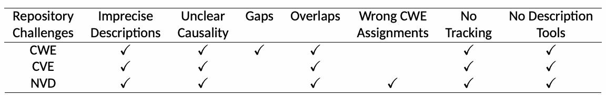
| リポジトリの課題 | 不正確な説明 | 不明確な因果関係 | 欠落 | 重複 | 誤ったCWEの割り当て | 追跡なし | 記述支援ツールなし |
|---|---|---|---|---|---|---|---|
| CWE | ✓ | ✓ | ✓ | ✓ | ✓ | ✓ | |
| CVE | ✓ | ✓ | ✓ | ✓ | ✓ | ||
| NVD | ✓ | ✓ | ✓ | ✓ | ✓ | ✓ |
The imprecise descriptions and lack of explainability make CWEs and CVEs difficult to use in modern cybersecurity research [21]. For example, the description of CWE-502 mixes the notons of validation (syntax check) and verification (semantics check), for which BF defines two distinct weakness classes [16]. The descriptions of some CWEs reveal possible causing weaknesses and even chains of weaknesses, which could be helpful but may also imply that these are the only possible causing weaknesses. They also introduce terms that are unrelated to the main weakness and may mislead experts and automated analysis about the single weakness that the CWE is meant to describe. Augmentng the CWE and CVE nat-ural language descriptions with unambiguous formal specifications that adhere to within and between weaknesses causation rules will make them more suitable for algorithms and as comprehensively labeled datasets for training AI models [22].
不正確な記述と説明可能性の欠如により、現代のサイバーセキュリティ研究ではCWEとCVEを利用しにくくなっている [21]。例えば、CWE-502の記述は、BFが異なる弱点クラスとして定義するバリデーション（構文チェック）と検証（意味チェック）の概念を混同している [16]。一部のCWEの記述は、原因となり得る弱点やその連鎖を示しており有用な場合もあるが、それらだけが原因となり得る弱点だと誤解させる恐れもある。また、主題の弱点と無関係な用語を持ち込み、CWEが説明する個々の弱点について専門家や自動解析を誤らせる可能性もある。弱点内および弱点間の因果関係規則に従う曖昧さのない形式仕様でCWEとCVEの自然言語記述を補えば、アルゴリズムによる処理に適し、AIモデルの訓練用となる包括的なラベル付きデータセットとしても有用性が高まる [22]。
Unclear causality in CVEs leads to incorrect CWE assignments. For example, in the case of CVE-2018-5907, the lack of input validation leads to integer overflow and then buffer overflow [16]. However, the NVD labels it with CWE-190: Integer Overflow or Wraparound, even though the root cause is CWE-20: Improper Input Validation. The entire chain is \(\text{CWE-20} \rightarrow \text{CWE-190} \rightarrow \text{CWE-119}\), and the last one is “Improper Restriction of Operations within the Bounds of a Memory Buffer.” CVE-2014-0160 Heartbleed [23] lists the final error at the sink — buffer over-read — as the root cause, while it is missing input verification that leads to pointer reposition over the upper bound and then to buffer over-read. For lack of a better match, NVD assigns the broader CWE-125, which covers both under-lower-bound and over-upper-bound reads from a buffer.
CVEにおける因果関係の不明瞭さは、不正確なCWEの割り当てにつながる。例えば、CVE-2018-5907の場合、入力バリデーションの欠如が整数オーバーフローを引き起こし、その後バッファオーバーフローへとつながる [16]。しかし、根本原因がCWE-20: 不適切な入力バリデーション（Improper Input Validation）であるにもかかわらず、NVDはこれにCWE-190: 整数オーバーフローまたはラップアラウンド（Integer Overflow or Wraparound）というラベルを付与している。全体の連鎖は\(\text{CWE-20} \rightarrow \text{CWE-190} \rightarrow \text{CWE-119}\)であり、最後のものは「メモリバッファの境界内における操作の不適切な制限（Improper Restriction of Operations within the Bounds of a Memory Buffer）」である。CVE-2014-0160 Heartbleed [23] では、シンクにおける最終エラーであるバッファオーバーリードを根本原因として記載しているが、実際には入力検証の欠如がポインタの上限を超えた再配置につながり、その結果バッファオーバーリードが発生している。より適切な一致がないため、NVDはより広範なCWE-125を割り当てており、これはバッファからの下限未満の読み取りと上限超過の読み取りの両方を網羅している。
CVEs that have the same root cause are also difficult to identify. For example, the CVE-2016-7523 and CVE-2016-7524, CVE-2016-7518 and CVE-2017-6500, and CVE-2019-13295 and CVE-2019-13297 couples each have the same bug with the last couple patched in two versions of the product via two different commits [20]. As the chains are incomplete for many CVEs, there is no way to go backward from the failure to reveal the root cause.
同一の根本原因を持つCVEを特定することも困難である。例えば、CVE-2016-7523とCVE-2016-7524のペア、CVE-2016-7518とCVE-2017-6500のペア、そしてCVE-2019-13295とCVE-2019-13297のペアは、それぞれ同一のバグを抱えており、最後のペアは2つの異なるコミットによって製品の2つのバージョンでパッチが適用された [20]。多くのCVEにおいて連鎖が不完全であるため、障害から遡って根本原因を明らかにすることは不可能である。
The BF addresses the challenges with the CWE and CVE descriptions via its orthogonal, multidimensional, and context-free classification structure. The BF weakness and vulner-ability specifications provide formal augmentaton to the CWE, CVE, and NVD entries.
BFは、直交的で多次元的、かつ文脈自由な分類構造によって、CWEおよびCVEの記述に関する課題に対処する。BFの弱点および脆弱性の仕様は、CWE、CVE、およびNVDのエントリに対する形式的な補強を提供する。
3. Bugs Framework Formalism
3. Bugs Frameworkの形式論
The BF is a structured multidimensional classification of security bugs and related faults as causes for the operations of distinct execution phases over their operands to result in errors and final errors as consequences. Its approach is different from the exhaustive ID-based list approach exhibited by enumerations. The BF weakness classes are organized by orthogonal sets of operations, so a BF class is identifiable by any of its operations. They allow for the expression of a weakness as a \(\langle \mathit{cause}, \mathit{operation} \rangle \rightarrow \mathit{consequence}\) triple with operation and operand attributes and a vulnerability as a chain of underlying weaknesses.
BFは、異なる実行フェーズの操作がそのオペランドに対して作用した結果としてエラーや最終エラーを引き起こす原因としてのセキュリティバグおよび関連するフォールトを、構造化された多次元分類で体系化したものである。そのアプローチは、列挙によって示される網羅的なIDベースのリストアプローチとは異なる。BFの弱点クラスは直交する操作セットによって編成されているため、BFクラスはその操作のいずれによっても特定可能である。これらにより、操作およびオペランドの属性を持つ\(\langle \mathit{cause}, \mathit{operation} \rangle \rightarrow \mathit{consequence}\)（⟨原因, 操作⟩→結果）の三つ組としての弱点の表現、ならびに根本的な弱点の連鎖としての脆弱性の表現が可能になる。
A BF weakness class is a taxonomic representation of a weakness type defined by finite sets of operations, causes, consequences, attributes, and sites. It is associated with the operations of a distinct phase of software, firmware, or hardware execution, where weaknesses of this type could happen, as well as their input operands and output results.
BFの弱点クラスは、有限個の操作、原因、結果、属性、およびサイトのセットによって定義される弱点タイプの分類学的表現である。これは、このタイプの弱点が発生し得るソフトウェア、ファームウェア、またはハードウェアの実行の個別のフェーズにおける操作、ならびにそれらの入力オペランドおよび出力結果に関連付けられている。
A BF operation is the minimal input-process-output code that can produce or propagate improper data. A cause is a bug in the operation or a fault of an input operand. A consequence is an erroneous output result from the operation over the operands. The error propagates to a fault or is a final error that enables a failure. Consequently, a BF operation is the minimal input-process-output code that can produce an error from a bug or fault, where the error propagates to another fault or is final (i.e., it is a final error).
BFの操作は、不適切なデータを生成または伝播させ得る最小の入力・処理・出力コードである。原因は、操作内のバグまたは入力オペランドのフォールトである。結果は、オペランドに対する操作からの誤った出力結果である。そのエラーはフォールトへと伝播するか、または障害（failure）を可能にする最終エラーとなる。したがって、BFの操作は、エラーが別のフォールトへと伝播するか、あるいは最終的である（すなわち、最終エラーである）ような、バグまたはフォールトからエラーを生成し得る最小の入力・処理・出力コードである。
The attributes describe the operations and operands with details on what, how, and where it went wrong. They help understand the severity of the bug or fault causing the weakness. For example, pointer overbounds faults on the stack are more severe than those on the heap because buffer overflows on the stack, although easier to exploit, are more severe than those on the heap. The sites point to syntactic places in code that should be checked for bugs or faults that cause such weaknesses.
属性は、何が、どのように、どこで問題となったかに関する詳細情報とともに、操作およびオペランドを記述する。これらは、弱点を引き起こしているバグやフォールトの深刻度を理解するのに役立つ。例えば、スタック上のポインタの境界超過フォールトは、ヒープ上のものよりも深刻である。なぜなら、スタック上のバッファオーバーフローは、悪用がより容易であるものの、ヒープ上のものよりも深刻であるためである。サイトは、そのような弱点を引き起こすバグやフォールトの有無をチェックすべきコード内の構文上の場所を指し示す。
The BF specification of a weakness is based on one taxonomic BF class; it is an instance of that BF class with one cause, one operation, one consequence, and their attributes. The operation binds the causation within a weakness as a \(\langle \mathit{cause}, \mathit{operation} \rangle \rightarrow \mathit{consequence}\) relation. For example, the deallocation via a dangling pointer leading to a final error known as double free is a weakness that is expressed formally via BF as \(\langle \mathit{Dangling\ Pointer}, \mathit{Deallocate} \rangle \rightarrow \mathit{Double\ Deallocate}\). The BF specification of a vulnerability is a chain of such instances and their \(\mathit{consequence} \curvearrowright \mathit{cause}\) between weakness propagations.
The BF is a formal system that comprises:
BFによる弱点の仕様は、1つの分類学的BFクラスに基づいている。それは、1つの原因、1つの操作、1つの結果、およびそれらの属性を持つ、そのBFクラスのインスタンスである。操作は、弱点内の因果関係を \(\langle \mathit{cause}, \mathit{operation} \rangle \rightarrow \mathit{consequence}\) 関係として結び付ける。例えば、二重解放（double free）として知られる最終エラーにつながる、ダングリングポインタを介した解放は、BFによって \(\langle \mathit{Dangling\ Pointer}, \mathit{Deallocate} \rangle \rightarrow \mathit{Double\ Deallocate}\) として形式的に表現される弱点である。BFによる脆弱性の仕様は、そのようなインスタンスと、弱点間でのそれらの \(\mathit{consequence} \curvearrowright \mathit{cause}\) 伝播の連鎖である。
BFは、以下で構成される形式的体系である：
•Strict definitions of bug, fault, error, final error, weakness, vulnerability, exploit vector, and failure in the context of cybersecurity to elucidate causation and propagation rules
•因果関係および伝播規則を明らかにするための、サイバーセキュリティの文脈におけるバグ（bug）、フォールト（fault）、エラー（error）、最終エラー（final error）、弱点（weakness）、脆弱性（vulnerability）、悪用ベクター（exploit vector）、および障害（failure）の厳密な定義
•Bugs models that define distinct execution phases with orthogonal sets of operations in which specific bugs and faults could occur and the proper flow of operations
•特定のバグやフォールトが発生し得る直交した操作セット、および適切な操作フローを伴う明確な実行フェーズを定義するバグモデル
•Structured, multidimensional, orthogonal, and context-free weakness taxonomies as weakness class types and a failure taxonomy as a failure class type
•弱点クラスタイプとしての、構造化され、多次元で、直交し、文脈自由な弱点分類体系、および障害クラスタイプとしての障害分類体系
• A vulnerability state model as a chain of improper-state \((\mathit{operation}, \mathit{operand}_1, \ldots, \mathit{operand}_n)\) tuples with a bug in the operation or a fault of an operand that enables a failure
• 操作のバグまたはオペランドのフォールトを伴い、障害を可能にする、不適切な状態の \((\mathit{operation}, \mathit{operand}_1, \ldots, \mathit{operand}_n)\) タプルの連鎖としての脆弱性状態モデル
• A vulnerability specification model as a chain of \(\langle \mathit{cause}, \mathit{operation} \rangle \rightarrow \mathit{consequence}\) instances of BF weakness classes that ends with an instance of a BF failure class
• BF障害クラスのインスタンスで終わる、BF弱点クラスの \(\langle \mathit{cause}, \mathit{operation} \rangle \rightarrow \mathit{consequence}\) インスタンスの連鎖としての脆弱性仕様モデル
•A formal language for the unambiguous causal specification of security weaknesses and vulnerabilities
•セキュリティ上の弱点および脆弱性の明確な因果関係の仕様記述のための形式言語
•Secure coding principles, such as input/output check safety, memory safety, and data type safety
•入出力チェックの安全性、メモリ安全性、データ型安全性などのセキュアコーディング原則
•Tools that facilitate the generation of CWE2BF and CVE2BF mappings and formal weakness and vulnerability specifications and their graphical representations
•CWE2BFおよびCVE2BFの対応付け、弱点と脆弱性の形式仕様、およびそれらの図式表現の生成を支援するツール。
•Comprehensively labeled weakness and vulnerability datasets
•包括的にラベル付けされた弱点および脆弱性のデータセット
•Multidimensional vulnerability classifications by common properties and similarities based on the BF taxonomies and secure coding principles
•BF分類体系およびセキュアコーディング原則に基づく、共通の特性および類似性による多次元の脆弱性分類
The BF taxonomies are structured, orthogonal, multidimensional, and context-free. Structured means that a weakness is expressed as a \(\langle \mathit{cause}, \mathit{operation} \rangle \rightarrow \mathit{consequence}\) triple with a precise causal relation. The transition from a weakness is expressed as an \(\mathit{error} \curvearrowright \mathit{fault}\) or \(\mathit{final\ error} \curvearrowright \mathit{exploit\ vector}\) propagation. These ensure clear causality within a weakness, between weaknesses, and for an exploit toward a failure.
BF分類体系は構造化されており、直交性、多次元性、文脈自由性を備えている。構造化されているとは、弱点が厳密な因果関係を伴う \(\langle \mathit{cause}, \mathit{operation} \rangle \rightarrow \mathit{consequence}\)（⟨原因, 操作⟩→結果）の3つ組として表現されることを意味する。弱点からの遷移は、\(\mathit{error} \curvearrowright \mathit{fault}\)（エラー↷フォールト）または \(\mathit{final\ error} \curvearrowright \mathit{exploit\ vector}\)（最終エラー↷エクスプロイトベクトル）の伝播として表現される。これらにより、弱点内、弱点間、および障害に至るエクスプロイトについて明確な因果関係が保証される。
Orthogonal means that the intersection of the sets of operations of any two BF classes is the empty set. It ensures that the BF weakness types do not overlap in coverage.
直交しているとは、任意の2つのBFクラスの操作の集合の積集合が空集合であることを意味する。これにより、BFの弱点タイプが対象範囲において重複しないことが保証される。
Multidimensional means that weaknesses are organized not only by their operations but also by their causes, consequences, and operation and operand attributes. It ensures the BF’s expressive power.
多次元であるとは、弱点を操作だけでなく、その原因、結果、操作属性およびオペランド属性によっても整理することを意味する。これによりBFの表現力が確保される。
Context-free means an operation cannot have different meanings depending on the language or domain. It ensures that the BF is applicable for code in any programming language and for any platform or application technology.
文脈自由であるとは、操作の意味が言語やドメインによって変わらないことを意味する。これにより、あらゆるプログラミング言語のコード、あらゆるプラットフォームやアプリケーション技術にBFを適用できる。
The BF formal language (see Sec. 8) is generated by the BF LL(1) ACFG, whose lexis, syntax, and semantics reflect the BF weakness taxonomies and bugs and vulnerability models that utilize the strict BF concept definitions for security bug, final error, weakness, vulnerability, exploit vector, and failure as well as fault and error. The LL1 CFG is pivotal, as it ensures precise, unambiguous specifications.
BF形式言語（Sec. 8を参照）はBF LL(1) ACFGによって生成され、その語彙、構文、および意味論は、フォールトやエラーに加えて、セキュリティバグ、最終エラー、弱点、脆弱性、エクスプロイトベクトル、障害に対する厳格なBF概念定義を利用するBF弱点分類体系ならびにバグおよび脆弱性モデルを反映している。LL1 CFGは正確で曖昧さのない仕様を保証するため極めて重要である。
The BF bugs models and weakness taxonomies are developed iteratively according to the BF methodology (see Sec. 6.3) and alongside the BF, BFCWE, and BFCVE tools (see Sec. 10).
BFのバグモデルと弱点分類体系は、BF方法論（Sec. 6.3参照）に従い、BF、BFCWE、BFCVEの各ツール（Sec. 10参照）と並行して反復的に開発される。
The BF formalism guarantees precise descriptions with clear causality of weaknesses (in-cluding CWE) and vulnerabilities (including CVE) and complete, orthogonal, and context-free weakness-type coverage. It forms the basis for the formal definition of secure coding principles, such as memory safety. It also enables the creation of comprehensively labeled weakness and vulnerability datasets, vulnerability classifications, and BF-based systems for bug identficaton and vulnerability detection, analysis, and resolution or mitgaton.
BF形式論は、明確な因果関係を伴う弱点（CWEを含む）および脆弱性（CVEを含む）の正確な記述、ならびに完全かつ直交的で文脈自由な弱点タイプの網羅性を保証する。これは、メモリ安全性などのセキュアコーディング原則の形式的定義の基礎を形成する。また、包括的にラベル付けされた弱点および脆弱性データセット、脆弱性分類、ならびにバグ特定や脆弱性の検出、分析、解決または緩和のためのBFベースのシステムの作成を可能にする。
3.1. BF Operation
3.1. BF操作（BF Operation）
A BF operation is the minimal input-process-output code that can produce or propagate improper data (see Fig. 1). An input operand or output result data is of a specific data type. A data type defines a set or range of data values and the operations allowed on them. It can be primitive (e.g., char, int, double, string, boolean) or structured (e.g., array, record, class). A data value is stored in a finite region of memory called an object. The boundaries of that memory define the size of the object. The address of the memory must be held by at least one pointer or determined as an offset on the stack. Otherwise, the object would be unreachable. Code (i.e., functions) and data type metadata are also stored in memory and can be referred to by pointers. A function is an organized, reusable block of code that takes inputs and returns outputs of specific data types.
BF操作（BF operation）とは、不適切なデータを生成または伝播させる可能性のある最小限の入力・処理・出力コードである（図1参照）。入力オペランドまたは出力結果データは、特定のデータ型を持つ。データ型は、データ値の集合または範囲と、それらに対して許可される操作を定義する。これはプリミティブ型（例：char、int、double、string、boolean）または構造化型（例：array、record、class）になり得る。データ値は、オブジェクトと呼ばれる有限のメモリ領域に格納される。そのメモリの境界がオブジェクトのサイズを定義する。そのメモリのアドレスは、少なくとも1つのポインタによって保持されるか、スタック上のオフセットとして決定されなければならない。そうでなければ、オブジェクトは到達不能になる。コード（すなわち関数）およびデータ型のメタデータもメモリに格納され、ポインタによって参照できる。関数とは、入力を受け取り特定のデータ型の出力を返す、体系化された再利用可能なコードブロックである。
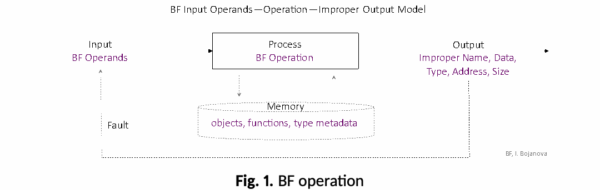
図1は、入力オペランドを処理して出力を生成するBF操作を示し、不適切な名前・データ・型・アドレス・サイズと障害の関係を表す。
Consequently, the possible enttes stored in memory are objects, functions, and types. The possible BF input operands and output results are: name, data (i.e., the data value), type (i.e., the data type), address, and size. A BF operation then is the minimal input-process-output code that can produce or propagate improper name, data, type, address, or size (see the purple terms in Fig. 1). BF operations could be as simple as dereferencing or repositioning a pointer or as com-plex as encryption or authentcaton involving sophistcated algorithms. Other examples include data verification, type coercion, and reading or deallocatng an object. Examples of improper output results and input operands are wrong value and wrap-around as data, insufficient size and cast pointer as type, dangling pointer and over-bounds pointer as ad-dress, and wrong resolved object and wrong generic function bound as name.
したがって、メモリに格納される可能性のあるエンティティは、オブジェクト、関数、および型である。BFの入力オペランドおよび出力結果としてあり得るものは、名前、データ（すなわちデータ値）、型（すなわちデータ型）、アドレス、およびサイズである。したがって、BF操作とは、不適切な名前、データ、型、アドレス、またはサイズを生成または伝播させうる最小限の「入力-処理-出力」コードである（図1の紫色の用語を参照）。BF操作は、ポインタの間接参照や再配置のように単純なものもあれば、高度なアルゴリズムを伴う暗号化や認証のように複雑なものもある。その他の例としては、データの検証、型の強制変換（型変換）、オブジェクトの読み取りや解放（デアロケーション）などがある。不適切な出力結果および入力オペランドの例としては、データとしては不正な値やラップアラウンド、型としては不十分なサイズやキャストポインタ、アドレスとしてはダングリングポインタや境界外ポインタ、名前としては誤って解決されたオブジェクトや誤って束縛されたジェネリック関数などが挙げられる。
The output result of a BF operation is always erroneous; for that, either the operation or an input operand is improper. An operation is improper if it has a bug, and an operand is improper if it is ill-formed (i.e., it is at fault). The erroneous output propagates to become the improper input of another BF operation or eventually is final. Consequently, a BF operation is the minimal input-process-output code that — because of a bug or fault — results in an error that propagates to another fault or is final (i.e., it is a final error). The fault is of a name, data, type, address, or size (see Fig. 1).
BF 操作の出力結果は常にエラーを含む。そのためには、操作か入力オペランドのいずれかが不適切である。操作はバグを持つ場合に不適切であり、オペランドは不正な形式である（すなわちフォールトを持つ）場合に不適切である。エラーを含む出力は伝播して別の BF 操作の不適切な入力となるか、最終的なものとなる。したがって、BF 操作とは、バグまたはフォールトのために、別のフォールトに伝播するか最終的なものとなる（すなわち最終エラーである）エラーをもたらす、最小の入力・処理・出力のコードである。フォールトは、名前、データ、型、アドレス、またはサイズのフォールトである（図 1 を参照）。
3.2. BF Bug, Fault, and Weakness
3.2. BFのバグ、フォールト、および弱点
The BF bugs and faults landscape covers the operations in software, firmware, and hardware execution phases at appropriate levels of abstraction. The software operations relate to code in applications, libraries, utilities, programming languages, services, and OSs. The firmware operations relate to code in device drivers, basic input/output systems (BIOS), bootloaders, and microcontrollers, as well as to microcode in central processing units (CPU) and other hardware components that require low-level control and flexibility. The hardware operations relate to electronic circuit logic, which adheres to the same input-process-output model as software and firmware operations.
BF のバグとフォールトの全体像は、ソフトウェア、ファームウェア、およびハードウェアの実行フェーズにおける操作を、適切な抽象度で網羅する。ソフトウェアの操作は、アプリケーション、ライブラリ、ユーティリティ、プログラミング言語、サービス、および OS のコードに関係する。ファームウェアの操作は、デバイスドライバ、BIOS（basic input/output system）、ブートローダ、およびマイクロコントローラのコードに関係し、また中央処理装置（CPU）や、低レベルの制御と柔軟性を必要とするその他のハードウェアコンポーネントのマイクロコードにも関係する。ハードウェアの操作は電子回路のロジックに関係し、これはソフトウェアやファームウェアの操作と同じ入力・処理・出力モデルに従う。
A BF security bug is a defect in the code or specification (i.e., metadata or algorithm) of software, firmware, or hardware circuit logic. A bug could be introduced in an operation (i.e., the improper operation) by a programmer, be the result of a design flaw, or be induced by a hardware defect. Hardware defects can result from overheating, radiation effects, electromagnetic interference (EMI), electrical noise, voltage variations, electromagnetic fields, photon injection, wear and tear, or other physical factors.
BF のセキュリティバグとは、ソフトウェア、ファームウェア、またはハードウェア回路ロジックのコードまたは仕様（すなわちメタデータまたはアルゴリズム）の欠陥である。バグは、プログラマによって操作に混入される（すなわち不適切な操作となる）場合もあれば、設計上の欠陥の結果である場合も、ハードウェアの欠陥によって誘発される場合もある。ハードウェアの欠陥は、過熱、放射線の影響、電磁干渉（EMI）、電気的ノイズ、電圧変動、電磁界、光子注入、摩耗、またはその他の物理的要因から生じうる。
Examples of code bugs include missing code (i.e., part of an operation or an entire operation is missing) or erroneous code (e.g., use of a wrong operator in an operation). A memory bit flip due to a hardware defect can corrupt a low-level instruction. Examples of specification bugs include the use of an under-restrictive safelist for input validation or a wrong algorithm for encryption.
コードのバグの例には、コードの欠落（すなわち操作の一部または操作全体が欠落している）や誤ったコード（例えば、操作における誤った演算子の使用）がある。ハードウェアの欠陥によるメモリのビット反転は、低レベルの命令を破損させうる。仕様のバグの例には、入力検証における制限の緩すぎるセーフリストの使用や、暗号化における誤ったアルゴリズムの使用がある。
A bug could also resurface from design flaws, such as an unaccounted-for system configuration or environment. For example, while an operation may run perfectly in a 64-bit operating system (OS) environment, it may exhibit a security bug on a 32-bit platform. The declaration of an int instead of uint object would lead to a wraparound from a 32-bit calculation that would eventually propagate to a buffer overflow.
バグは、考慮されていないシステム構成や環境など、設計上の欠陥から再び表面化することもある。例えば、ある操作が 64 ビットのオペレーティングシステム（OS）環境では完全に動作しても、32 ビットのプラットフォームではセキュリティバグを示すことがある。uint ではなく int としてオブジェクトを宣言すると、32 ビットの計算でラップアラウンドが生じ、それが最終的にバッファオーバーフローへと伝播する。
A BF fault 1 is a name, data, type, address, or size error (i.e., an improper operand). Name relates to a resolved or bound object, function, or data type. Data, type, address, and size relate to an object. A fault of an operand (i.e., the improper operand) could result from a bug or another fault or be induced by a hardware defect. Only in the case of low-level storage (e.g., cache and CPU registers) is there no type fault. Adding to the examples of improper input operands in Sec. 3.1, other faults include invalid data, wild pointer, wrong type, or missing overridden function. A wrong value could result from a missing validation or an erroneous calculation bug, but also from bit flips or signal disruption due to overheating or other physical factors.
BF フォールト 1 とは、名前、データ、型、アドレス、またはサイズのエラー（すなわち不適切なオペランド）である。名前は、解決または束縛されたオブジェクト、関数、またはデータ型に関係する。データ、型、アドレス、およびサイズはオブジェクトに関係する。オペランドのフォールト（すなわち不適切なオペランド）は、バグや別のフォールトから生じる場合もあれば、ハードウェアの欠陥によって誘発される場合もある。低レベルの記憶域（例えばキャッシュや CPU レジスタ）の場合に限り、型のフォールトは存在しない。3.1 節の不適切な入力オペランドの例に加え、その他のフォールトには、無効なデータ、ワイルドポインタ、誤った型、またはオーバーライドされた関数の欠落がある。誤った値は、検証の欠落や誤った計算というバグから生じうるが、過熱やその他の物理的要因によるビット反転や信号の乱れからも生じうる。
The BF models a security weakness as an improper execution state and its transition to another weakness or a failure (see Fig. 2). An improper state is defined as an \((\mathit{operation}, \mathit{operand}_1, \ldots, \mathit{operand}_n)\) tuple with at least one improper element (depicted in Fig. 2 in purple). A transition is defined by the erroneous output from the operation over its input operands. An improper operation or operand is the cause of a security weakness. The erroneous result from the operation over the operands is the consequence of that weakness and becomes a cause of another weakness or enables a failure. An operation is improper if it has a bug. An operand is improper if it is ill-formed (i.e., it is at fault).
BFはセキュリティ弱点を、不適切な実行状態と、別の弱点または障害への遷移としてモデル化する（図2参照）。不適切な状態は、少なくとも1つの要素が不適切である \((\mathit{operation}, \mathit{operand}_1, \ldots, \mathit{operand}_n)\) タプルとして定義される（図2では紫色で示す）。遷移は、入力オペランドに対する操作からの誤った出力によって定義される。不適切な操作またはオペランドは、セキュリティ弱点の原因である。オペランドに対する操作からの誤った結果はその弱点の結果であり、別の弱点の原因となるか、または障害を可能にする。操作にバグがある場合、その操作は不適切である。オペランドが不正な形式である（すなわち、フォールトがある）場合、そのオペランドは不適切である。
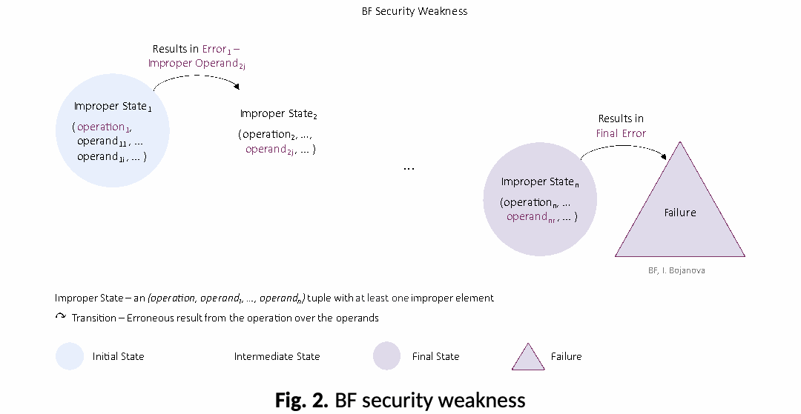
図2は、バグや障害に起因する不適切状態から、エラーを介して別の状態やセキュリティ上の失敗に至る弱点のモデルを示す。
The initial state (depicted in Fig. 2 in blue) is caused by a bug that, if fixed, will resolve the weakness. An intermediate state (in light purple) is caused by a fault. The final state (in dark purple) results in an undefined or exploitable system behavior (i.e., a final error). For example, in Fig. 2, the improper \(\mathit{operation}_1\) from \(\mathit{Improper\ State}_1\) results in improper \(\mathit{operand}_{2i}\) that causes \(\mathit{Improper\ State}_2\). The last \(\mathit{operation}_n\) results in a Final Error that enables a Failure.
初期状態（図2では青色で示す）は、修正すればその弱点が解消されるバグによって引き起こされる。中間状態（薄紫色）はフォールトによって引き起こされる。最終状態（濃紫色）は、未定義または悪用可能なシステム動作（すなわち、最終エラー）をもたらす。例えば図2において、不適切な \(\mathit{operation}_1\)（\(\mathit{Improper\ State}_1\) からのもの）は、不適切な \(\mathit{operand}_{2i}\) をもたらし、これが \(\mathit{Improper\ State}_2\) を引き起こす。最後の \(\mathit{operation}_n\) は Final Error（最終エラー）をもたらし、それが Failure（障害）を可能にする。
enables a Failure. The possible improper states depending on the cause and consequence of a security weak-ness are presented in Fig. 3. An improper state is caused by a security bug (i.e., the oper-aton is improper) or a fault (i.e., an input operand is improper). The consequence of an improper state is an error that propagates to another fault or is a security final error.
Failure（障害）を可能にする。セキュリティ弱点の原因および結果に応じて起こり得る不適切な状態を図3に示す。不適切な状態は、セキュリティバグ（すなわち、操作が不適切である）またはフォールト（すなわち、入力オペランドが不適切である）によって引き起こされる。不適切な状態の結果は、別のフォールトへ伝播するエラー、またはセキュリティ上の最終エラーである。
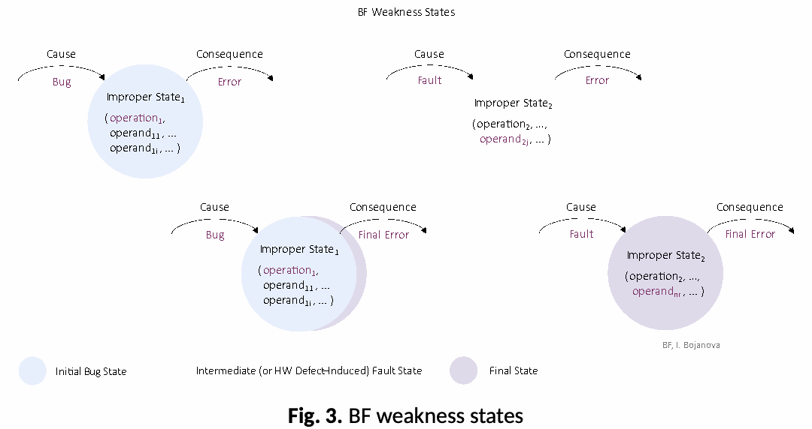
図3は、バグまたは障害を原因とし、操作の結果としてエラーや別の弱点が生じる状態遷移を示す。
A BF security weakness is a \(\langle \mathit{cause}, \mathit{operation} \rangle \rightarrow \mathit{consequence}\) relation triple, which is formally a \(\langle \mathit{bug}, \mathit{operation} \rangle \rightarrow \mathit{error}\), \(\langle \mathit{fault}, \mathit{operation} \rangle \rightarrow \mathit{error}\), \(\langle \mathit{bug}, \mathit{operation} \rangle \rightarrow \mathit{final\ error}\), or \(\langle \mathit{fault}, \mathit{operation} \rangle \rightarrow \mathit{final\ error}\) causal triple of a bug or fault weakness type. A bug informs that the operation is improper, while a fault informs about an improper operand.
BFセキュリティ弱点とは、\(\langle \mathit{cause}, \mathit{operation} \rangle \rightarrow \mathit{consequence}\)（⟨原因, 操作⟩→結果）という関係の3つ組であり、形式的には、バグまたはフォールトの弱点タイプの \(\langle \mathit{bug}, \mathit{operation} \rangle \rightarrow \mathit{error}\)、\(\langle \mathit{fault}, \mathit{operation} \rangle \rightarrow \mathit{error}\)、\(\langle \mathit{bug}, \mathit{operation} \rangle \rightarrow \mathit{final\ error}\)、または \(\langle \mathit{fault}, \mathit{operation} \rangle \rightarrow \mathit{final\ error}\) という因果の3つ組である。バグは操作が不適切であることを示し、フォールトは不適切なオペランドについて示す。
Examples of weaknesses include \(\langle \mathit{Missing\ Code}, \mathit{Sanitize} \rangle \rightarrow \mathit{SQL\ Injection}\), \(\langle \mathit{Wrong\ Size}, \mathit{Reposition} \rangle \rightarrow \mathit{Overbound\ Pointer}\), and \(\langle \mathit{Dangling\ Pointer}, \mathit{Read} \rangle \rightarrow \mathit{Use\ After\ Deallocate}\). In the C programming language, the last final error is known as use after free.
弱点の例としては、\(\langle \mathit{Missing\ Code}, \mathit{Sanitize} \rangle \rightarrow \mathit{SQL\ Injection}\)、\(\langle \mathit{Wrong\ Size}, \mathit{Reposition} \rangle \rightarrow \mathit{Overbound\ Pointer}\)、および \(\langle \mathit{Dangling\ Pointer}, \mathit{Read} \rangle \rightarrow \mathit{Use\ After\ Deallocate}\) などがある。Cプログラミング言語では、最後の最終エラーはuse after freeとして知られている。
3.3. BF Vulnerability
3.3. BF脆弱性
The BF models a security vulnerability as a chain of improper states that propagate as the error (i.e., the erroneous output) from one state becomes the fault (i.e., the improper input) for the next state until a final error that can be exploited toward a security failure is reached (see Fig. 4). That is, a vulnerability is a causal chain of weaknesses. The initial state (depicted in blue) is caused by a software or firmware bug (i.e., an operation defect) (see the blue solid arrow), which if fixed will resolve the vulnerability. A vulnerability chain may also start from a hardware defect-induced bug or fault (see the green dashed arrows), which if fixed will resolve that vulnerability.
BFはセキュリティ脆弱性を、不適切な状態の連鎖としてモデル化する。ある状態のエラー（誤った出力）が次の状態のフォールト（不適切な入力）となって伝播し、セキュリティ障害につながる悪用可能な最終エラーに至る（図4参照）。つまり、脆弱性とは弱点の因果的な連鎖である。初期状態（青色）はソフトウェアまたはファームウェアのバグ（操作の欠陥）によって生じる（青色の実線矢印）。そのバグを修正すれば脆弱性は解消される。脆弱性の連鎖は、ハードウェアの欠陥に起因するバグまたはフォールトから始まる場合もあり（緑色の破線矢印）、その欠陥を修正すれば脆弱性は解消される。
A propagation state (depicted in light purple) is caused by a fault (i.e., an operand er-ror). The final state (shown in dark purple) results in a final error (i.e., an undefined or exploitable system behavior) and can lead to a failure (i.e., a violation of a system security requirement). It usually directly relates to a CWE, but there are also CWEs that correspond to initial or propagation weakness states. An error is the result of an improper state opera-ton over its operands. It becomes an improper operand — a fault — for the next improper state. A final error is the result of the operation from the final improper state. It introduces an exploit vector — that is, the pathway for exploitaton — toward a security failure.
伝播状態（薄紫色で描画）はフォールト（すなわち、オペランドのエラー）によって引き起こされる。最終状態（濃い紫色で表示）は最終エラー（すなわち、未定義または悪用可能なシステム動作）をもたらし、障害（すなわち、システムセキュリティ要件の違反）につながる可能性がある。これは通常CWEと直接関連するが、初期または伝播の弱点状態に対応するCWEも存在する。エラーとは、オペランドに対する不適切な状態の操作の結果である。これは次の不適切な状態にとっての不適切なオペランド、すなわちフォールトとなる。最終エラーとは、最終的な不適切な状態からの操作の結果である。これはセキュリティ障害へ向けた悪用ベクトル、すなわち悪用への経路を導入する。
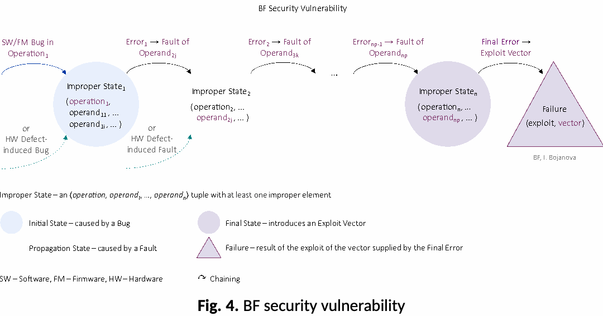
図4は、ソフトウェア／ファームウェアのバグまたはハードウェア欠陥から弱点が連鎖し、最終エラーと悪用ベクトルを経て失敗に至る脆弱性モデルを示す。
For example, in Fig. 4, \(\mathit{operation}_{1}\) from \(\mathit{Improper\ State}_{1}\) is improper due to a bug and results in \(\mathit{Error}_{1}\) that propagates to the improper \(\mathit{operand}_{2j}\), which leads to \(\mathit{Improper\ State}_{2}\). The last \(\mathit{operation}_{n}\) with improper \(\mathit{operand}_{np}\) results in a Final Error that propagates to an
例えば図4では、\(\mathit{operation}_{1}\) は \(\mathit{Improper\ State}_{1}\) からの操作であり、バグのために不適切であって、その結果 \(\mathit{Error}_{1}\) が生じる。これは不適切な \(\mathit{operand}_{2j}\) へ伝播し、\(\mathit{Improper\ State}_{2}\) につながる。最後の \(\mathit{operation}_{n}\) は、不適切な \(\mathit{operand}_{np}\) を伴って最終エラー（Final Error）をもたらし、これが次のものへ伝播する：
For example, in Fig. 4, \(operation_1\) from Improper \(State_1\) is improper due to a bug and results in \(Error_1\) that propagates to the improper \(operand_{2j}\), which leads to Improper \(State_2\). The last \(operation_n\) with improper \(operand_{np}\) results in a Final Error that propagates to an Exploit Vector to enable a Failure.
翻訳準備中
As errors propagate to faults, the examples of faults also apply to errors. However, an error may be on a higher level of abstraction than a specific fault. For example, an inconsistent value error may propagate to the more specific wrong argument data fault (e.g., see the discussion about Fig. 5) or wrong size fault (e.g., see the discussion about Fig. 17).
翻訳準備中
Examples of final errors include integer overflow, query injection, buffer overflow, and side communication channels. Legitmate and side channels may also be direct exploit vectors without prior causation. Examples of failures include information exposure (IEX) (i.e., con-fidentality loss), data tampering (TPR) (i.e., integrity loss), denial of service (DOS) (i.e., availability loss), and arbitrary code execution (ACE) (i.e., everything could be lost).
最終エラーの例としては、整数オーバーフロー（integer overflow）、クエリ注入（query injection）、バッファオーバーフロー（buffer overflow）、サイド通信チャネル（side communication channels）などがある。正規のチャネルおよびサイドチャネルもまた、事前の因果関係を伴わない直接的なエクスプロイトベクターとなる場合がある。障害の例としては、情報漏えい（IEX: information exposure、すなわち機密性の喪失）、データ改ざん（TPR: data tampering、すなわち完全性の喪失）、サービス運用妨害（DOS: denial of service、すなわち可用性の喪失）、および任意コード実行（ACE: arbitrary code execution、すなわちすべてが失われる可能性があること）が含まれる。
The initial bug state is of an improper operation over proper operands. It is the state with a defect in the operation. The bug must be fixed to resolve the vulnerability. A fault state is of a proper operation over an improper operand. It is a state with a defect in an operand that — if fixed — would only mitigate a vulnerability. If the initial state is caused by a hardware defect-induced fault, its fix will resolve the vulnerability.
初期のバグ状態（bug state）は、適切なオペランドに対する不適切な操作の状態である。これは操作に欠陥がある状態である。脆弱性を解消するには、そのバグを修正しなければならない。フォールト状態（fault state）は、不適切なオペランドに対する適切な操作の状態である。これはオペランドに欠陥がある状態であり、修正されたとしても脆弱性を緩和するにとどまる。初期状態がハードウェアの欠陥によって引き起こされたフォールトによるものである場合、その修正によって脆弱性は解消される。
Vulnerabilities may also converge at their final states and chain via faults resulting from exploits. The converged final states enable a security failure, which would not have been harmful if only one were present. The chained faults-only vulnerabilities propagate toward a final security failure.
脆弱性は、最終状態において収束し、エクスプロイトから生じるフォールトを介して連鎖することもある。収束した最終状態はセキュリティ障害を可能にするが、そのうち1つだけが存在していた場合には有害ではなかったはずのものである。連鎖したフォールトのみの脆弱性は、最終的なセキュリティ障害に向かって伝播する。
A particular BF security vulnerability chain may correspond to more than one CVE. For example, BadAlloc is a vulnerability pattern that covers more than 25 similar CVEs [25] related to memory allocators, such as malloc() and calloc(). They were found in widely used real-time operating systems (RTOS), standard C libraries, IoT device SDKs, and other self-memory management applications going as far back as the early ‘90s [26].
特定のBFセキュリティ脆弱性チェーンが、複数のCVEに対応する場合がある。例えば、BadAllocはメモリアロケータ（malloc()やcalloc()など）に関する25件を超える類似CVE[25]をまとめた脆弱性パターンである。これらは、広く利用されるリアルタイムOS（RTOS）、標準Cライブラリ、IoTデバイスSDK、その他の自己メモリ管理アプリケーションで見つかっており、その起源は1990年代初頭にまで遡る[26]。
The BF causal chain of the BadAlloc vulnerability pattern comprises five BF weaknesses [1]: \(\mathit{DVR} \curvearrowright \mathit{TCM} \curvearrowright \mathit{MMN} \curvearrowright \mathit{MAD} \curvearrowright \mathit{MUS}\) (see Fig. 5). The first weakness is at the input data verification phase of software execution. The memory allocation implementation has no proper size verification toward the maximum allowed value accounting for how the requested memory size is calculated — that is, a BF Data Verification (DVR) weakness [1]. This input becomes a wrong argument for a calculation that produces a value greater than the maximum integer allowed for the particular operating environment (e.g., \(2^{32} - 1\) for a 32-bit OS) and wraps around the result (i.e., integer overflow error) — that is, a BF Type Computation (TCM) weakness [1].
BadAlloc脆弱性パターンのBF因果チェーンは、5つのBF弱点 [1]、すなわち \(\mathit{DVR} \curvearrowright \mathit{TCM} \curvearrowright \mathit{MMN} \curvearrowright \mathit{MAD} \curvearrowright \mathit{MUS}\) から構成される（図5を参照）。第1の弱点は、ソフトウェア実行の入力データ検証フェーズにある。メモリ確保の実装では、要求されたメモリサイズがどのように計算されるかを考慮した、最大許容値に対する適切なサイズ検証が行われていない。すなわち、BFデータ検証（DVR: Data Verification）弱点である [1]。この入力は、特定の動作環境で許容される最大整数（例：32ビットOSの場合は \(2^{32} - 1\)）を超える値を生成し、結果をラップアラウンドさせる計算（すなわち整数オーバーフローエラー）に対する誤った引数となる。すなわち、BF型計算（TCM: Type Computation）弱点である [1]。
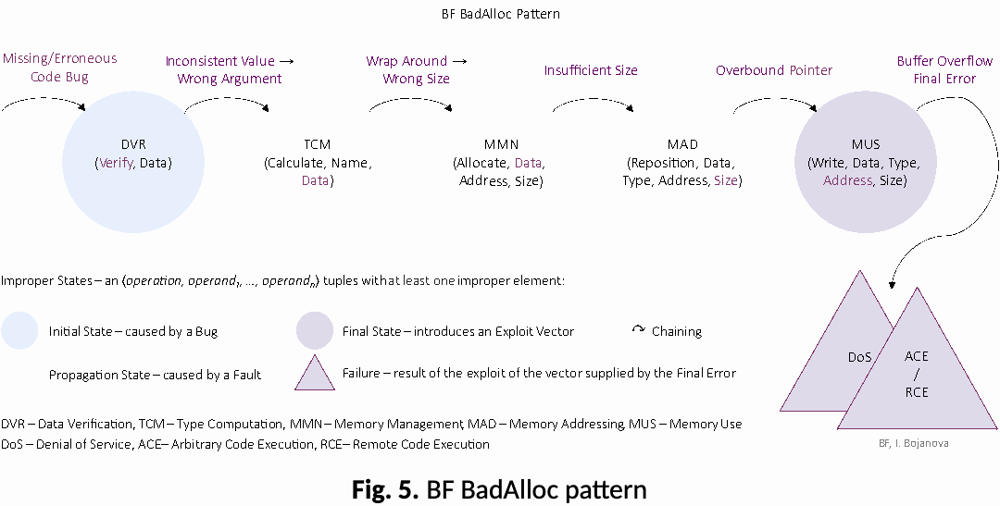
図5は、BadAllocの脆弱性パターンを示す。データ検証、型計算、メモリ管理、アドレス指定、メモリ使用に関わる弱点が連鎖し、バッファオーバーフローに至る。
Consequently, a much smaller wrong size is used at allocation resulting in a memory buffer with an insufficient size — that is, a BF Memory Management (MMN) weakness [1]. This al-lows a pointer to be repositioned outside the buffer boundary — a BF Memory Addressing (MAD) weakness [1]— and data to be written there — a BF Memory Use (MUS) weakness [1]. The buffer overflow final error can then be exploited toward a DOS or ACE (specifically, remote code execution [RCE] on a targeted device) failure.
その結果、確保時に著しく小さな誤ったサイズが使用され、不十分なサイズのメモリバッファが生じる — すなわち、BFメモリ管理（MMN）弱点である [1]。これにより、ポインタをバッファ境界の外側に再配置することが可能になり — BFメモリアドレッシング（MAD）弱点 [1] —、そこにデータを書き込むことが可能になる — BFメモリ使用（MUS）弱点 [1]。その後、バッファオーバーフローの最終エラーが悪用され、DOSまたはACE（具体的には、対象デバイス上でのリモートコード実行［RCE］）の障害に至る可能性がある。
CVE-2021-21834 is one particular vulnerability that strictly follows the BadAlloc pattern (see its BF CVE-2021-21834 specification at [1]).
CVE-2021-21834は、BadAllocパターンに厳密に従う特定の脆弱性の1つである（[1]のBF CVE-2021-21834仕様を参照）。
3.4. BF Bug Identficaton
3.4. BFバグ特定
If there is a cybersecurity failure, there should be a way to identify the root cause (i.e., the security bug) and the chain of triggered improper execution states that enables the failure.
サイバーセキュリティ上の障害が発生した場合、その根本原因（すなわちセキュリティバグ）と、障害を可能にする不適切な実行状態の連鎖を特定できる手段が必要である。
Theoretcally, addressing the problem of identfying a security bug would be first to gen-erate the graph of all possible vulnerability chains of weaknesses. Then, search the graph via brute force recursive backtracking with specific constraints to find the set of possible valid paths. Finally, select the only proper path via code analysis.
理論的には、セキュリティバグを特定するという課題に対処するには、まず弱点からなる考えられるすべての脆弱性チェーンのグラフを生成することになる。次に、特定の制約を伴うブルートフォースの再帰的バックトラッキングによってグラフを探索し、考えられる有効なパスのセットを見つける。最後に、コード解析によって唯一の適切なパスを選択する。
However, the BF formalism ensures predictive recursive-descent parsing that does not require backtracking, as the BF formal language is generated by an LL(1) CFG. Knowing the failure and the possible transitions at execution that adhere to the BF causation within a weakness as a \(\langle \mathit{cause}, \mathit{operation} \rangle \rightarrow \mathit{consequence}\) relation and between weaknesses via a \(\mathit{consequence} \curvearrowright \mathit{cause}\) propagation (see Sec. 7.2), the bug can be identified going backward \(\curvearrowleft\) from the final weakness until an operation is improper (see Fig. 6). Fixing the bug within that operation would resolve the vulnerability.
しかし、BF形式言語はLL(1) CFGによって生成されるため、BFの形式化は、バックトラッキングを必要としない予測的な再帰下降構文解析を保証する。障害と、実行時に起こり得る遷移が分かっていれば、バグを特定できる。この遷移は、弱点内では \(\langle \mathit{cause}, \mathit{operation} \rangle \rightarrow \mathit{consequence}\) の関係として、弱点間では \(\mathit{consequence} \curvearrowright \mathit{cause}\) の伝播として（セクション7.2を参照）、BFの因果関係に従う。バグは、最後の弱点（final weakness）から、ある操作（operation）が不適切になるところまで逆方向 \(\curvearrowleft\) にたどることで特定できる（図6を参照）。その操作内のバグを修正すれば、脆弱性は解消される。
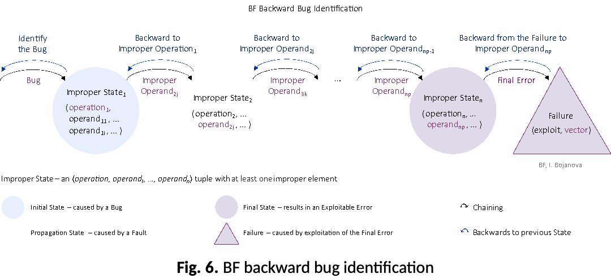
図6は、失敗から状態遷移を逆向きにたどり、脆弱性の原因となったバグを特定する方法を示す。
Using the BF formal language syntax and semantics that are based on the BF taxonomies, models, and causation and propagation rules, (see Sec. 5, 6, 7, and 8) a state tree can be directly generated backward starting from a failure and a final error or weakness. The state tree is an undirected graph with exactly one simple path between any pair of nodes. The failure is the root of the tree, and each path is a reverted possible vulnerability specification chain of weaknesses from the final error through faults to a bug. A weakness is specified as a \(\langle \mathit{bug}/\mathit{fault}, \mathit{operation} \rangle \rightarrow \mathit{error}/\mathit{final\ error}\) causal triple. This methodology allows for the generation of a reasonable number of possible BF specification chains of weaknesses for a particular CVE. The only proper path can then be identified as the rest get eliminated via code analysis.
BFの分類法、モデル、ならびに因果関係および伝播の規則（セクション5、6、7、および8を参照）に基づくBF形式言語の構文と意味論を使用することで、障害および最終エラーまたは弱点から逆方向に開始して状態木を直接生成できる。この状態木は、任意のノードの対の間に単純パスがちょうど1つだけ存在する無向グラフである。障害が木の根であり、各パスは、最終エラーからフォールトを経てバグに至る、弱点の考えられる脆弱性仕様チェーンを逆順にしたものである。弱点は、\(\langle \mathit{bug}/\mathit{fault}, \mathit{operation} \rangle \rightarrow \mathit{error}/\mathit{final\ error}\)（⟨バグ／フォールト, 操作⟩→エラー／最終エラー）という因果の三つ組として指定される。この方法論により、特定のCVEに対して、弱点からなるBF仕様チェーンの候補を妥当な数だけ生成できる。その後、コード解析によって残りが排除されるので、唯一の適切なパスを特定できる。
4. BF Security Concepts
4. BFセキュリティ概念
A BF security bug or weakness type relates to a distinct software, firmware (including microcode), or hardware circuit logic execution phase defined by a set of BF operations and their input operands and output results.
BFセキュリティバグまたは弱点タイプは、一連のBF操作ならびにそれらの入力オペランドおよび出力結果によって定義される、ソフトウェア、ファームウェア（マイクロコードを含む）、またはハードウェア回路ロジックの個別の実行フェーズに関連する。
A BF operation is the minimal input-process-output code that can produce or propagate an improper name, data, type, address, or size.
BF操作とは、不適切な名前、データ、型、アドレス、またはサイズを生成または伝播させ得る最小の入力・処理・出力コードである。
The BF defines the concepts of bug, fault, error, final error, weakness, vulnerability, exploit vector, and failure in the context of cybersecurity to provide the level of detail and granularity needed to understand the causation within a weakness and the causation and propagation between weaknesses and between vulnerabilities.
BFはサイバーセキュリティの文脈で、バグ、フォールト、エラー、最終エラー、弱点、脆弱性、エクスプロイトベクトル、障害の概念を定義する。これにより、弱点内部の因果関係、および弱点間・脆弱性間の因果関係と伝播を理解するために必要な詳細さと粒度を提供する。
•A security bug is a code or specification defect (i.e., an operation defect) in software, firmware, or hardware circuit logic — that is, proper operands over an improper operation. The specification includes the operation metadata and algorithm.
•セキュリティバグとは、ソフトウェア、ファームウェア、またはハードウェア回路ロジックにおけるコードまたは仕様の欠陥（すなわち操作の欠陥）である。つまり、適切なオペランドに対して操作が不適切である状態である。仕様には操作のメタデータとアルゴリズムが含まれる。
A bug could be introduced by a programmer, be the result of a design flaw, or induced by a hardware defect (e.g., due to overheating). A bug could also resurface from a design flaw (e.g., an unaccounted-for system configuration or environment).
バグはプログラマーが持ち込むことも、設計上の欠陥やハードウェアの欠陥（例：過熱）によって生じることもある。また、考慮されていなかったシステム構成や環境など、設計上の欠陥から再び表面化することもある。
•A fault is a name, data, type, address, or size error (i.e., an operand error) — that is, an improper operand over a proper operation.
•フォールトとは、名前、データ、型、アドレス、またはサイズに関するエラー（すなわちオペランドのエラー）である。つまり、適切な操作に対してオペランドが不適切な状態である。
A fault could result from a bug or another fault or be induced by a hardware defect. In the case of low-level storage (e.g., cache and CPU registers), there is no type fault.
フォールトはバグや別のフォールトから生じる場合も、ハードウェアの欠陥によって引き起こされる場合もある。低レベルの記憶領域（例：キャッシュやCPUレジスタ）には、型のフォールトはない。
•An error is the result of an operation with a bug or faulty operand that propagates to a fault of an operand of another operation.
•エラーとは、バグまたはフォールトのあるオペランドを伴う操作の結果であり、別の操作のオペランドに対するフォールトへと伝播する。
•A security final error is an undefined or exploitable system behavior. A final error results from an operation with a bug or faulty operand.
•セキュリティ上の最終エラーとは、未定義または悪用可能なシステム動作である。最終エラーは、バグまたはフォールトのあるオペランドを伴う操作から生じる。
• A security weakness is a \(\langle \mathit{bug}, \mathit{operation} \rangle \rightarrow \mathit{error}\), \(\langle \mathit{fault}, \mathit{operation} \rangle \rightarrow \mathit{error}\), \(\langle \mathit{bug}, \mathit{operation} \rangle \rightarrow \mathit{final\ error}\), or \(\langle \mathit{fault}, \mathit{operation} \rangle \rightarrow \mathit{final\ error}\) causal triple.
• セキュリティ弱点（security weakness）とは、\(\langle \mathit{bug}, \mathit{operation} \rangle \rightarrow \mathit{error}\)、\(\langle \mathit{fault}, \mathit{operation} \rangle \rightarrow \mathit{error}\)、\(\langle \mathit{bug}, \mathit{operation} \rangle \rightarrow \mathit{final\ error}\)、または \(\langle \mathit{fault}, \mathit{operation} \rangle \rightarrow \mathit{final\ error}\) という因果の三つ組（バグまたはフォールト、操作、エラーまたは最終エラー）である。
•A security vulnerability is a causal chain of weaknesses that starts with a bug or hardware defect-induced fault, propagates through errors that become faults, and ends with a final error that introduces an exploit vector.
•セキュリティ脆弱性とは、バグまたはハードウェアの欠陥に起因するフォールトから始まり、エラーがフォールトとなって伝播し、エクスプロイトベクトルをもたらす最終エラーに至る、弱点の因果的な連鎖である。
The first weakness concerns the root cause of the vulnerability, and the last weakness concerns its sink.
最初の弱点は脆弱性の根本原因に関係し、最後の弱点はそのシンクに関係する。
•A security exploit vector is the pathway for the exploitaton of a vulnerability.
•セキュリティエクスプロイトベクター（security exploit vector）とは、脆弱性の悪用のための経路である。
•A security failure is a violation of a system security requirement caused by the exploitation of a security vulnerability.
•セキュリティ障害（security failure）とは、セキュリティ脆弱性の悪用によって引き起こされるシステムセキュリティ要件の違反である。
The BF security concept definitions are contextually visualized in Fig. 7. Following the blue solid initial arrow, a security vulnerability may start with a software or firmware security bug (i.e., a code or specification defect within an operation). Following the green dashed arrow, a vulnerability chain may also start from a hardware defect-induced fault. Fixing the bug or hardware defect-induced fault will resolve the vulnerability, as well as any other vulnerability with the same root cause. Fixing a propagated fault, including the cause of the final error at the sink, will only mitigate the vulnerability. Occasionally, several vulnerabilities must converge at their final errors for an exploit to be harmful. Fixing the bug or starting fault of at least one of the chains would avoid the failure. An exploit of a vulnerability may result in a fault starting a new faults-only vulnerability. Fixing the bug or starting fault of the first vulnerability will resolve the entire chain of vulnerabilities.
BFセキュリティ概念の定義は、図7において文脈に沿って可視化されている。青の実線の初期矢印に従うと、セキュリティ脆弱性はソフトウェアまたはファームウェアのセキュリティバグ（すなわち、操作内のコードまたは仕様の欠陥）から始まる場合がある。緑の破線の矢印に従うと、脆弱性チェーンはハードウェア欠陥に起因するフォールトから始まる場合もある。そのバグまたはハードウェア欠陥に起因するフォールトを修正することで、その脆弱性だけでなく、同じ根本原因を持つ他の脆弱性も解決される。シンクにおける最終エラーの原因を含む伝播したフォールトの修正は、脆弱性を緩和するにとどまる。場合によっては、エクスプロイトが有害となるために、複数の脆弱性がそれらの最終エラーで合流しなければならないこともある。それらのチェーンのうち少なくとも1つのバグまたは開始フォールトを修正すれば、障害を回避できる。ある脆弱性のエクスプロイトは、新たなフォールトのみの脆弱性を開始するフォールトをもたらす可能性がある。最初の脆弱性のバグまたは開始フォールトを修正すれば、脆弱性のチェーン全体が解決される。
For more details, refer to the forthcoming SP 800-231A, Bugs Framework: Security Con-cepts.
詳細については、今後刊行予定のSP 800-231A『Bugs Framework: Security Concepts』を参照のこと。
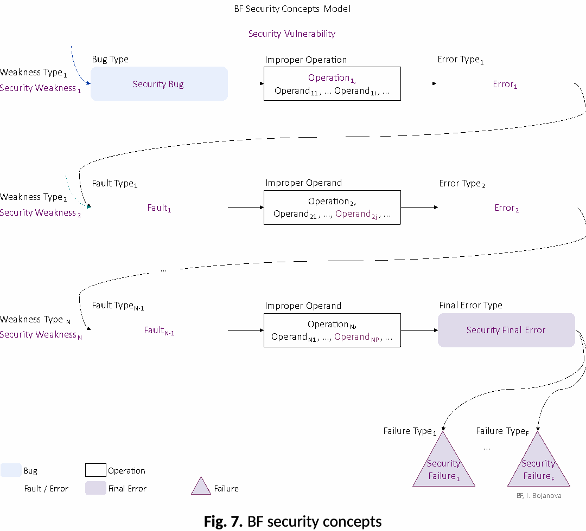
図7は、バグや障害、操作、エラー、弱点の連鎖、脆弱性、最終エラーおよび失敗の関係を示す概念モデルである。
5. BF Bugs Models
5. BFバグモデル
The BF security bugs and related faults landscape covers the operations (i.e., the BF op-eratons) in software, firmware, and hardware execution phases at appropriate levels of abstraction. A BF operation is the minimal input-process-output code that — because of a bug or fault — results in an error that propagates to another fault or is final (see Sec. 3.1).
BFセキュリティバグおよび関連するフォールトの全体像は、適切な抽象化レベルにおけるソフトウェア、ファームウェア、およびハードウェアの実行フェーズ内の操作（すなわち、BF操作）をカバーしている。BF操作とは、バグまたはフォールトが原因で別のフォールトへ伝播するエラーを引き起こすか、あるいは最終エラーとなる最小限の入力-処理-出力コードである（セクション3.1を参照）。
The BF bugs models define related execution phases with orthogonal sets of operations in which particular types of bugs or faults could occur. They also define the proper flow of operations within and between the phases, which helps identify causation between weaknesses, as well as missing operations (i.e., missing code bugs) backward from a failure.
BFバグモデルは、特定の種類のバグやフォールトが発生し得る直交する操作セットを持つ、関連する実行フェーズを定義する。また、フェーズ内およびフェーズ間の適切な操作の流れも定義しており、これにより弱点間の因果関係や、障害から逆算した欠落操作（すなわち、コード欠落バグ）の特定に役立つ。
Some execution phases may only be on an application level (e.g., input/output check), while others may cover deeper levels of abstraction (e.g., the programming language type system, the OS file system, or the CPU). In any case, if there is a security failure, there must have been an operation with a security bug or a hardware defect-induced fault that propagated through faults of other operations until a security final error that introduces an exploit vector is reached.
実行フェーズによってはアプリケーションレベル（例：入力／出力チェック）のみにとどまる場合もあるが、より深い抽象化レベル（例：プログラミング言語の型システム、OSのファイルシステム、またはCPU）をカバーする場合もある。いずれの場合も、セキュリティ障害が発生した場合、エクスプロイトベクターをもたらすセキュリティ最終エラーに達するまで他の操作のフォールトを通じて伝播した、セキュリティバグまたはハードウェアの欠陥によって引き起こされたフォールトを伴う操作が存在したはずである。
5.1. BF Input/Output Check ( INP) Bugs Model
5.1. BF入出力チェック（INP）バグモデル
The BF Input/Output Check ( INP) Bugs Model shows that input/output data check bugs could be introduced at the data validation (DVL) or data verification (DVR) execution phase (see Fig. 8). The phases determine the BF INP classes: Data Validation (DVL) and Data Verification (DVR) [1, 16].
BF入出力チェック（INP）バグモデルは、データ妥当性確認（DVL）またはデータ検証（DVR）の実行フェーズで入出力データチェックバグが混入する可能性があることを示している（図8参照）。これらのフェーズによって、BF INPクラスであるデータ妥当性確認（DVL）およびデータ検証（DVR）が決定される [1, 16]。
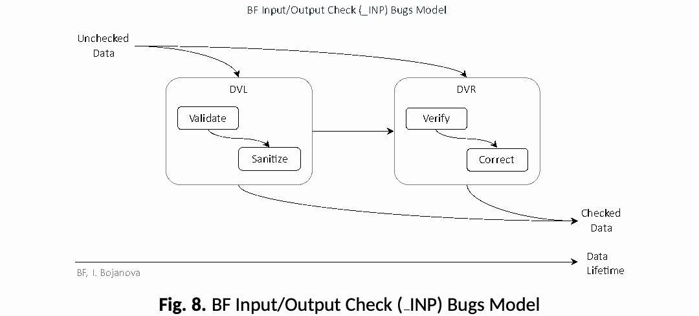
図8は、未検査データに対する検証・確認・サニタイズ・補正の操作と、検査済みデータに至る入出力チェックのモデルを示す。
Each input/output check-related bug or fault involves a Validate, Sanitize, Verify, or Correct operation. According to the flow of operations, input/output data must be validated and sanitized and/or verified and corrected.
入出力チェックに関する各バグまたはフォールトには、Validate、Sanitize、Verify、Correctのいずれかの操作が関わる。操作の流れに従い、入出力データは、妥当性確認して無害化し、かつ／または検証して訂正する必要がある。
5.2. BF Memory ( MEM) Bugs Model
5.2. BFメモリ（MEM）バグモデル
The BF Memory ( MEM) Bugs Model shows that memory-related bugs could be introduced at any phase in the life cycle of an object: memory addressing (MAD), memory allocation (MAL), memory use (MUS), or memory deallocation (MDL) (see Fig. 9). The phases de-termine the BF MEM classes: Memory Addressing (MAD), Memory Management (MMN) that combines the MAL and MDL phases, and Memory Use (MUS) [1, 17].
BFメモリ（MEM）バグモデルは、メモリ関連のバグがオブジェクトのライフサイクルの任意のフェーズ、すなわちメモリアドレッシング（MAD）、メモリ確保（MAL）、メモリ使用（MUS）、またはメモリ解放（MDL）で混入する可能性があることを示している（図9参照）。これらのフェーズによって、メモリアドレッシング（MAD）、MALフェーズとMDLフェーズを組み合わせたメモリ管理（MMN）、およびメモリ使用（MUS）というBF MEMクラスが決定される [1, 17]。
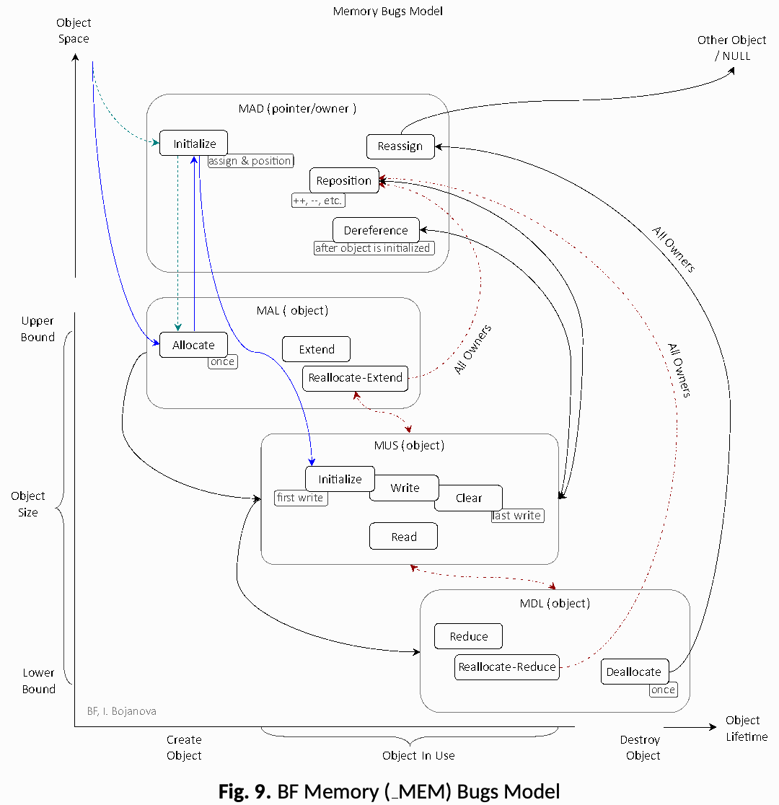
図9は、オブジェクトの生成から割当て、ポインター操作、読取り・書込み、解放までのメモリ操作と、メモリ弱点が生じる箇所を示す。
Each memory-related bug or fault involves an Initialize Pointer, Dereference, Reposition, Reassign, Allocate, Extend, Reallocate–Extend, Initialize Object, Read, Write, Clear, Reduce, Reallocate–Reduce, or Deallocate operation.
各メモリ関連のバグまたはフォールトは、ポインタ初期化（Initialize Pointer）、逆参照（Dereference）、再配置（Reposition）、再割り当て（Reassign）、確保（Allocate）、拡張（Extend）、再確保–拡張（Reallocate–Extend）、オブジェクト初期化（Initialize Object）、読み取り（Read）、書き込み（Write）、クリア（Clear）、縮小（Reduce）、再確保–縮小（Reallocate–Reduce）、または解放（Deallocate）操作を伴う。
The main memory-related operations flow is presented in Fig. 9 via blue and black solid arrows. The green dashed arrows show the flow for allocation at a specific address. The red dot-dashed arrows show the extra flow in case of reallocation. Following the blue arrows, the first operation is MAL Allocate an object. Following the green arrows, the first operation is MAD Initialize Pointer. The next operation following the blue arrows must be MAD Initialize Pointer for the allocated object to the address returned by the Allocate operation. In contrast, the next operation following the green arrows must be MAL Allocate an object at the address that the pointer holds.
メモリ関連の主要な操作フローを、図 9 に青と黒の実線矢印で示す。緑の破線矢印は、特定のアドレスでの割り当てのフローを示す。赤の一点鎖線矢印は、再割り当ての場合の追加のフローを示す。青の矢印をたどると、最初の操作は MAL Allocate（オブジェクトの割り当て）である。緑の矢印をたどると、最初の操作は MAD Initialize Pointer である。青の矢印をたどった場合の次の操作は、割り当てられたオブジェクトに対し、Allocate 操作が返したアドレスへの MAD Initialize Pointer でなければならない。これに対し、緑の矢印をたどった場合の次の操作は、ポインタが保持するアドレスへの MAL Allocate（オブジェクトの割り当て）でなければならない。
After an object is allocated and its pointer initialized, MUS Initialize Object (i.e., the first write) must follow. Then, it may be accessed via MAD Dereference and used via MUS Read or Write at any point before it is cleared and deallocated.
オブジェクトが割り当てられ、そのポインタが初期化された後には、MUS Initialize Object（すなわち最初の書き込み）が続かなければならない。その後、オブジェクトは、クリアおよび解放されるまでの任意の時点で、MAD Dereference によってアクセスされ、MUS Read または Write によって使用されうる。
The boundaries and size of an object set at allocation can be changed via MAL Extend, MAL Reallocate-Extend, MDL Reduce, or MDL Reallocate-Reduce. Operations that involve reallocation must be followed by MAD Reposition for all of the pointers that own the object. MDL Deallocate an object must be preceded by MUS Clear (i.e., the last write) and followed by MAD Reassign for all of its pointers to either NULL or another object.
割り当て時に設定されたオブジェクトの境界とサイズは、MAL Extend、MAL Reallocate-Extend、MDL Reduce、または MDL Reallocate-Reduce によって変更できる。再割り当てを伴う操作の後には、そのオブジェクトを所有するすべてのポインタについて MAD Reposition が続かなければならない。MDL Deallocate（オブジェクトの解放）の前には MUS Clear（すなわち最後の書き込み）がなければならず、その後には、そのすべてのポインタを NULL または別のオブジェクトに向ける MAD Reassign が続かなければならない。
5.3. BF Data Type ( DAT) Bugs Model
5.3. BFデータ型（DAT）バグモデル
BF Data Type (_DAT) Bugs Model shows that data type bugs could be introduced at the declaration (DCL), name resolution (NRS), data type conversion (TCV), or data type-related computation (TCM) execution phase (see Fig. 10). The phases determine the BF _DAT classes: Declaration (DCL), Name Resolution (NRS), Type Conversion (TCV), or Type Computation (TCM) [1, 18]. Each data type-related bug or fault involves a Declare, Define, Refer, Call, Cast, Coerce, Calculate, or Evaluate operation.
BF Data Type (_DAT) Bugs Model は、データ型のバグが、宣言（DCL）、名前解決（NRS）、データ型変換（TCV）、またはデータ型関連の計算（TCM）の実行フェーズで混入しうることを示している（図 10 を参照）。これらのフェーズによって、BF _DAT のクラスである Declaration (DCL)、Name Resolution (NRS)、Type Conversion (TCV)、Type Computation (TCM) が決まる [1, 18]。データ型に関連する各バグまたはフォールトには、Declare、Define、Refer、Call、Cast、Coerce、Calculate、または Evaluate のいずれかの操作が関与する。
According to the data type-related operations flow shown in Fig. 10, the first operations over an entity (i.e., object, function, data type, or namespace) are DCL Declare and DCL Define. Then, it can be referred to in code by its name via NRS Refer. Names that are referred to in remote scopes get resolved via namespaces. Resolved data types get bound to objects, functions, or generic data types according to their declarations (see the purple dot-dashed arrow flow). Resolved functions get bound to implementations and may be called via NRS Call.
図 10 に示すデータ型関連の操作フローによれば、エンティティ（すなわちオブジェクト、関数、データ型、または名前空間）に対する最初の操作は DCL Declare と DCL Define である。その後、エンティティはコード内で NRS Refer によりその名前で参照できる。離れたスコープで参照される名前は、名前空間を介して解決される。解決されたデータ型は、その宣言に従ってオブジェクト、関数、または汎用データ型に束縛される（紫の一点鎖線矢印のフローを参照）。解決された関数は実装に束縛され、NRS Call によって呼び出されうる。
A resolved and bound object may be explicitly converted to another data type via TCV Cast and used to call a member function via NRS Call or as an argument or return of a computation function. A passed-in argument is expected to be of the declared parameter data type, and the passed-out result is expected to be of the return data type. Otherwise, TCV Cast is expected before or at the end of the call (see the blue large-dashed arrow flow), or the value will get implicitly converted via TCV Coerce to the parameter or return data type, respectively (see the green dashed arrow flow).
解決され束縛されたオブジェクトは、TCV Cast によって別のデータ型に明示的に変換され、NRS Call によってメンバ関数を呼び出すために使用されるか、計算関数の引数または戻り値として使用されうる。渡される引数は宣言されたパラメータのデータ型であることが想定され、返される結果は戻り値のデータ型であることが想定される。そうでない場合は、呼び出しの前または終了時に TCV Cast が行われることが想定され（青の長破線矢印のフローを参照）、さもなければ値はそれぞれパラメータまたは戻り値のデータ型へ TCV Coerce によって暗黙的に変換される（緑の破線矢印のフローを参照）。
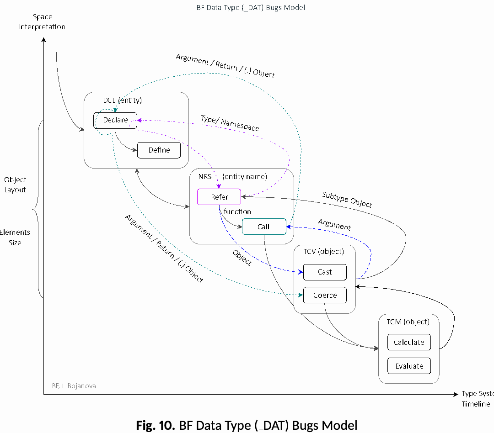
図10は、宣言、引数・戻り値、オブジェクトおよび型の解釈、型変換・計算に関わるデータ型操作のモデルを示す。
The green arrow flow is only about passed-in or passed-out objects that are coerced. It starts from NRS Call and never from DCL Declare. A comprehensive BF bugs model would combine and connect all BF bugs models via the proper flow between their operations. For example, DAT DCL Declare and INP DVR Verify may be followed by MEM MAD Reposition, DAT TCM Calculate, or DAT TCV Coerse. DAT TCV Coerse may be followed by MEM MMN Allocate, MEM MAD Reposition, DAT TCM Calculate, or MEM MMN Deallocate. DAT TCM Calculate may be followed by MEM MMN Reallocate-Reduce. For more bugs models and details, refer to the forthcoming SP 800-231B, Bugs Framework: Bugs Models.
緑色の矢印のフローは、型強制（coerce）された渡入（passed-in）または渡出（passed-out）オブジェクトのみに関するものである。これはNRS Callから開始され、DCL Declareから開始されることは決してない。包括的なBFバグモデルは、各操作間の適切なフローを介してすべてのBFバグモデルを結合および接続する。例えば、DAT DCL DeclareおよびINP DVR Verifyの後には、MEM MAD Reposition、DAT TCM Calculate、またはDAT TCV Coerseが続く場合がある。DAT TCV Coerseの後には、MEM MMN Allocate、MEM MAD Reposition、DAT TCM Calculate、またはMEM MMN Deallocateが続く場合がある。DAT TCM Calculateの後には、MEM MMN Reallocate-Reduceが続く場合がある。より多くのバグモデルおよび詳細については、近日刊行予定のSP 800-231B「Bugs Framework: Bugs Models」を参照のこと。
6. BF Taxonomy
6. BF分類法（Taxonomy）
The BF taxonomy comprises weakness and failure categories. The BF Weakness category comprises BF weakness class types, such as:
BF分類法は、弱点カテゴリと障害カテゴリで構成される。BF弱点カテゴリには、例えば次のような弱点クラスタイプが含まれる。
•BF Input/Output Check( INP) class type — Weaknesses that lead to input/output data check-related errors or introduce injection exploit vectors
•BF入出力チェック（ INP）クラスタイプ — 入出力データのチェックに関連するエラーにつながる、またはインジェクションのエクスプロイトベクトルをもたらす弱点
•BF Memory ( MEM) class type — Weaknesses that lead to memory-related errors or introduce memory corruption/disclosure exploit vectors
•BFメモリ（MEM）クラスタイプ — メモリ関連のエラーにつながる、またはメモリ破損/開示のエクスプロイトベクターをもたらす弱点
•BF Data Type ( DAT) class type — Weaknesses that lead to data type-related errors or introduce type compute exploit vectors
•BFデータ型（ DAT）クラス型 — データ型に関するエラーにつながる、または型計算のエクスプロイトベクトルをもたらす弱点
The BF Failure category comprises the BF failure class type:
BF Failureカテゴリは、以下のBF障害クラスタイプで構成される。
•BF Failure ( FLR) class type — Failures that lead to the loss of a security property due to the exploit of a vulnerability
•BF障害（ FLR）クラスタイプ — 脆弱性の悪用によるセキュリティ特性の喪失につながる障害
6.1. BF Weakness Classes
6.1. BF弱点クラス
The BF weakness taxonomy structure is based on orthogonal by operations phases of software, firmware, and hardware execution. A BF weakness class defines sets of possible bugs and faults as causes for the operations of a specific phase over their operands to result in errors and final errors as consequences.
BF弱点分類体系の構造は、ソフトウェア、ファームウェア、ハードウェアの実行フェーズにおける、操作に基づく直交した分類を土台としている。BF弱点クラスは、特定フェーズの操作とそのオペランドに対する原因となり得るバグおよびフォールトの集合を定義し、その結果として生じるエラーおよび最終エラーを定める。
As an error propagates to a fault (see Sec. 4), the set of errors is the same as the set of faults across classes. However, a specific propagation may be via values on different levels of abstraction (see Sec. 3.2). Similarly, the set of final errors across classes is the same as the set of exploit vectors toward failures. A BF weakness class also defines operation and operand attributes and code sites.
エラーがフォールトに伝播するため（Sec. 4参照）、クラス間ではエラーの集合とフォールトの集合が同じになる。ただし、特定の伝播では、抽象度の異なる値を介する場合がある（Sec. 3.2参照）。同様に、クラス間では最終エラーの集合と、障害につながるエクスプロイトベクトルの集合が同じである。BF弱点クラスは、操作属性、オペランド属性、およびコード上の位置も定義する。
A BF weakness class type encompasses strictly defined weakness classes of closely related execution phases. For example, the BF INP class type comprises the Data Validation (DVL) and Data Verification (DVR) classes. The BF MEM class type comprises the Memory Addressing (MAD), Memory Management (MMN), and Memory Use (MUS) classes [17]. The BF DAT class type comprises the Declaration (DCL), Name Resolution (NRS), Type Conversion (TCV), and Type Computation (TCM) classes [18]. For all current BF class types, refer to the BF Taxonomy at at [1].
BF弱点クラスタイプは、密接に関連する実行フェーズの厳密に定義された弱点クラスを包含する。例えば、BF INPクラスタイプはデータ検証（Data Validation: DVL）およびデータ確認（Data Verification: DVR）クラスで構成される。BF MEMクラスタイプはメモリアドレス指定（Memory Addressing: MAD）、メモリ管理（Memory Management: MMN）、およびメモリ使用（Memory Use: MUS）クラスで構成される [17]。BF DATクラスタイプは宣言（Declaration: DCL）、名前解決（Name Resolution: NRS）、型変換（Type Conversion: TCV）、および型計算（Type Computation: TCM）クラスで構成される [18]。現在のすべてのBFクラスタイプについては、[1] にあるBF Taxonomyを参照されたい。
The definition of the BF Data Validation (DVL) class (see Fig. 11) is “Data is validated (i.e., syntax check) or sanitized (i.e., escape, filter, or repair) improperly.” It organizes security bugs by the Validate and Sanitize operations and faults by their Data operand as causes [16]. Possible causes are the Missing Code bug and Corrupted Policy Data fault. Possible consequences are the Invalid Data error and Query Injection and Command Injection final injection errors, which relate to input/output check safety (see 9.1).
BFデータ検証（DVL）クラスの定義（図11参照）は、「データの検証（すなわち構文チェック）または無害化（すなわちエスケープ、フィルタリング、修復）が不適切である」である。このクラスでは、原因としてValidateとSanitizeの操作にバグを分類し、Dataオペランドにフォールトを分類する[16]。考えられる原因は、コード欠落のバグとポリシーデータ破損のフォールトである。考えられる結果は、不正データのエラー、および入出力チェックの安全性（9.1参照）に関係するクエリインジェクションとコマンドインジェクションの最終エラーである。
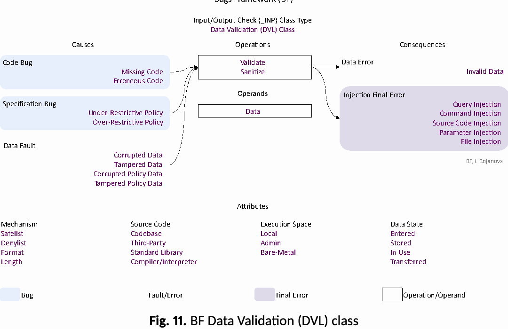
図11は、データ検証（DVL）クラスの操作、入力条件、および不適切な値が弱点につながる関係を示す。
The definition of the BF Memory Use (MUS) class (see Fig. 12) is “An object is initial-ized, read, written, or cleared improperly.” It organizes security bugs by the Initialize Ob-ject, Read, Write, and Clear operations and faults by their Data, Type, Address, and Size operands as causes [17]. Possible causes are the Wrong Size and Cast Pointer faults. Pos-sible consequences are the Uninitialized Object error and Buffer Overflow and Use After Deallocate (e.g., use after free or use after return) memory corruption or disclosure final errors, which relate to memory safety (see 9.2).
BFメモリ使用（MUS）クラス（図12参照）の定義は、「オブジェクトが不適切に初期化、読み取り、書き込み、またはクリアされる」である。これはセキュリティバグをオブジェクト初期化（Initialize Object）、読み取り（Read）、書き込み（Write）、クリア（Clear）操作によって体系化し、原因としてのフォールトをそれらのデータ（Data）、型（Type）、アドレス（Address）、サイズ（Size）オペランドによって体系化している[17]。考えられる原因としては、誤ったサイズ（Wrong Size）やポインタキャスト（Cast Pointer）のフォールトがある。考えられる結果としては、未初期化オブジェクト（Uninitialized Object）エラー、ならびにメモリ安全性に関連するバッファオーバーフロー（Buffer Overflow）やデアロケーション後使用（Use After Deallocate、例：解放後使用（use after free）やリターン後使用（use after return））のメモリ破壊または情報漏えいの最終エラーがある（9.2参照）。
The definition of the BF Type Conversion (TCV) class (see Fig. 13) is “Data is converted or coerced into other types improperly.” It organizes security bugs by the Cast and Coerce operations and faults by their Name, Data, and Type operands as causes [18]. Possible causes are the Over Range and Wrong Type faults. Possible consequences are the Rounded Value and Downcast Pointer errors, which relate to data type safety (see 9.3). The BF strictly defines the type taxons (e.g., see the terms in black in Figs. 11, 12, and 13) for causes as bugs or faults, for consequences as errors or final errors, and for operation and operand attributes. For example, the Specification Bug, Data Fault, Injection and Memory Corruption/Disclosure Final Errors (see Figs. 11 and 12) taxon types are defined in Table 2. The BF also strictly defines the value taxons (e.g., see the terms in purple in Figs. 11, 12, and 13) for class, operations, causes (as bugs or faults), consequences (as errors or final er-rors), and operation and operand attributes. For example, the Under-Restrictve Policy bug,
BF型変換（TCV）クラス（図13参照）の定義は、「データが不適切に他の型に変換または強制変換される」である。これはセキュリティバグをキャスト（Cast）および強制変換（Coerce）操作によって体系化し、原因としてのフォールトをそれらの名前（Name）、データ（Data）、型（Type）オペランドによって体系化している[18]。考えられる原因は、範囲超過（Over Range）および型誤り（Wrong Type）のフォールトである。考えられる結果は、丸め値（Rounded Value）およびダウンキャストポインタ（Downcast Pointer）エラーであり、これらはデータ型安全性に関連する（9.3参照）。BFは、原因としてのバグやフォールト、結果としてのエラーや最終エラー、ならびに操作およびオペランド属性に関する型分類群（type taxon）（例：図11、12、13の黒字の用語を参照）を厳密に定義している。例えば、仕様バグ（Specification Bug）、データフォールト（Data Fault）、インジェクション（Injection）、およびメモリ破壊／情報漏えい最終エラー（Memory Corruption/Disclosure Final Errors）（図11および12参照）の分類群タイプは表2で定義されている。BFはまた、クラス、操作、原因（バグまたはフォールトとして）、結果（エラーまたは最終エラーとして）、ならびに操作およびオペランド属性に関する値分類群（例：図11、12、13の紫色の用語を参照）も厳密に定義している。例えば、制約が緩すぎるポリシー（Under-Restrictive Policy）バグ、
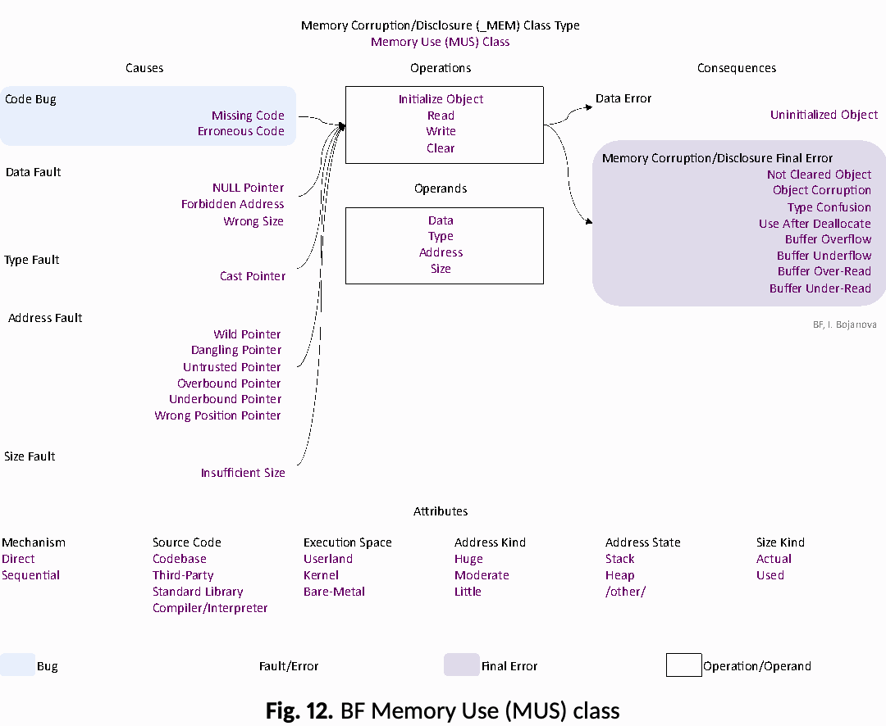
図12は、メモリ使用（MUS）クラスにおけるオブジェクトの利用、境界、読取り・書込みと弱点の関係を示す。
Wrong Size fault, Sanitize and Write operations, and Query Injection and Buffer Overflow final errors (see Figs. 11 and 12) taxon values are defined in Table 3.
誤ったサイズ（Wrong Size）フォールト、無害化（Sanitize）および書き込み（Write）操作、ならびにクエリインジェクション（Query Injection）およびバッファオーバーフロー（Buffer Overflow）最終エラー（図11および12を参照）の値分類群は、表3で定義されている。
The operation attribute types are defined in Table 4. Their values per BF class may be dif-ferent for the same operation attribute type (e.g., the Mechanism for MUS Write is Direct or Sequential, while for TCV Coerce, it is Pass in or Pass out). The possible operand at-tribute types are defined in Table 5. Their values per BF class may be different for the same operand attribute type.
操作属性のタイプは表4で定義されている。同一の操作属性タイプであっても、BFクラスごとのそれらの値は異なる場合がある（例えば、MUS WriteのMechanismはDirectまたはSequentialであるのに対し、TCV CoerceではPass inまたはPass outである）。考えられるオペランド属性のタイプは表5で定義されている。同一のオペランド属性タイプであっても、BFクラスごとのそれらの値は異なる場合がある。
Each BF class taxonomy defines a matrix of semantic rules for causation within a weakness, as some combinations of its cause, operation, and consequence value taxons may not be meaningful. They are expressed as \(\langle \mathit{bug}, \mathit{operation} \rangle \rightarrow \mathit{error}\), \(\langle \mathit{fault}, \mathit{operation} \rangle \rightarrow \mathit{error}\), \(\langle \mathit{bug}, \mathit{operation} \rangle \rightarrow \mathit{final\ error}\), and \(\langle \mathit{fault}, \mathit{operation} \rangle \rightarrow \mathit{final\ error}\) triples. For example, \(\langle \mathit{Wrong\ Size}, \mathit{Write} \rangle \rightarrow \mathit{Buffer\ Overflow}\) is a valid triple, while \(\langle \mathit{Wrong\ Size}, \mathit{Write} \rangle \rightarrow \mathit{Buffer\ Over\text{-}Read}\) is not, as the operation is Write but the final error is about reading.
各BFクラス分類法は、弱点内の因果関係に関する意味規則のマトリクスを定義している。その原因、操作、および結果の値分類群の組み合わせには、意味をなさないものがあり得るためである。それらは、\(\langle \mathit{bug}, \mathit{operation} \rangle \rightarrow \mathit{error}\)、\(\langle \mathit{fault}, \mathit{operation} \rangle \rightarrow \mathit{error}\)、\(\langle \mathit{bug}, \mathit{operation} \rangle \rightarrow \mathit{final\ error}\)、および\(\langle \mathit{fault}, \mathit{operation} \rangle \rightarrow \mathit{final\ error}\)という三つ組（トリプル）として表現される。例えば、\(\langle \mathit{Wrong\ Size}, \mathit{Write} \rangle \rightarrow \mathit{Buffer\ Overflow}\)は有効なトリプルであるが、\(\langle \mathit{Wrong\ Size}, \mathit{Write} \rangle \rightarrow \mathit{Buffer\ Over\text{-}Read}\)は有効ではない。操作がWriteであるのに、最終エラーは読み取りに関するものだからである。
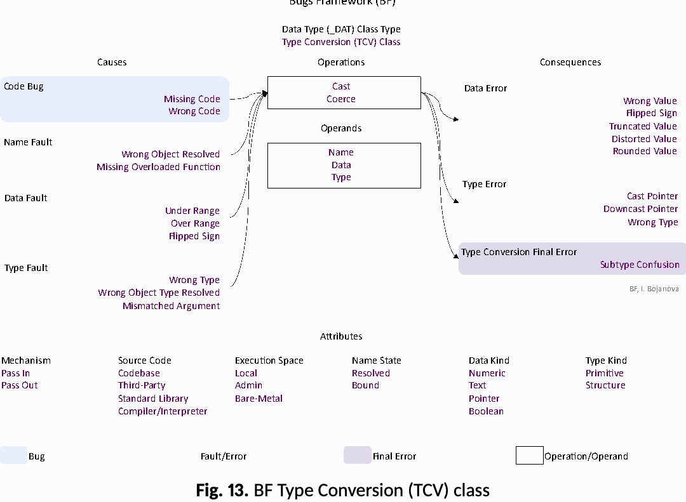
図13は、型変換（TCV）クラスにおける入力値の変換、制約、および不適切な型変換が弱点につながる関係を示す。
Each BF class taxonomy also defines a matrix of semantic rules for propagation between weaknesses, as error to fault match is always by type but may be on different levels of abstraction by value (for details, see the forthcoming SPs 800-231Cx and [1]).
各 BF クラスの分類体系は、弱点間の伝播に関する意味規則の行列も定義する。エラーとフォールトの照合は常に型によって行われるが、値については異なる抽象度で行われる場合があるためである（詳細は、今後公開予定の SP 800-231Cx および [1] を参照）。
Formally, the specification of a security weakness is an instance of a BF weakness class with one cause, one operation, one consequence, and operation and operand attribute values from the sets with value taxons of that class. The \(\mathit{operation}\) binds the causation within a weakness as a \(\langle \mathit{cause}, \mathit{operation} \rangle \rightarrow \mathit{consequence}\) relation that must adhere to the within-weakness causation semantic rules for that class.
形式的には、セキュリティ弱点の仕様とは、1つの原因、1つの操作、1つの結果、およびそのクラスの値分類群（taxon）を持つ集合からの操作・オペランド属性値を備えたBF弱点クラスのインスタンスである。操作（\(\mathit{operation}\)）は、弱点内の因果関係を\(\langle \mathit{cause}, \mathit{operation} \rangle \rightarrow \mathit{consequence}\)という関係として結び付け、この関係はそのクラスの弱点内因果関係の意味規則に従わなければならない。
For example, the two most severe weaknesses — missing validation of input data leads to a SQL query injection and writing data via a pointer beyond the upper bound of an array leads to a buffer overflow [27] — are specified with BF as follows: \(\langle \mathit{Missing\ Code}, \mathit{Validate} \rangle \rightarrow \mathit{Query\ Injection}\) and \(\langle \mathit{Overbound\ Pointer}, \mathit{Write} \rangle \rightarrow \mathit{Buffer\ Overflow}\). The BF class taxonomies with built-in taxon definitions are available in machine-readable formats (e.g., see the BF in XML format in Fig. 14 and query it via the BF API at [1]).
例えば、最も深刻な2つの弱点、すなわち入力データの検証欠落がSQLクエリインジェクションにつながるケースと、配列の上限を超えたポインタ経由のデータ書き込みがバッファオーバーフローにつながるケース[27]は、BFによって次のように規定される：\(\langle \mathit{Missing\ Code}, \mathit{Validate} \rangle \rightarrow \mathit{Query\ Injection}\)、および\(\langle \mathit{Overbound\ Pointer}, \mathit{Write} \rangle \rightarrow \mathit{Buffer\ Overflow}\)。組み込みの分類群定義を備えたBFクラス分類法は、機械可読形式で利用可能である（例えば、図14のXML形式のBFを参照し、[1]のBF APIを介してクエリを実行できる）。
Formally, the specification of a security weakness is an instance of a BF weakness class with one cause, one operation, one consequence, and operation and operand attribute values from the sets with value taxons of that class. The operation binds the causation within a weakness as a ⟨cause, operation⟩→consequence relation that must adhere to the within-weakness causation semantic rules for that class.
形式的には、セキュリティ上の弱点の仕様は BF 弱点クラスのインスタンスであり、一つの原因、一つの操作、一つの結果、およびそのクラスの値タクソンの集合から取られた操作属性値とオペランド属性値を持つ。操作は、弱点内の因果関係を ⟨原因, 操作⟩→結果 という関係として結び付け、この関係はそのクラスの弱点内因果関係に関する意味規則に従わなければならない。
For example, the two most severe weaknesses — missing validation of input data leads to a SQL query injection and writing data via a pointer beyond the upper bound of an array leads to a buffer overflow [27] — are specified with BF as follows: ⟨Missing Code, Validate⟩→Query Injection and ⟨Overbound Pointer, Write⟩→Buffer Overflow.
例えば、最も深刻な二つの弱点、すなわち入力データの検証の欠落による SQL クエリインジェクションと、配列の上限を超えたポインタ経由のデータ書き込みによるバッファオーバーフロー [27] は、BF を用いて次のように規定される：⟨Missing Code, Validate⟩→Query Injection および ⟨Overbound Pointer, Write⟩→Buffer Overflow。
The BF class taxonomies with built-in taxon definitions are available in machine-readable formats (e.g., see the BF in XML format in Fig. 14 and query it via the BF API at [1]).
タクソンの定義を組み込んだ BF クラスの分類体系は、機械可読な形式で利用できる（例えば、図 14 の XML 形式の BF を参照し、[1] の BF API を介してクエリを実行できる）。
The type and value taxon definitions are visualized in the graphical representation of the BF class taxonomies (e.g., see the BF MUS class at [1]) and BFCVE specifications (e.g., the BF CVE-2014-0160 specification at [1]), and as tooltips of the BF tool (see Sec. 10.3).
型タクソンと値タクソンの定義は、BF クラスの分類体系のグラフィカル表現（例えば、[1] の BF MUS クラスを参照）や BFCVE の仕様（例えば、[1] の BF CVE-2014-0160 の仕様）で可視化され、また BF ツールのツールチップとしても表示される（10.3 節を参照）。
| Name | Definition |
|---|---|
| Specification Bug | A defect in the metadata or algorithm of an operation (i.e., proper operands over an improper operation). It is the root cause of a security vulnerability. |
| Data Fault | The data of an object has harmed semantics or an inconsistent or wrong value. |
| Injection | An exploitable or undefined system behavior caused by validation or sanitization bugs. |
| Memory Corruption/Disclosure | An exploitable or undefined system behavior caused by memory addressing, allocation, use, or deallocation bugs. |
| 名称 | 定義 |
|---|---|
| 仕様バグ（Specification Bug） | 操作のメタデータまたはアルゴリズムの欠陥（すなわち、適切なオペランドに対する不適切な操作）。セキュリティ脆弱性の根本原因となる。 |
| データフォールト（Data Fault） | オブジェクトのデータの意味が損なわれている、または値に一貫性がないか誤っている。 |
| インジェクション（Injection） | 検証または無害化のバグによって生じる、悪用可能または未定義のシステム動作。 |
| メモリ破壊／情報漏えい（Memory Corruption/Disclosure） | メモリアドレス指定、割り当て、使用、または解放のバグによって生じる、悪用可能または未定義のシステム動作。 |
| Name | Definition |
|---|---|
| Under-Restrictive Policy | Accepts bad data. For example, permissive safelist or regular expression, or incomplete deny list. |
| Wrong Size | The value used as size or length (i.e., the number of elements) does not match the object’s memory size or length. |
| Sanitize | Modify data (e.g., neutralize/escape, filter/remove, repair/add symbols) to make it valid (well-formed). |
| Write | Change the data value of an object in memory to another meaningful value. |
| Query Injection | Maliciously inserted condition parts (e.g., or 1 == 1) or entire commands (e.g., drop table) into an input used to construct a query (e.g., SQL or NoSQL Injection, XPath Injection, XQuery Injection, or LDAP Injection). |
| Buffer Overflow | Write data above the upper bound of an object (i.e., buffer overwrite). |
| 名称 | 定義 |
|---|---|
| 制約が緩すぎるポリシー（Under-Restrictive Policy） | 不正なデータを受け入れる。例えば、許容範囲が広すぎる許可リストや正規表現、不完全な拒否リストがある。 |
| 誤ったサイズ（Wrong Size） | サイズまたは長さ（要素数）として使われる値が、オブジェクトのメモリ上のサイズまたは長さと一致しない。 |
| 無害化（Sanitize） | データを有効な（整形式の）状態にするために変更する（例：無害化／エスケープ、フィルタリング／削除、記号の修復／追加）。 |
| 書き込み（Write） | メモリ内のオブジェクトのデータ値を、別の意味のある値に変更する。 |
| クエリインジェクション（Query Injection） | クエリ構築に使う入力へ、悪意ある条件式（例：or 1 == 1）やコマンド全体（例：drop table）を挿入すること。対象のクエリにはSQL、NoSQL、XPath、XQuery、LDAPなどがある。 |
| バッファオーバーフロー（Buffer Overflow） | オブジェクトの上限を超えてデータを書き込むこと（すなわちバッファの上書き）。 |
| Name | Definition |
|---|---|
| Mechanism | Shows how the operation with a bug or faulty operand is performed. |
| Source Code | Shows where the code of the operation with a bug or faulty operand resides. |
| Execution Space | Shows where the operation with a bug or faulty operand is executed and the privilege level at which it runs. |
| 名称 | 定義 |
|---|---|
| メカニズム（Mechanism） | バグのある操作、またはフォールトのあるオペランドを伴う操作が、どのように実行されるかを示す。 |
| ソースコード（Source Code） | バグのある操作、またはフォールトのあるオペランドを伴う操作のコードがどこにあるかを示す。 |
| 実行空間（Execution Space） | バグのある操作、またはフォールトのあるオペランドを伴う操作がどこで実行され、どの特権レベルで動作するかを示す。 |
| Name | Definition |
|---|---|
| Name Kind | Shows what the entity with this name is. |
| Name State | Shows what the stage of the entity name is. |
| Data Kind | Shows what the type or category of data is. |
| Data State | Shows where the data comes from. |
| Type Kind | Shows what the data type composition is. |
| Address Kind | Shows how much memory is accessed (i.e., the span) outside of a bound of an object. |
| Address State | Shows where the address is (i.e., its location) in the memory layout. |
| Size Kind | Shows what is used as the size or length (i.e., the number of elements) of an object. |
| 名称 | 定義 |
|---|---|
| 名前の種類（Name Kind） | その名前がどのエンティティを示すかを表す。 |
| 名前の状態（Name State） | エンティティ名がどの段階にあるかを表す。 |
| データの種類（Data Kind） | データの型または分類を表す。 |
| データの状態（Data State） | データの出所を表す。 |
| 型の種類（Type Kind） | データ型の構成を表す。 |
| アドレスの種類（Address Kind） | オブジェクトの境界外でアクセスされるメモリ量（スパン）を表す。 |
| アドレスの状態（Address State） | メモリレイアウト内におけるアドレスの位置を表す。 |
| サイズの種類（Size Kind） | オブジェクトのサイズまたは長さ（要素数）として使われるものを表す。 |
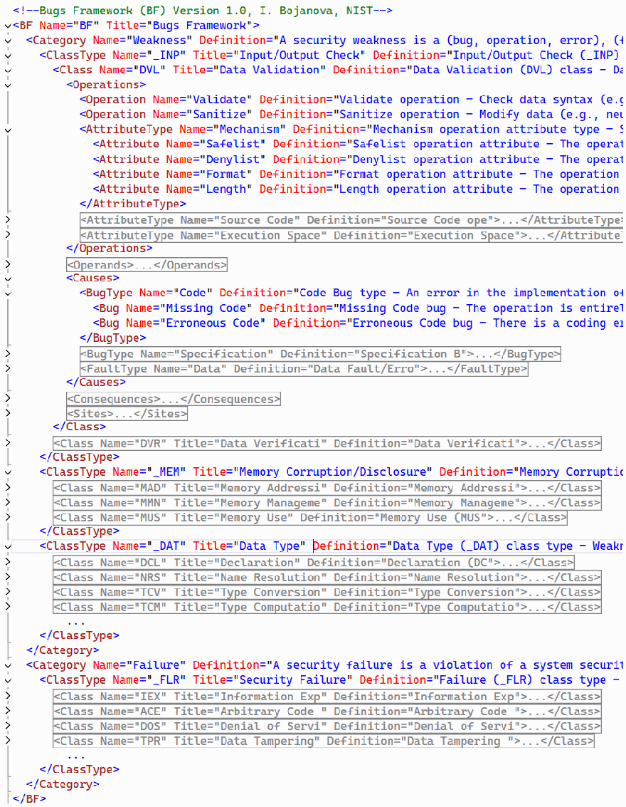
BFの弱点分類体系をXMLの入れ子構造で示した図
Fig. 14. BF taxonomy in XML
図 14. XMLにおけるBF分類法
6.2. BF Failure Class
6.2. BF障害クラス
A BF failure class defines sets of possible exploit vectors used for the exploits of a specific vulnerability to result in the loss of security properties. The exploit vectors propagate from the final errors of BF weakness classes.
BF障害クラスは、セキュリティ特性の喪失をもたらす特定の脆弱性のエクスプロイトに使用される可能性のあるエクスプロイトベクトルの集合を定義する。エクスプロイトベクトルは、BF弱点クラスの最終的なエラーから伝播する。
The BF Failure ( FLR) class type encompasses strictly defined failure classes, such as:
BF Failure（FLR）クラスタイプには、厳密に定義された以下のような障害クラスが含まれる。
•Information Exposure (IEX) — Inadvertent disclosure of information that leads to confidentiality loss.
•情報漏えい（Information Exposure: IEX）— 機密性の喪失につながる、意図しない情報の開示。
•Arbitrary Code Execution (ACE) — Execution of unauthorized commands or code execution that could lead to everything being lost.
•任意コード実行（Arbitrary Code Execution: ACE）— すべてが失われる事態につながる可能性がある、不正なコマンドの実行またはコード実行。
Remote code execution (RCE) is a sub-case of ACE on a target system or device from a remote location, typically over a network.
リモートコード実行（RCE）は、通常ネットワークを介して遠隔地から対象のシステムまたはデバイス上でACEを行うサブケースである。
•Denial of Service (DOS) — Disruption of access to or use of information or information systems that leads to availability loss.
•サービス運用妨害（Denial of Service: DOS）— 可用性の喪失につながる、情報または情報システムへのアクセスや利用の妨害。
•Data Tampering (TPR) — Unauthorized modification or destruction of information that leads to integrity loss.
•データ改ざん（Data Tampering: TPR）— 完全性の喪失につながる、情報の不正な変更または破壊。
An IEX, ACE, or TPR failure may result in a fault that starts a new chained vulnerability.
IEX、ACE、またはTPRの障害は、新たな連鎖的脆弱性を引き起こすフォールトをもたらす可能性がある。
6.3. BF Methodology
6.3. BFの方法論
The methodology for developing BF bugs models and weakness classes involves the following 12 steps (also see Fig. 15):
BFバグモデルおよび弱点クラスを策定する方法論は、以下の12段階からなる（図15も参照）。
1.Phases: Analyse common weakness types (including CWEs) and publicly disclosed vulnerabilities (including CVEs) and identify related software, firmware, or hardware execution phases in which specific types of bugs could be introduced and faults prop-agated. Each execution phase would be the basis for defining a new BF weakness class. The BF classes of related execution phases would define a new BF class type.
1.フェーズ：一般的な弱点タイプ（CWEを含む）および公開済みの脆弱性（CVEを含む）を分析し、特定の種類のバグが入り込み、フォールトが伝播し得るソフトウェア、ファームウェア、またはハードウェアの実行フェーズを特定する。各実行フェーズを新しいBF弱点クラスの定義の基礎とし、関連する実行フェーズのBFクラスから新しいBFクラスタイプを定義する。
For example, the MAD and MUS classes (see Fig. 12) correspond to the related memory addressing and memory use execution phases. They are also of the BF _MEM class type [1, 17].
例えば、MADおよびMUSクラス（図12参照）は、関連するメモリアドレス指定およびメモリ使用の実行フェーズに対応している。これらはBF _MEMクラスタイプにも属している[1, 17]。
2. Operations and Operands: Identify the operations and their input operands for each execution phase so that all BF classes remain orthogonal by operation. They would define the possible values of operations for the \(\langle \mathit{cause}, \mathit{operation} \rangle \rightarrow \mathit{consequence}\) weakness triples for each of the new BF classes.
2. 操作とオペランド：すべてのBFクラスが操作に関して直交性を保つように、各実行フェーズにおける操作とその入力オペランドを特定する。これらは、各新規BFクラスの\(\langle \mathit{cause}, \mathit{operation} \rangle \rightarrow \mathit{consequence}\)弱点トリプルに対するoperations（操作）の可能な値を定義することになる。
For example, the DVL class has two operations (see Fig. 11), MUS has four operations (see Fig. 12), TCV has two operations (see Fig. 13), and their sets of operations do not overlap.
例えば、DVLクラスには2つの操作（図11参照）、MUSには4つの操作（図12参照）、TCVには2つの操作（図13参照）があり、それぞれの操作集合は互いに重複しない。
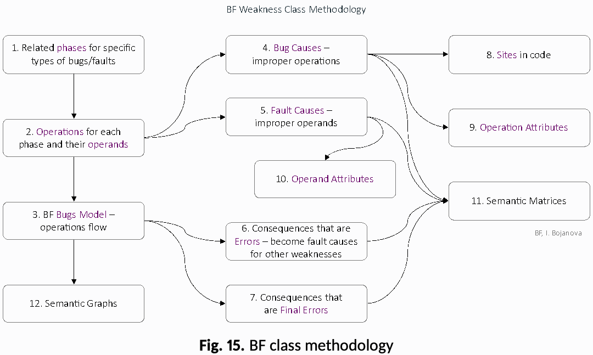
図15は、BFクラスの定義手順を示す。対象フェーズ、操作、バグ／障害の原因、属性、意味行列・グラフ、および最終エラーを整理する。
3.Bugs Model: Define the BF bugs model reflecting the identified phases, operations, and the proper flow between the operations. It would be the basis for the definition of a semantic graph of meaningful operation flow.
3.バグモデル：特定したフェーズ、操作、および操作間の適切な流れを反映するBFバグモデルを定義する。これは、意味のある操作フローの意味グラフを定義する基礎となる。
For example, the BF Memory Bugs Model covers the MAD, MAL, MUS, and MDL phases and the flow between their operations (see Fig. 9).
例えば、BFメモリバグモデルはMAD、MAL、MUS、MDLの各フェーズと、それらの操作間の流れを扱う（図9参照）。
4. Bug Causes: Identify the possible code and specification defects for the operations of each phase. They would define the bug values of the \(\langle \mathit{bug}, \mathit{operation} \rangle \rightarrow \mathit{error}\) or \(\langle \mathit{bug}, \mathit{operation} \rangle \rightarrow \mathit{final\ error}\) weakness triples (see Fig. 3) for each of the new BF classes.
4. バグ原因（Bug Causes）：各フェーズの操作に対して考えられるコードおよび仕様の欠陥を特定する。これらは、新しい各BFクラスに対する\(\langle \mathit{bug}, \mathit{operation} \rangle \rightarrow \mathit{error}\)または\(\langle \mathit{bug}, \mathit{operation} \rangle \rightarrow \mathit{final\ error}\)の弱点トリプル（図3を参照）のbug（バグ）値を定義することになる。
For example, the DVL class has two values for each of the Code Bug and Code Speci-ficaton bug types — Missing Code and Erroneous Code, and Under-Restrictve Policy and Over-Restrictve Policy, respectively (see Fig. 11).
例えば、DVLクラスには、コードバグ（Code Bug）およびコード仕様（Code Specification）のバグタイプそれぞれに対して2つの値、すなわちそれぞれMissing Code（コードの欠落）とErroneous Code（誤ったコード）、およびUnder-Restrictive Policy（制約が緩すぎるポリシー）とOver-Restrictive Policy（制約が厳しすぎるポリシー）が存在する（図11を参照）。
5. Fault Causes: Identify which of the Name, Data, Type, Address, and Size input operands apply to the operations of each phase. They would define the possible fault and error types. Identify the possible operand errors, which would define the fault values of the \(\langle \mathit{fault}, \mathit{operation} \rangle \rightarrow \mathit{error}\) or \(\langle \mathit{fault}, \mathit{operation} \rangle \rightarrow \mathit{final\ error}\) weakness triples (see Fig. 3) for each of the new BF classes.
5. フォールト原因（Fault Causes）: 各フェーズの操作にName、Data、Type、Address、およびSizeの入力オペランドのうちどれが適用されるかを特定する。これらは考えられるfaultおよびerror typesを定義することになる。考えられるオペランドエラーを特定する。これによって、新しい各BFクラスに対する弱点トリプル（図3を参照）のfault値が定義される。弱点トリプルは\(\langle \mathit{fault}, \mathit{operation} \rangle \rightarrow \mathit{error}\)または\(\langle \mathit{fault}, \mathit{operation} \rangle \rightarrow \mathit{final\ error}\)である。
For example, the MUS class has Data Fault, Type Fault, Address Fault, Size Fault, and Data Error types — the first four as causes, the last one as a consequence. It also has 11 fault values (see Fig. 12).
例えば、MUSクラスには、Data Fault、Type Fault、Address Fault、Size Fault、およびData Errorのタイプがあり、最初の4つが原因、最後の1つが結果となる。また、11個のフォールト値を持つ（図12を参照）。
•6. Error Consequences: Identify the possible output result errors from the operations that propagate as faults of other weaknesses (i.e., improper input operands for other operations). These would define the error values of the weakness triples (see Fig. 3).
•6. エラー結果：操作の出力結果のエラーのうち、他の弱点のフォールト（すなわち他の操作に対する不適切な入力オペランド）として伝播しうるものを特定する。これらが弱点の三つ組のエラー値を定義する（図 3 を参照）。
For example, there is one error value for DVL — Invalid Data (see Fig. 11), one for MUS — Uninialized Object (See Fig. 12), and eight for TCV — five of Data Error and three of Type Error type (see Fig. 13).
例えば、DVLにはエラー値が1つ（Invalid Data、図11参照）、MUSにも1つ（Uninialized Object、図12参照）ある。TCVには8つあり、そのうち5つはData Error型、3つはType Error型である（図13参照）。
•7. Final Error Consequences: Identify the possible output result errors from the operations that do not propagate to faults of other weaknesses and instead propagate to exploit vectors toward failures. They would define the final error values of the weakness triples (see Fig. 3).
•7. 最終エラー結果：操作の出力結果のエラーのうち、他の弱点のフォールトには伝播せず、代わりに障害に向かうエクスプロイトベクトルへと伝播しうるものを特定する。これらが弱点の三つ組の最終エラー値を定義する（図 3 を参照）。
For example, MUS has one final error type — Memory Corruption/Disclosure — with eight final error values (see Fig. 12).
例えば、MUS には一つの最終エラー型 Memory Corruption/Disclosure があり、その最終エラー値は八つである（図 12 を参照）。
•8. Sites: Identify syntactic places in code where such bugs or faults can occur. This step is mainly applicable to low-level bugs and faults.
•8. サイト：そうしたバグやフォールトが発生しうるコード内の構文上の箇所を特定する。この手順は主に低レベルのバグとフォールトに適用される。
•9. Operation Attributes: Identify specific descriptive values for the Execution Space, Mechanism, and Source Code operation attribute types for each of the new BF classes.
•9. 操作属性：新しい各 BF クラスについて、Execution Space、Mechanism、Source Code の各操作属性型に対する具体的な記述値を特定する。
For example, DVL has the Safelist, Denylist, Format, and Length values for the Mechanism attribute type (see Fig. 11), while TCV has Pass In and Pass Out (see Fig. 13).
例えば、DVL は Mechanism 属性型に Safelist、Denylist、Format、Length の値を持ち（図 11 を参照）、TCV は Pass In と Pass Out を持つ（図 13 を参照）。
•10. Operand Attributes: Identify specific descriptive values for the relevant Name, Data, Type, Address, and Size attribute types for each of the new BF classes.
•10. オペランド属性：新しい各 BF クラスについて、関連する Name、Data、Type、Address、Size の各属性型に対する具体的な記述値を特定する。
For example, the TCV class has the Resolved and Bound values for the Name State operand attribute type; Numeric, Text, Pointer, and Boolean values for Data Kind; and Primitive and Structure values for Type Kind (see Fig. 13).
例えば、TCV クラスは、Name State オペランド属性型に Resolved と Bound の値を、Data Kind に Numeric、Text、Pointer、Boolean の値を、Type Kind に Primitive と Structure の値を持つ（図 13 を参照）。
11. Semantic Matrices: Identify the meaningful \(\langle \mathit{cause}, \mathit{operation} \rangle \rightarrow \mathit{consequence}\) causal relations for each of the new BF classes, and same-type different-value \(\mathit{consequence} \curvearrowright \mathit{cause}\) propagations for classes of different BF class types.
11. セマンティックマトリクス（Semantic Matrices）: 新しい各BFクラスについて意味のある\(\langle \mathit{cause}, \mathit{operation} \rangle \rightarrow \mathit{consequence}\)因果関係を特定し、異なるBFクラスタイプのクラス間における同タイプ・異値の\(\mathit{consequence} \curvearrowright \mathit{cause}\)伝播を特定する。
•11. Semantic Matrices: Identify the meaningful ⟨cause, operation⟩→consequence causal relations for each of the new BF classes, and same-type different-value consequence↷cause propagations for classes of different BF class types.
•11. 意味行列：新しい各 BF クラスについて意味のある ⟨原因, 操作⟩→結果 の因果関係を特定し、また異なる BF クラス型のクラス間について、同じ型で値の異なる 結果↷原因 の伝播を特定する。
•12. Semantic Graph: Define the graph of meaningful operation flow based on the BF Bugs Model.
•12. 意味グラフ：BF Bugs Model に基づいて、意味のある操作フローのグラフを定義する。
Finally, create the BF weakness class taxonomies in machine-readable formats, generate graphical representations to enhance understanding, regenerate the BF LL(1) CFG to include the new taxonomies, and update the BFDB database (see Sec. 10).
最後に、BF 弱点クラスの分類体系を機械可読な形式で作成し、理解を助けるグラフィカル表現を生成し、新しい分類体系を含めるよう BF LL(1) CFG を再生成し、BFDB データベースを更新する（10 節を参照）。
The methodology for developing BF failure classes is analogous but also simpler, as final errors of BF weakness classes directly match to exploit vectors of BF Failure classes, and the exploit, at least for now, is on an abstract level.
BF 障害クラスを開発する方法論も同様だが、より単純である。BF 弱点クラスの最終エラーは BF 障害クラスのエクスプロイトベクトルに直接対応し、エクスプロイトは少なくとも現時点では抽象的なレベルにとどまるためである。
For more BF classes and details, refer to the forthcoming SPs 800-231Cx, Bugs Framework: yyy Taxonomy, where yyy is a BF class type.
その他の BF クラスと詳細については、今後公開予定の SP 800-231Cx、Bugs Framework: yyy Taxonomy を参照のこと。ここで yyy は BF クラス型である。
7. BF Vulnerability Models
7. BF脆弱性モデル
The BF vulnerability models define state and specification views of a security vulnerability as a chain of weaknesses linked by causality that may converge and chain with other vulnerabilities to enable harmful failures. The state view represents the weaknesses as improper-state \((\mathit{operation}, \mathit{operand}_1, \ldots, \mathit{operand}_n)\) tuples and their causal transitions.
BF脆弱性モデルは、セキュリティ脆弱性の状態ビューおよび仕様ビューを定義する。脆弱性は、因果関係によって結ばれた弱点のチェーンであり、他の脆弱性と収束および連鎖して有害な障害を可能にすることがある。状態ビューは、弱点を不適切な状態の\((\mathit{operation}, \mathit{operand}_1, \ldots, \mathit{operand}_n)\)タプルおよびそれらの因果的遷移として表す。
The specification view reflects the BF taxonomic representation of a weakness as a \(\langle \mathit{cause}, \mathit{operation} \rangle \rightarrow \mathit{consequence}\) relation and \(\mathit{consequence} \curvearrowright \mathit{cause}\) between weaknesses propagation.
仕様ビューは、弱点を\(\langle \mathit{cause}, \mathit{operation} \rangle \rightarrow \mathit{consequence}\)の関係として表し、弱点間の伝播を\(\mathit{consequence} \curvearrowright \mathit{cause}\)として表すBFの分類学的表現を反映している。
7.1. BF Vulnerability State Model
7.1. BF脆弱性状態モデル
The BF Vulnerability State Model defines a vulnerability as deterministic state automata of improper states and their transitions (see Fig. 16). A transition is to another weakness or to a failure. An improper state is an \((\mathit{operation}, \mathit{operand}_1, \ldots, \mathit{operand}_n)\) tuple with at least one improper element (depicted in purple). A BF operation is the minimal input-process-output code that — because of a bug or fault — results in an error that propagates to another fault or is final (see Sec. 3.1). A transition is defined by the erroneous result from the operation over the input operands (i.e., the output of the improper state).
BF脆弱性状態モデルは、脆弱性を不適切な状態およびその遷移からなる決定性状態オートマトンとして定義する（図16を参照）。遷移は別の弱点または障害への遷移である。不適切な状態とは、不適切な要素（紫色で描画）を少なくとも1つ持つ\((\mathit{operation}, \mathit{operand}_1, \ldots, \mathit{operand}_n)\)タプルである。BFの操作は、バグまたはフォールトが原因で、別のフォールトへ伝播するエラーまたは最終的なエラーをもたらす最小限の入力-処理-出力コードである（Sec. 3.1を参照）。遷移は、入力オペランドに対する操作からの誤った結果（すなわち、不適切な状態の出力）によって定義される。
The initial state corresponds to a weakness caused by a bug in the operation or a hardware defect-induced fault of an operand. It results in an error or — if it is the only state — is a final error (i.e., an undefined or exploitable system behavior). A propagation state corresponds to a weakness that is caused by a fault of an operand and results in an error. The final state corresponds to a weakness caused by a fault of an operand or — if it is the only state — by a bug in the operation. It results in a final error that introduces an exploit vector that enables a failure. The initial state relates to the root cause of the vulnerability, and the final state relates to its sink. For simplicity, Fig. 16 does not detail vulnerability chains that start with a hardware defect-induced bug or fault, as Fig. 4 does.
初期状態は、操作のバグまたはハードウェアの欠陥に起因するオペランドのフォールトによって生じる弱点に対応する。これがエラーを生じさせる。状態がこれだけの場合は最終エラー（未定義または悪用可能なシステム動作）となる。伝播状態は、オペランドのフォールトが原因となり、エラーを生じさせる弱点に対応する。最終状態は、オペランドのフォールト、またはそれだけが存在する場合は操作のバグによって生じる弱点に対応する。最終状態は、障害を可能にするエクスプロイトベクトルを導入する最終エラーを生じさせる。初期状態は脆弱性の根本原因に、最終状態はその到達点に対応する。図16では説明を簡潔にするため、図4とは異なり、ハードウェアの欠陥に起因するバグまたはフォールトから始まる脆弱性チェーンを詳述していない。
Fixing the bug or a hardware defect-induced fault will resolve the vulnerability, while fixing a non-hardware-defect-induced fault will only mitigate it. Fixing a bug may relate to fixing a design flaw, such as an unaccounted-for system configuration or environment. For a one-chain improper states example, recall the BadAlloc pattern in Fig. 5.
バグまたはハードウェアの欠陥に起因するフォールトを修正すると脆弱性は解消される。一方、ハードウェアの欠陥に起因しないフォールトを修正しても、脆弱性の緩和にとどまる。バグの修正には、考慮されていなかったシステム構成や環境など、設計上の欠陥の修正が含まれる場合もある。不適切な状態が1つの連鎖をなす例として、図5のBadAllocパターンを思い出されたい。
Vulnerabilities composition is via convergence at their final errors or failure-to-fault-based chaining. In some cases, for an exploit at the sink to be harmful, several vulnerabilities must converge (depicted with \(\oplus\) in Fig. 16) at their final errors. Fixing the root cause (i.e., the bug) of at least one of the chains would avoid the failure. An exploit of a vulnerability may also result in a failure that creates a fault that starts a new vulnerability of only fault-type weaknesses. There must be an exploit for the failure to occur and a fault that results from it to start the new chain (see the gaps between the arrows and failures in Fig. 16 that indicate that there is no direct weakness-to-weakness transition there). Fixing the root cause (i.e., the bug) of the first vulnerability will resolve the entire chain of vulnerabilities.
脆弱性の合成は、最終エラーにおける収束、または障害からフォールトへの連鎖によって行われる。場合によっては、シンクにおける悪用が有害となるために、複数の脆弱性が最終エラーにおいて収束（図16において\(\oplus\)で描画）しなければならない。チェーンの少なくとも1つの根本原因（すなわちバグ）を修正すれば、障害は回避される。また、脆弱性の悪用によって障害が発生し、それがフォールトを生じさせて、フォールト型の弱点のみからなる新たな脆弱性を開始させることもある。障害が発生するための悪用が存在し、かつそこから新たなチェーンを開始するためのフォールトが生じる必要がある（図16の矢印と障害の間のギャップを参照。これはそこに直接的な弱点から弱点への遷移が存在しないことを示している）。最初の脆弱性の根本原因（すなわちバグ）を修正することで、脆弱性のチェーン全体が解決される。
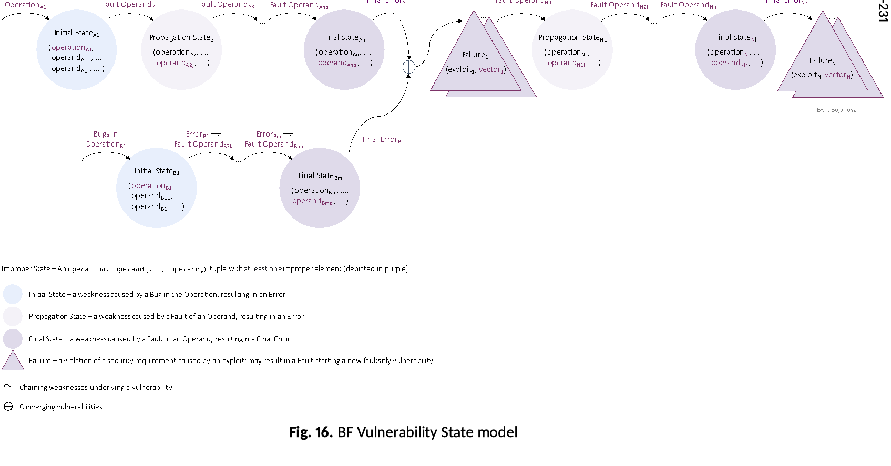
図16は、初期状態から伝播状態、最終状態、失敗に至る脆弱性状態の連鎖と、複数の連鎖が収束する関係を示す。
For example, in Fig. 16, Chain A starts from the \(\mathit{Initial\ State}_{A1}\), where \(\mathit{operation}_{A1}\) has a software, firmware, or hardware defect-induced bug. The \(\mathit{Error}_{A1}\) result propagates to a fault of \(\mathit{operand}_{A2j}\), which leads to the \(\mathit{Propagation\ State}_{A2}\). The last \(\mathit{operation}_{An}\) in this chain with faulty \(\mathit{operand}_{Anp}\) results in the \(\mathit{Final\ Error}_A\). Chain B analogously propagates through improper states, and its \(\mathit{Final\ Error}_B\) converges with \(\mathit{Final\ Error}_A\) toward \(\mathit{Failure}_1\) and possibly more failures. Once the exploit vector introduced by the final errors is used to exploit the vulnerability, \(\mathit{Failure}_1\) possibly creates a faulty \(\mathit{operand}_{AN1}\) that starts a new vulnerability chain, and so on until the final security \(\mathit{Failure}_N\) is reached.
例えば図16では、Chain Aは\(\mathit{Initial\ State}_{A1}\)から始まり、そこで\(\mathit{operation}_{A1}\)にソフトウェア、ファームウェア、またはハードウェアの欠陥に起因するバグが存在する。\(\mathit{Error}_{A1}\)の結果は\(\mathit{operand}_{A2j}\)のフォールトへ伝播し、\(\mathit{Propagation\ State}_{A2}\)に至る。このチェーンの最後の\(\mathit{operation}_{An}\)は、フォールトのある\(\mathit{operand}_{Anp}\)を伴い、\(\mathit{Final\ Error}_A\)をもたらす。Chain Bも同様に不適切な状態を伝播し、その\(\mathit{Final\ Error}_B\)は\(\mathit{Final\ Error}_A\)とともに\(\mathit{Failure}_1\)、場合によってはさらに多くの障害に向かって収束する。最終エラーが導入したエクスプロイトベクトルを使って脆弱性が悪用されると、\(\mathit{Failure}_1\)がフォールトのある\(\mathit{operand}_{AN1}\)を生じ、新たな脆弱性チェーンを開始する可能性がある。この過程は、最終的なセキュリティ上の\(\mathit{Failure}_N\)に達するまで続く。
For example, in Fig. 16, Chain A starts from the Initial StateA1, where operationA1 has a software, firmware, or hardware defect-induced bug. The ErrorA1 result propagates to a fault of operandA2j, which leads to the Propagation StateA2. The last operationAn in this chain with faulty operandAnp results in the Final ErrorA. Chain B analogously propagates through improper states, and its Final ErrorB converges with Final ErrorA toward Failure1 and possibly more failures. Once the exploit vector introduced by the final errors is used to exploit the vulnerability, Failure1 possibly creates a faulty operandAN1 that starts a new vulnerability chain, and so on until the final security FailureN is reached.
例えば図 16 では、チェーン A は初期状態 StateA1 から始まり、そこでは operationA1 がソフトウェア、ファームウェア、またはハードウェアの欠陥に起因するバグを持つ。結果の ErrorA1 は operandA2j のフォールトとして伝播し、伝播状態 StateA2 に至る。このチェーンの最後の operationAn は、フォールトを持つ operandAnp によって最終エラー Final ErrorA をもたらす。チェーン B も同様に不適切な状態を経て伝播し、その Final ErrorB は Final ErrorA と収束して Failure1、さらに場合によってはそれ以上の障害へと向かう。最終エラーがもたらしたエクスプロイトベクトルが脆弱性の悪用に使用されると、Failure1 はフォールトを持つ operandAN1 を生じさせ、それが新たな脆弱性チェーンの起点となる場合がある。これが最終的なセキュリティ障害 FailureN に至るまで続く。
Heartbleed, CVE-2014-0160 — as a real-world example — was a severe vulnerability in the OpenSSL cryptographic library [23]. A server (or client) with a vulnerable heartbeat extension would bleed data via a small heartbeat message with a large requested length (i.e., larger than the actual array size). Each exploit could reveal up to 64KB of raw memory of highly sensitive information (e.g., private keys and login credentials) via buffer over-reads. However, NVD labels it with CWE-125: Out-of-bounds Read, which covers both under-lower-bound and over-upper-bound reads from a buffer. In addition, it reflects only the weakness with the final error at the sink, not the weakness with the bug as the root cause.
現実の例として、Heartbleed（CVE-2014-0160）は OpenSSL 暗号ライブラリの深刻な脆弱性であった [23]。脆弱な heartbeat 拡張を持つサーバ（またはクライアント）は、要求長が大きい（すなわち実際の配列サイズより大きい）小さな heartbeat メッセージによってデータを漏えいさせた。1 回のエクスプロイトで、バッファの上限超え読み取りにより、機微性の高い情報（例えば秘密鍵やログイン認証情報）を含む最大 64KB の生のメモリが露呈しうる。しかし NVD はこれに CWE-125: Out-of-bounds Read のラベルを付けており、これはバッファの下限未満の読み取りと上限超えの読み取りの両方を含む。さらに、このラベルはシンクにおける最終エラーを持つ弱点のみを反映しており、根本原因であるバグを持つ弱点を反映していない。
The BF state view of Heartbleed is presented in Fig. 17 as two converging vulnerability chains of underlying weaknesses. The BF taxonomy helps identify and comprehensively label three weaknesses in the main chain and one more in the secondary chain.
Heartbleed の BF 状態ビューを、根底にある弱点からなる二つの収束する脆弱性チェーンとして図 17 に示す。BF の分類体系は、主チェーンの三つの弱点と副チェーンのもう一つの弱点を特定し、包括的にラベル付けするのに役立つ。
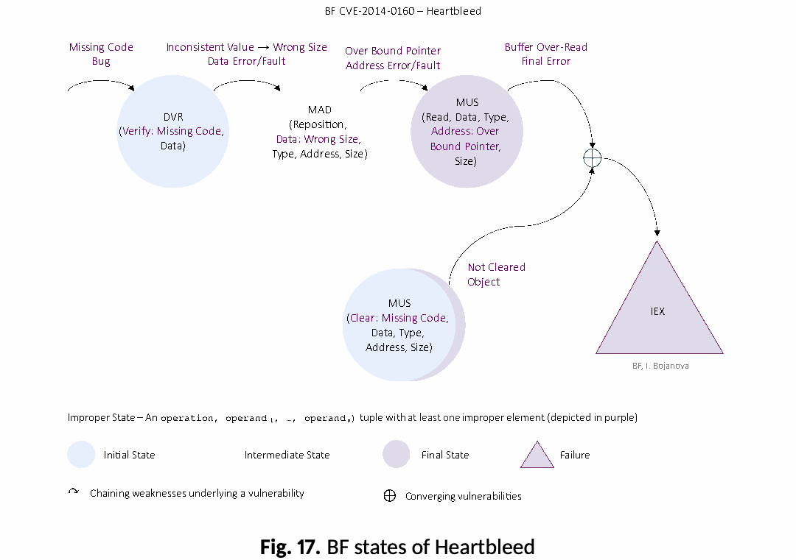
図17は、Heartbleedの弱点を二つの脆弱性連鎖として示し、それらが最終エラーで収束して失敗に至る過程を表す。
The bug was both in the ssl\d1_both.c and ssl\t1_lib.c files of the OpenSSL implementation of the TLS protocol [28]. Analysis of the C code before the fix (see Fig. 18 for d1_both.c) shows that the very first improper BF state is in the data verification phase, where the semantics of the input should be checked and corrected. The pointer \(p\) (see line 1450 in Fig. 18) is to a record of type SSL3_RECORD (see the top of Fig. 18) whose second field holds the length. The payload variable is declared as an unsigned int (see line 1452) and can be a huge number. It is assigned the value of the length field of p via the n2s macro (see line 1457). That is input data that supplies the length of an array (i.e., a buffer), but it is not checked before use toward the actual array size (i.e., the number of elements in the record data). Its value is not verified. This BF bug state is the first of a chain of improper states that would lead to buffer over-read. It is an instance of the BF Data Verification (DVR) class [1] as the (Verify: Missing Code, Data) tuple with an improper Verify operation element (see the first state in Fig. 17) — the entire data verification operation is absent — that results in an Inconsistent Value error. Then, memcpy() reads payload number of bytes from the object pointed by pl and copies them to the object pointed by bp (see line 1480 in Fig. 18). Following the naive C implementation of memcpy() at the bottom in Fig. 18, bp and pl are passed by reference via the dst and src arguments, and the huge payload length is passed via the n argument. First, one byte is read from pl and copied to bp. Until the huge payload length is reached, both pointers move one byte up, and the newly pointed by pl byte is read and copied. However, while bp is allocated large enough at up to 1+2+65535+16 bytes (see lines 1474 and 1475 in Fig. 18), pl points to an array with a reasonable size (see line 1458). As the content of this array is read and copied to bp, so too is a huge amount of data from over its upper bound.
バグは、TLSプロトコルのOpenSSL実装にあるssl\d1_both.cとssl\t1_lib.cの両ファイルに存在していた[28]。修正前のCコード（d1_both.cは図18参照）を分析すると、最初の不適切なBF状態は、入力の意味を検証して訂正すべきデータ検証フェーズにある。ポインタ\(p\)（図18の1450行目参照）はSSL3_RECORD型のレコード（図18上部参照）を指し、その2番目のフィールドがlengthを保持する。payload変数はunsigned intとして宣言され（1452行目参照）、非常に大きな数値を取り得る。この変数には、pのlengthフィールドの値がn2sマクロによって代入される（1457行目参照）。つまり、配列（バッファ）の長さを指定する入力データであるが、実際の配列サイズ（レコードデータの要素数）と照合されないまま使われる。その値は検証されない。このBFバグ状態は、バッファの範囲外読み取りにつながる不適切な状態の連鎖の最初である。これはBFデータ検証（DVR）クラス[1]の（Verify: Missing Code, Data）タプルのインスタンスである。不適切なVerify操作要素（図17の最初の状態参照）、つまりデータ検証操作全体の欠落によって、Inconsistent Valueエラーが生じる。次に、memcpy()はpayloadのバイト数を、plが指すオブジェクトから読み取り、bpが指すオブジェクトにコピーする（図18の1480行目参照）。図18下部の単純なCによるmemcpy()実装に従うと、bpとplはdstおよびsrc引数を介して参照渡しされ、巨大なペイロード長はn引数で渡される。まずplから1バイト読み取り、bpにコピーする。巨大なペイロード長に達するまで、両ポインタを1バイトずつ進め、新たにplが指すバイトを読み取ってコピーする。しかしbpには最大1+2+65535+16バイトという十分な大きさが割り当てられるのに対し（図18の1474行目と1475行目参照）、plが指す配列のサイズは妥当な大きさである（1458行目参照）。この配列の内容が読み取られてbpにコピーされると、配列の上限を超えた大量のデータも同様にコピーされる。
The analysis reveals two fault states: when pl is repositioned over the array upper bound and when data values are read from there. The former is an instance of the BF Memory Addressing (MAD) class [1] as the (Reposition, Data: Wrong Size, Type, Address, Size) tuple with an improper Data operand element (see the second state in Fig. 17) that results in an Overbound Pointer error. There is no bug in the Reposition operation itself, but a value that is inconsistent with the size of the pl object is used to control the iteration. The later is an instance of the BF Memory Use (MUS) class [1] as the (Read, Data, Type, Address: Overbound Pointer, Size) tuple with an improper Address operand element (see the third state in Fig. 17) that results in a Buffer Over-Read final error. Again, there is no bug in the Read operation itself, but because pl points overbound, it is possible to read data that should not be read (i.e., buffer over-read).
分析から、2つのフォールト状態が明らかになる。1つはplが配列の上限を超える位置に移動した状態、もう1つはその位置からデータ値を読み取る状態である。前者はBFメモリアドレッシング（MAD）クラス[1]の（Reposition, Data: Wrong Size, Type, Address, Size）タプルのインスタンスである。不適切なDataオペランド要素（図17の2番目の状態参照）によって、境界超過ポインタのエラーが生じる。Reposition操作自体にバグはないが、plオブジェクトのサイズと整合しない値が反復処理を制御するために使われる。後者はBFメモリ使用（MUS）クラス[1]の（Read, Data, Type, Address: Overbound Pointer, Size）タプルのインスタンスである。不適切なAddressオペランド要素（図17の3番目の状態参照）によって、最終エラーのバッファ範囲外読み取りが生じる。ここでもRead操作自体にバグはない。しかしplが境界を超えた位置を指すため、読み取るべきでないデータを読み取れてしまう（すなわちバッファ範囲外読み取り）。
The three-state BF chain so far (see the upper row in Fig. 17) shows that data can be read from over the bound of the array pointed by pl. However, it does not show why an exploit would reach sensitive information, such as private keys or login credentials. The vulnera-bility triggered by the missing size verification bug is only a part (although the main one) of the puzzle. typedef struct ssl3_record_st {
ここまでの3状態からなるBFチェーン（図17の上段参照）は、plが指す配列の境界を超えてデータが読み取られることを示している。しかし、エクスプロイトが秘密鍵やログイン認証情報などの機密情報まで到達する理由は示していない。サイズ検証の欠落というバグによって引き起こされる脆弱性は、全体のパズルの一部（ただし主要な部分）にすぎない。typedef struct ssl3_record_st {
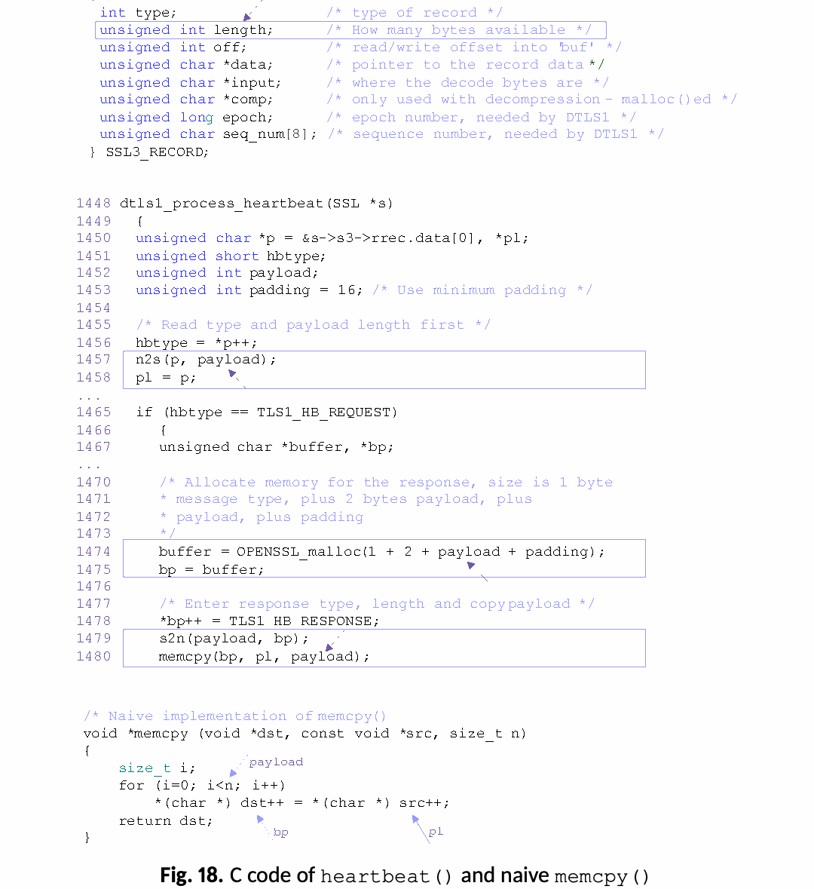
図18は、Heartbleedに関係するheartbeat()処理と単純なmemcpy()実装のCコード例を示す。
There must have been another coding error due to which an unused object with sensitive data was left in memory unaware of the risks. The bug state of this parallel vulnerability is again an instance of the BF MUS class but as the (Clear: Missing Code, Data, Type, Address) tuple with an improper Clear operation (see the second chain in Fig. 17) that results in a Not Cleared Object final error. Converging the final errors from both chains (i.e., buffer over-read and not cleared object), the vulnerable software can now reach and expose sensitive information.
リスクを認識しないまま機密データを含む未使用のオブジェクトがメモリ内に残された原因となる、別のコーディングエラーが存在していたに違いない。この並行する脆弱性のバグ状態は、再びBF MUSクラスのインスタンスであるが、不適切なClear操作を伴う (Clear: Missing Code, Data, Type, Address) タプルとして現れ（図17の2番目のチェーンを参照）、Not Cleared Object最終エラーを引き起こす。両方のチェーンからの最終エラー（すなわち、バッファオーバーリードとクリアされていないオブジェクト）が合流することで、脆弱なソフトウェアは機密情報に到達し、それを公開してしまう可能性がある。
The bug and fault state automata of Heartbleed (see Fig. 17) expresses it as two converging vulnerability chains of underlying weaknesses. Missing input data verification leads to the use of inconsistent size for a buffer and allows for a pointer reposition over its bound, which — converging with missing clear — allows for remote reads and the exposure of sensitive information. Multiple exploits of Heartbleed, each exposing up to 64KB of memory, can accumulate huge amounts of data, such as “secret keys used for certificates, user names and passwords, instant messages, emails, and business-critical documents and communication” [29].
Heartbleedのバグおよびフォールト状態オートマトン（図17参照）は、これを根本的な弱点の合流する2つの脆弱性チェーンとして表現している。入力データ検証の欠落は、バッファに対する不整合なサイズの使用につながり、その境界を超えたポインタの再配置を可能にする。これがクリアの欠落と合流することで、リモートからの読み取りと機密情報の露出を可能にする。それぞれ最大64KBのメモリを露出させるHeartbleedの複数回のエクスプロイトは、「証明書に使用される秘密鍵、ユーザー名とパスワード、インスタントメッセージ、電子メール、ならびに業務上不可欠な文書および通信」[29] など、膨大な量のデータを蓄積する可能性がある。
The fix of the bug in the main Heartbleed chain was to add input data semantics checks and silently ignore the heartbeat message if the requested length was larger than the actual array size (see Fig. 19) [30]. Lines 1468 and 1469 discard heartbeats with zero length. Lines 1472 and 1473 ensure that the actual length of the record data is sufficiently large.
メインのHeartbleedチェーンにおけるバグの修正は、入力データのセマンティクスチェックを追加し、要求された長さが実際の配列サイズよりも大きい場合にハートビートメッセージを暗黙的に無視することであった（Fig. 19参照）[30]。1468行目および1469行目は長さがゼロのハートビートを破棄する。1472行目および1473行目は、レコードデータの実際の長さが十分に大きいことを保証する。
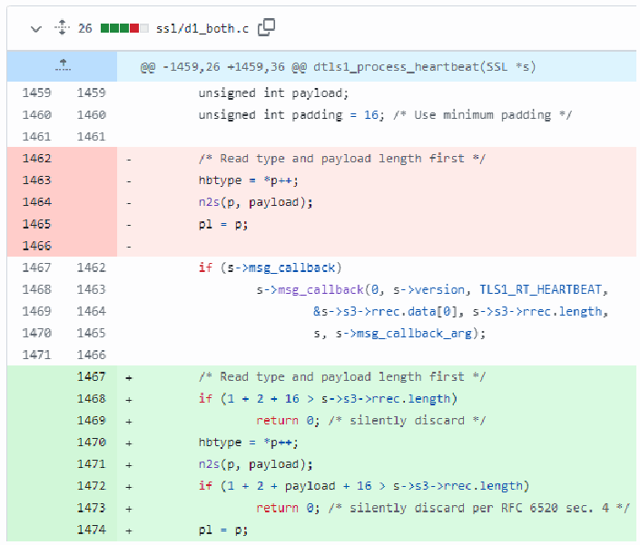
OpenSSLのHeartbeat処理に追加されたペイロード長の境界確認と、範囲外データを破棄するHeartbleed修正のコード差分
Fig. 19. Heartbleed fix in Heartbeat
Fig. 19. HeartbeatにおけるHeartbleedの修正
For more details on the BF Vulnerability State Model, refer to the forthcoming SP 800-231D, Bugs Framework: Vulnerability Models.
BF Vulnerability State Modelの詳細については、近日刊行予定のSP 800-231D『Bugs Framework: Vulnerability Models』を参照のこと。
7.2. BF Vulnerability Specification Model
7.2. BF脆弱性仕様モデル（BF Vulnerability Specification Model）
The BF Vulnerability Specification Model defines a vulnerability specification as a chain of \(\langle \textit{cause}, \textit{operation} \rangle \rightarrow \textit{consequence}\) relations (i.e., weakness triples) with operation and operand attributes and \(\textit{consequence} \curvearrowright \textit{cause}\) between weaknesses propagation (see Fig. 20). The model reflects the BF taxonomy structure (see Sec. 6) and the BF Vulnerability State Model (see Sec. 7.1). For simplicity, Fig. 20 does not visualize vulnerability convergence and chaining as Fig. 16 does. However, see Fig. 21 for a demonstrative example of vulnerability convergence.
BF脆弱性仕様モデルは、脆弱性仕様を、\(\langle \textit{cause}, \textit{operation} \rangle \rightarrow \textit{consequence}\)関係（すなわち弱点トリプル）のチェーンとして定義する。このチェーンは、操作およびオペランドの属性と、弱点間の\(\textit{consequence} \curvearrowright \textit{cause}\)伝播を伴う（図20参照）。このモデルは、BF分類体系の構造（6節参照）およびBF脆弱性状態モデル（7.1節参照）を反映している。簡潔にするため、図20は図16のようには脆弱性の収束と連鎖を可視化していない。ただし、脆弱性の収束の例示は図21を参照のこと。
The BF allows for the expression of a weakness as a \(\langle \textit{cause}, \textit{operation} \rangle \rightarrow \textit{consequence}\) causal triple with operation and operand attributes. A cause is a bug in an operation or a fault of an operand, and a consequence is the erroneous result from the operation. Bugs are code or specification defects, and faults are input operand defects. The output errors from operations propagate to faults or are final errors that introduce exploit vectors toward failures. A fault is of a name, data, type, address, or size. (see Sec. 3 and 4). Causation within a weakness is by meaningful \(\langle \textit{cause}, \textit{operation} \rangle \rightarrow \textit{consequence}\) relations. That is, the sets of valid relations defined for each BF taxonomy (see Sec. 6) restrict it. The bug or faulty input operand of an operation results in an error or a final error as a valid \(\langle \textit{bug}, \textit{operation} \rangle \rightarrow \textit{error}\), \(\langle \textit{fault}, \textit{operation} \rangle \rightarrow \textit{error}\), \(\langle \textit{bug}, \textit{operation} \rangle \rightarrow \textit{final error}\), or \(\langle \textit{fault}, \textit{operation} \rangle \rightarrow \textit{final error}\) weakness triple. For example, \(\langle \textit{Under-Restrictive Policy}, \textit{Validate} \rangle \rightarrow \textit{Source Code Injection}\) and \(\langle \textit{Mismatched Argument}, \textit{Coerce} \rangle \rightarrow \textit{Truncated Value}\) are meaningful weakness triples, but \(\langle \textit{Underbound Pointer}, \textit{Write} \rangle \rightarrow \textit{Buffer Overflow}\) is not, as the pointer is below the lower bound while the Write is over the upper bound. Causation between weaknesses is by error type to fault type match, and \(\textit{error value} \curvearrowright \textit{fault value}\) match or — for weaknesses of different BF class types — a meaningful values propagation (see Sec. 6). It is also guided by the valid flow of operations defined by the BF Bugs Models. If the causation between weaknesses does not follow the proper operation flow, an operation must be missing, which indicates an Missing Code bug. For example, \(\langle \textit{Wrong Type}, \textit{Coerce} \rangle \rightarrow \textit{Flipped Sign} \curvearrowright \langle \textit{Wrong Argument}, \textit{Evaluate} \rangle \rightarrow \textit{Under Range}\) is a valid weakness causation because the triples specify valid within-weakness relations, the Evaluate operation may follow the Coerce operation (see Fig. 10), and \(\textit{Flipped Sign} \curvearrowright \textit{Wrong Argument}\) is a valid data error-to-fault by value propagation. The \(\langle \textit{Erroneous Code}, \textit{Verify} \rangle \rightarrow \textit{Inconsistent Value} \curvearrowright \langle \textit{Wrong Size}, \textit{Reposition} \rangle \rightarrow \textit{Overbound Pointer} \curvearrowright \langle \textit{Overbound Pointer}, \textit{Write} \rangle \rightarrow \textit{Buffer Overflow}\) are valid weakness causations, as the data and address by type, \(\textit{Inconsistent Value} \curvearrowright \textit{Wrong Size}\) by value, and Overbound Pointer exact value propagation are all valid. For a similar one-chain example, recall the BadAlloc pattern from Sec. 3.3, Fig. 5 and see the BF CVE-2021-21834 specification at [1]). For a convergence involving example, see the BF specification of Heartbleed below.
BFでは、弱点を、操作およびオペランドの属性を伴う\(\langle \textit{cause}, \textit{operation} \rangle \rightarrow \textit{consequence}\)の因果トリプルとして表現できる。原因は操作のバグまたはオペランドのフォールトであり、結果は操作から生じる誤った結果である。バグはコードまたは仕様の欠陥であり、フォールトは入力オペランドの欠陥である。操作の出力エラーは、フォールトへ伝播するか、障害に至るエクスプロイトベクトルをもたらす最終エラーとなる。フォールトは、name、data、type、address、sizeのいずれかに関するものである（3節および4節参照）。弱点内の因果関係は、意味のある\(\langle \textit{cause}, \textit{operation} \rangle \rightarrow \textit{consequence}\)関係による。すなわち、各BF分類体系について定義された有効な関係の集合（6節参照）が、これを制限する。操作のバグまたはフォールトのある入力オペランドは、有効な弱点トリプル\(\langle \textit{bug}, \textit{operation} \rangle \rightarrow \textit{error}\)、\(\langle \textit{fault}, \textit{operation} \rangle \rightarrow \textit{error}\)、\(\langle \textit{bug}, \textit{operation} \rangle \rightarrow \textit{final error}\)、または\(\langle \textit{fault}, \textit{operation} \rangle \rightarrow \textit{final error}\)として、エラーまたは最終エラーを生じる。例えば、\(\langle \textit{Under-Restrictive Policy}, \textit{Validate} \rangle \rightarrow \textit{Source Code Injection}\)と\(\langle \textit{Mismatched Argument}, \textit{Coerce} \rangle \rightarrow \textit{Truncated Value}\)は意味のある弱点トリプルであるが、\(\langle \textit{Underbound Pointer}, \textit{Write} \rangle \rightarrow \textit{Buffer Overflow}\)はそうではない。ポインタが下限を下回っているのに対し、Writeは上限を超えるためである。弱点間の因果関係は、error typeとfault typeの一致、および\(\textit{error value} \curvearrowright \textit{fault value}\)の一致、または（BFクラス型が異なる弱点の場合は）意味のある値の伝播による（6節参照）。また、BFバグモデルが定義する有効な操作フローにも従う。弱点間の因果関係が適切な操作フローに従わない場合は、操作が欠落しているはずであり、これはMissing Codeバグを示す。例えば、\(\langle \textit{Wrong Type}, \textit{Coerce} \rangle \rightarrow \textit{Flipped Sign} \curvearrowright \langle \textit{Wrong Argument}, \textit{Evaluate} \rangle \rightarrow \textit{Under Range}\)は有効な弱点の因果関係である。これらのトリプルは有効な弱点内関係を指定しており、Evaluate操作はCoerce操作の後に続くことができ（図10参照）、\(\textit{Flipped Sign} \curvearrowright \textit{Wrong Argument}\)は値によるデータのエラーからフォールトへの有効な伝播だからである。\(\langle \textit{Erroneous Code}, \textit{Verify} \rangle \rightarrow \textit{Inconsistent Value} \curvearrowright \langle \textit{Wrong Size}, \textit{Reposition} \rangle \rightarrow \textit{Overbound Pointer} \curvearrowright \langle \textit{Overbound Pointer}, \textit{Write} \rangle \rightarrow \textit{Buffer Overflow}\)は有効な弱点の因果関係である。型によるデータおよびアドレスの伝播、値による\(\textit{Inconsistent Value} \curvearrowright \textit{Wrong Size}\)の伝播、Overbound Pointerの厳密な値の伝播がすべて有効だからである。1つのチェーンによる同様の例は、3.3節の図5のBadAllocパターンを思い出し、[1]のBF CVE-2021-21834仕様を参照のこと）。収束を伴う例は、後述のHeartbleedのBF仕様を参照のこと。
Causation between vulnerabilities is by \(\textit{exploit result type} \curvearrowright \textit{fault type}\) propagation (i.e., the fault starts a new faults-only vulnerability). For example, exposed private keys may become the fault that starts a new vulnerability.
脆弱性間の因果関係は、\(\textit{exploit result type} \curvearrowright \textit{fault type}\)の伝播による（すなわち、そのフォールトが、フォールトのみからなる新たな脆弱性を開始する）。例えば、露出した秘密鍵が、新たな脆弱性を開始するフォールトになり得る。
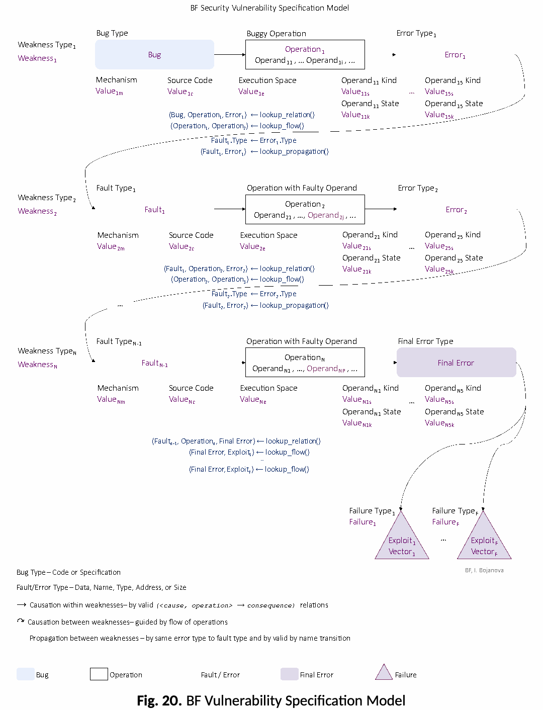
図20は、弱点の連鎖、原因・操作・結果の関係、状態および失敗を関連付けて脆弱性を形式的に記述するBFモデルを示す。
For example, the BF specification view of Heartbleed, CVE-2014-0160, is presented in Fig. 21. It expands the Heartbleed improper states view (see Fig. 17) via the BF taxonomic representation of a weakness as a \(\langle \textit{cause}, \textit{operation} \rangle \rightarrow \textit{consequence}\) triple with attributes and its \(\textit{consequence} \curvearrowright \textit{cause}\) propagation.
例えば、Heartbleed（CVE-2014-0160）のBF仕様ビューを図21に示す。これは、弱点を属性付きの\(\langle \textit{cause}, \textit{operation} \rangle \rightarrow \textit{consequence}\)トリプルとその\(\textit{consequence} \curvearrowright \textit{cause}\)伝播として表すBF分類体系の表現によって、Heartbleedの不適切な状態のビュー（図17参照）を拡張したものである。
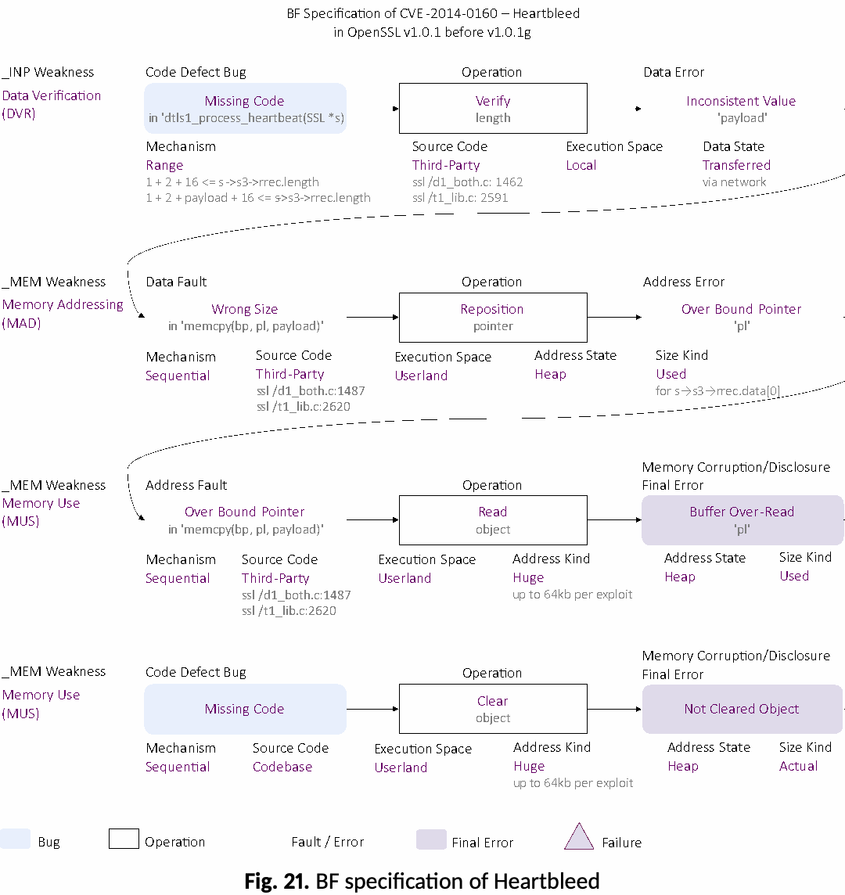
図21は、HeartbleedをBFで記述し、入力検証の欠陥からアドレス障害、バッファ読取り超過、失敗に至る弱点の連鎖を示す。
Using the BF taxonomies of the involved weakness types, the \(\langle \textit{Missing Code}, \textit{Verify} \rangle \rightarrow \textit{Inconsistent Value}\) weakness (see the first triple in the first chain in Fig. 21) is an instance of the BF DVR class. The missing input data verification (i.e., semantics check) security bug leads to a Data Error — a data value that is inconsistent with the size of the array.
関係する弱点タイプのBF分類体系を用いると、\(\langle \textit{Missing Code}, \textit{Verify} \rangle \rightarrow \textit{Inconsistent Value}\)の弱点（図21の最初のチェーンの最初のトリプル参照）は、BF DVRクラスのインスタンスである。入力データ検証（すなわち意味のチェック）の欠落というセキュリティバグは、Data Error、つまり配列のサイズと整合しないデータ値を生じる。
The operation and operand attributes provide details on what, how, and where it went wrong. The Mechanism, Source Code, and Execution Space attributes are about the Verify operation. Mechanism shows that the missing verification should have been checked against range (i.e., the actual length). Source Code shows that the bug is in third-party software — the d1_both.c and t1_lib.c files. Execution Space shows that the code with the bug is running in an environment with local user (i.e., limited) permissions. The Data State attribute is about the Data operand and shows that the data was transferred. Next, the \(\langle \textit{Wrong Size}, \textit{Reposition} \rangle \rightarrow \textit{Overbound Pointer}\) weakness (see the second triple in the first chain in Fig. 21) is an instance of the BF MAD class. The wrong size Data Fault at repositioning leads to a pointer pointing overbound (i.e., an address error). The Mechanism attribute for this weakness shows that the repositioning is sequential and iterates over the buffer elements. The Execution Space is userland — an environment with privilege levels but in unprivileged mode. The Address State attribute shows that the buffer is dynamically allocated in the heap. The Size Kind attribute shows that the iteration over the elements of the buffer is limited by a used value (supplied with the request); it is not limited by the actual size of the array.
操作およびオペランドの属性は、何が、どのように、どこで問題を起こしたかの詳細を示す。Mechanism、Source Code、Execution Spaceの各属性は、Verify操作に関するものである。Mechanismは、欠落していた検証が範囲（すなわち実際の長さ）と照合すべきものであったことを示す。Source Codeは、バグがサードパーティ製ソフトウェア、つまりd1_both.cおよびt1_lib.cファイルにあることを示す。Execution Spaceは、バグのあるコードがローカルユーザー（すなわち限定された）権限の環境で実行されていることを示す。Data State属性はDataオペランドに関するもので、データが転送されたことを示す。次に、\(\langle \textit{Wrong Size}, \textit{Reposition} \rangle \rightarrow \textit{Overbound Pointer}\)の弱点（図21の最初のチェーンの2番目のトリプル参照）は、BF MADクラスのインスタンスである。位置変更時のサイズ誤りというData Faultは、境界を超えた位置を指すポインタ（すなわちアドレスエラー）を生じる。この弱点のMechanism属性は、位置変更が逐次的で、バッファの要素を反復処理することを示す。Execution Spaceはユーザーランド、つまり特権レベルを持つが非特権モードの環境である。Address State属性は、バッファがヒープに動的に割り当てられていることを示す。Size Kind属性は、バッファの要素に対する反復処理が（リクエストとともに与えられた）使用値によって制限され、配列の実際のサイズによっては制限されないことを示す。
Last in this chain, the \(\langle \textit{Overbound Pointer}, \textit{Read} \rangle \rightarrow \textit{Buffer Over-Read}\) weakness (see the third triple in the first chain in Fig. 21) is an instance of the BF MUS class. The overbound pointer Address Fault results in a buffer over-read Memory Disclosure Final Error. The Address Kind attribute shows that the accessed out-of-bounds memory is huge — up to 64KB of memory per request.
このチェーンの最後の\(\langle \textit{Overbound Pointer}, \textit{Read} \rangle \rightarrow \textit{Buffer Over-Read}\)の弱点（図21の最初のチェーンの3番目のトリプル参照）は、BF MUSクラスのインスタンスである。境界超過ポインタというAddress Faultは、バッファの範囲外読み取りというMemory Disclosure Final Errorを生じる。Address Kind属性は、アクセスされた範囲外メモリが巨大で、リクエストあたり最大64KBに及ぶことを示す。
The converging vulnerability (see the second chain in Fig. 21) chain comprises another BF MUS instance — a \(\langle \textit{Missing Code}, \textit{Clear} \rangle \rightarrow \textit{Not Cleared Object}\) weakness. The missing clear (change to a non-meaningful value, such as via zeroization) bug leads to an object with not cleared data — a memory disclosure final error. The attributes are the same as for the BF MUS weakness in the main vulnerability (see Chain 1 in Fig. 21). However, this is a different vulnerability, and the source code is in different software.
収束する脆弱性のチェーン（図21の2番目のチェーン参照）は、もう1つのBF MUSインスタンスである\(\langle \textit{Missing Code}, \textit{Clear} \rangle \rightarrow \textit{Not Cleared Object}\)の弱点からなる。クリア（ゼロ化などによる無意味な値への変更）の欠落というバグは、データがクリアされていないオブジェクト、つまりメモリ開示の最終エラーを生じる。属性は、主たる脆弱性のBF MUSの弱点（図21のChain 1参照）と同じである。ただし、これは別の脆弱性であり、ソースコードは別のソフトウェアにある。
Combined, the memory disclosure final errors Buffer Over-Read and Not Cleared Object cause an information exposure (IEX) security failure. Either the missing Verify bug or the missing Clear bug has to be fixed to avoid this security failure. The corresponding BF specification of Heartbleed — CVE-2014-0160.bfcve — in XML for-mat is shown in Fig. 26. For more details, see BF CVE-2014-0160 Heartbleed at [1].
メモリ情報漏えいの最終エラーであるBuffer Over-ReadとNot Cleared Objectが組み合わさると、情報漏えい（IEX）というセキュリティ障害が生じる。この障害を防ぐには、Verifyの欠落バグまたはClearの欠落バグのどちらかを修正する必要がある。Heartbleedの対応するBF仕様 — CVE-2014-0160.bfcve — をXML形式で図26に示す。詳細は[1]のBF CVE-2014-0160 Heartbleedを参照されたい。
For more details on the BF Vulnerability Specification Model, refer to the forthcoming SP 800-231D, Bugs Framework: Vulnerability Models.
BF脆弱性仕様モデルの詳細については、近日公開予定のSP 800-231D『Bugs Framework: Vulnerability Models』を参照のこと。
8. BF Formal Language
8. BF形式言語
The BF formal language is generated by the BF left-to-right leftmost derivation one-symbol lookahead (LL(1)) attribute context-free grammar (ACFG) derived from the BF CFG. Since it is based on an LL(1) grammar, the BF formal language is guaranteed to be unambiguous, and the BF weakness and vulnerability specifications are guaranteed to be clear and precise.2 The BF lexis, syntax, and semantics are based on the BF structured causal taxonomies (e.g., Fig. 12), bugs models (e.g., Fig. 9), and vulnerability models (e.g., Fig. 16 and 20). Lexis refers to the vocabulary (i.e., words and symbols) used by a specification language. Syntax is about validating the grammatical structure (i.e., the form) of a specification. Semantics is about verifying the logical structure (i.e., the meaning) of a specification.
BF形式言語は、BF CFGから導出されたBF LL(1)属性付き文脈自由文法（ACFG）によって生成される。これは左から右へ最左導出を行う1記号先読み（LL(1)）文法である。LL(1)文法に基づくため、BF形式言語には曖昧さがなく、BF弱点および脆弱性の仕様は明確かつ正確であることが保証される。2 BFの語彙、構文、意味論は、BFの構造化された因果分類体系（例：図12）、バグモデル（例：図9）、脆弱性モデル（例：図16、20）に基づく。語彙とは、仕様記述言語で使う語および記号である。構文は仕様記述の文法構造（形式）の検証に関わり、意味論は論理構造（意味）の検証に関わる。
The BF CFG is a powerful tool for specifying and analyzing security weaknesses and vulnerabilities. It is defined in Listing 1 as a four-tuple
BF CFGは、セキュリティ上の弱点や脆弱性を仕様化および分析するための強力なツールである。これはListing 1において4つ組として定義されている
where:
ここで、
• \(\Sigma\) defines the BF lexis (i.e., the alphabet of the CFG) as a finite set of tokens (terminals) comprised by the sets of BF taxons and BF symbols
• \(\Sigma\)は、BFタクソンの集合とBF記号の集合からなるトークン（終端記号）の有限集合として、BFの語彙（すなわちCFGのアルファベット）を定義する
• \(V\) and \(R\) define the BF syntax (i.e., the types of phrases and the rules of the CFG) as
• \(V\)と\(R\)は、BFの構文（すなわちCFGの句の型と規則）を次のように定義する
◦ A finite set of variables (nonterminals)
◦ 変数（非終端記号）の有限集合
and
および
◦ A finite set of syntactic rules (productions) in the form
◦ 次の形式の構文規則（生成規則）の有限集合
Source note: the closing set brace is not visible in the original PDF.
原本照合メモ: 原本PDFの集合の閉じ波括弧は表示されていない。転記と数学的補完を区別し、閉じ波括弧を黙って追加しない。
原本注記：原本PDFでは集合の閉じ波括弧が表示されていない。
where:
\((V \cup \Sigma)^{*}\) is a string of tokens and/or variables, and
\(A \longmapsto \omega\) means that any variable \(A\) occurrence may be replaced by \(\omega\).
ここで：
\((V \cup \Sigma)^{*}\) はトークンおよび／または変数の文字列であり、
\(A \longmapsto \omega\) は、変数 \(A\) の任意の出現を \(\omega\) で置き換えてよいことを意味する。
• \(S \in V\) is the predefined start variable from which all BF specifications derive.
• \(S \in V\) は、すべてのBF仕様が導出される事前定義された開始変数である。
2Clear means easy to understand, straightorward, and unambiguous with no room for confusion or misin-terpretaton. Precise means exact, accurate, and specific, which also implies unambiguous.
2明確（Clear）とは、理解しやすく、率直で、混乱や誤解の余地がなく曖昧さがないことを意味する。正確（Precise）とは、厳密で、正確であり、特定的であることを意味し、これも曖昧さがないことを意味する。
A BF specification starts from \(S\) and ends with the empty string. The derivation is via a sequence of steps in which nonterminals are replaced by the right-hand side of a production. The production rules are applied to a variable regardless of its context.
BF仕様は \(S\) から始まり、空文字列で終わる。導出は、非終端記号を生成規則の右辺に置き換える手順を順に適用して行う。生成規則は、変数の文脈にかかわらず適用される。
The BF formal language is generated by the BF LL(1) ACFG \(G=(V,\Sigma,R,S)\) (see Listing 8) that augments the syntax of the BF CFG with semantic rules (see Listing 7). It is defined in Listing 2 as the set \(L(G)\) of all strings of tokens \(\omega\) derivable from the start variable \(S\).
BF形式言語は、意味規則（Listing 7参照）によってBF CFGの構文を拡張するBF LL(1) ACFG \(G=(V,\Sigma,R,S)\)（Listing 8参照）によって生成されます。Listing 2では、開始変数 \(S\)から導出できるトークン列 \(\omega\)全体の集合を \(L(G)\)として定義します。
where:
ここで：
• \(\Sigma^{*}\) is the set of all possible strings that can be generated from \(\Sigma\) tokens
• \(\Sigma^{*}\) は、\(\Sigma\) のトークンから生成可能なすべての文字列の集合である
• \(S\) is the start variable
• \(S\) は開始変数である
• \(\alpha \overset{*}{\Longrightarrow} \beta\) means string \(\alpha\) derives string \(\beta\).
• \(\alpha \overset{*}{\Longrightarrow} \beta\) は、文字列 \(\alpha\) から文字列 \(\beta\) が導出されることを意味する。
Strings involving nonterminals are not part of the language (i.e., \(\omega\) must be in \(\Sigma^{*}\) — the set of strings made from terminals).
非終端記号を含む文字列は言語の一部ではない（すなわち、\(\omega\) は \(\Sigma^{*}\)、つまり終端記号から作られる文字列の集合に属していなければならない）。
8.1. BF Lexis
8.1. BF 語彙
The BF formal language lexis refers to the vocabulary of the BF formal language: the set of tokens \(\Sigma\). Listing 3 defines it as the set of BF taxons (see Sec. 6) and the set of symbols for converging and chaining vulnerabilities (see Fig. 16):
BF形式言語の語彙（lexis）は、BF形式言語のボキャブラリ、すなわちトークンの集合 \(\Sigma\) を指す。Listing 3 は、これをBFタクソンの集合（Sec. 6 を参照）と、脆弱性を収束・連鎖させるための記号の集合（Fig. 16 を参照）として定義している：
The BF CFG lexis defines the BF taxons (e.g., for BF operations, bugs, faults, final errors, operation attributes, operand attributes, and failures). It also defines the set of BF symbols for specifying causation within a weakness (\(\rightarrow\)), chaining weaknesses or vulnerabilities (\(\curvearrowright\)), and converging vulnerabilities (\(\oplus\)). The taxons are in quotes (e.g., ‘Missing Code’ or ‘Query Injection’) and considered literal words. The BF classes are of a ‘Weakness’ or ‘Failure’ category. Listing 4 provides an excerpt of the BF lexis expressed via the Extended Backus–Naur Form (EBNF) [31] using the following meta-notations:
BF CFGの語彙（lexis）は、BFタクソン（例えば、BFの操作、バグ、フォールト、最終エラー、操作属性、オペランド属性、障害に対するもの）を定義する。また、弱点内の因果関係（\(\rightarrow\)）、弱点または脆弱性の連鎖（\(\curvearrowright\)）、脆弱性の収束（\(\oplus\)）を指定するためのBF記号の集合も定義する。タクソンは引用符で囲まれ（例：‘Missing Code’ や ‘Query Injection’）、リテラルの語とみなされる。BFクラスは ‘Weakness’ または ‘Failure’ のカテゴリに属する。Listing 4 は、以下のメタ記法を用いて拡張バッカス・ナウア記法（EBNF）[31] で表現したBF語彙の抜粋を示す：
8.2. BF Syntax
8.2. BF構文
The BF formal language syntax is about validating the grammatical structure of a BF specification. It adheres to the BF production rules (i.e., nonterminals) for constructing (producing) valid specifications of the language that correspond to the BF Vulnerability Specification Model structure and flow (see Fig. 20), including the converging and chaining rules (see Fig. 16) defined by the BF Vulnerability State Model.
BF形式言語構文は、BF仕様の文法構造の検証に関するものである。これは、BF脆弱性状態モデルによって定義される集約および連鎖ルール（Fig. 16を参照）を含む、BF脆弱性仕様モデルの構造およびフロー（Fig. 20を参照）に対応する言語の有効な仕様を構築（生成）するためのBF生成規則（すなわち非終端記号）に準拠している。
The BF CFG syntax defines a vulnerability that possibly converges with other vulnerabilities, leading to one or more failures. The CFG production rules are expressed via the EBNF using the following meta-notations:
BF CFG構文は、他の脆弱性と収束して1つ以上の障害に至る可能性がある脆弱性を定義する。CFGの生成規則は、次のメタ記法を用いてEBNFで表現される。
A vulnerability is defined as a chain of weaknesses, possibly converged and chained with other vulnerabilities. A weakness is defined as a \( \langle \mathit{cause}, \mathit{operation} \rangle \rightarrow \mathit{consequence} \) triple. A cause is defined as a bug or a fault. A consequence is defined as an error or a final error (see Listing 5). However, according to the BF Vulnerability Specification Model (see Fig. 20), only the cause of the first weakness can be a bug, and only the last consequence can be a final error.
脆弱性（vulnerability）は、弱点（weakness）の連鎖として定義され、他の脆弱性と収束および連鎖することがある。弱点は、\( \langle \mathit{cause}, \mathit{operation} \rangle \rightarrow \mathit{consequence} \) というトリプルとして定義される。原因（cause）はバグ（bug）またはフォールト（fault）として定義される。結果（consequence）はエラー（error）または最終エラー（final error）として定義される（Listing 5を参照）。ただし、BF脆弱性仕様モデル（BF Vulnerability Specification Model、Fig. 20を参照）によると、バグになり得るのは最初の弱点の原因だけであり、最終エラーになり得るのは最後の結果だけである。
The last production in Listing 5 expresses that the same set of taxons corresponds to \( \mathit{Fault} \) and \( \mathit{Error} \), although they are different non-terminals — the former is a cause of a weakness, the latter is a consequence of a weakness. An \( \mathit{Error} \curvearrowright \mathit{Fault} \) propagation may be on a different level of abstraction (e.g., \( \mathit{Inconsistent\ Value} \curvearrowright \mathit{Wrong\ Size} \)). A vulnerability with a single weakness is the only case in which a weakness is defined with both a bug cause and a final error consequence. A propagation weakness is caused by a fault and results in an error. Listing 6 reflects these rules in the productions of Listing 5 and eliminates the \( \mathit{Cause} \) and \( \mathit{Consequence} \) variables.
Listing 5の最後の生成規則は、\( \mathit{Fault} \) と \( \mathit{Error} \) が異なる非終端記号である（前者は弱点の原因、後者は弱点の結果である）にもかかわらず、同じタクソンの集合がそれらに対応することを表している。\( \mathit{Error} \curvearrowright \mathit{Fault} \) の伝播は、異なる抽象化レベルで起こることがある（例：\( \mathit{Inconsistent\ Value} \curvearrowright \mathit{Wrong\ Size} \)）。弱点がバグの原因と最終エラーの結果の両方で定義されるのは、弱点を1つだけ持つ脆弱性の場合に限られる。伝播の弱点はフォールトによって引き起こされ、エラーをもたらす。Listing 6は、Listing 5の生成規則にこれらの規則を反映し、変数 \( \mathit{Cause} \) と \( \mathit{Consequence} \) を取り除いている。
To ensure that the BF specifications are unambiguous, the next step is to demonstrate the successful derivation of a BF LL(1)³ formal grammar from the BF CFG. A CFG is an LL(1) grammar if and only if only one token (terminal) or variable (nonterminal) is needed to make a parsing decision [32]. LL(1) grammars are not ambiguous and not left-recursive.
翻訳準備中
The BF LL(1) formal CFG is derived from the BF EBNF productions on Listing 6 via left factorization and left recursion elimination. It is suitable for recursive descent parsing, as the start of each production option is unique. The rule to choose on each step is uniquely determined by the current variable and the next taxon (if there is one).
翻訳準備中
Listing 7 defines the BF LL(1) CFG production rules for constructing valid, unambiguous BF specifications. Compared to Listing 6, it also details the bug, fault, error, and final error type non-terminals.
翻訳準備中
The BF specifications are derived from the start symbol \( S \) by step-by-step production application, substituting for the leftmost terminal one at a time until the string is fully expanded (i.e., consists of only terminals).
BF仕様は、開始記号 \( S \) から生成規則を段階的に適用し、文字列が完全に展開される（すなわち終端記号のみで構成される）まで、最も左の終端記号を一度に1つずつ置き換えることで導出される。
8.3. BF Semantics
翻訳準備中
The BF formal language semantics is about verifying the logical structure of a BF specification. It is defined by extending the BF LL(1) CFG to a BF LL(1) ACFG with static semantic rules that adhere to the BF Vulnerability Models causation and propagation rules (see Fig. 16 and 20). The static semantic rules are expressed via a set of grammar attributes (i.e., properties to which values can be assigned), a set of semantic functions for computing the attribute values, and a possibly empty set of predicate functions for each production rule (e.g., Donald Knuth’s attribute grammars [33]).
翻訳準備中
Listing 8 presents the BF LL(1) ACFG syntax and semantic rules. If a nonterminal appears in more than one rule, it gets subscripted. The semantic rules prevent invalid within weaknesses relations and \( \mathit{error} \curvearrowright \mathit{fault} \) by value between weaknesses propagation and check for valid flow by operation.
Listing 8は、BF LL(1) ACFGの構文規則と意味規則を示す。非終端記号が複数の規則に出現する場合は、添字を付ける。意味規則は、弱点内の無効な関係と、弱点間の値による \( \mathit{error} \curvearrowright \mathit{fault} \) 伝播の無効なものを防ぎ、操作による有効なフローを検査する。
The BF LL(1) ACFG adds the \( \mathit{Type} \) synthesized attribute for the nonterminals \( \mathit{Fault} \) and \( \mathit{Error} \) to store the operand types (i.e., Name, Data, Type, Address, or Size) and \( \mathit{FinalError} \) to store the final error types (e.g., Injection, Memory Corruption/Disclosure, Access, and Type Compute). The predicates express propagation by error type and fault type.
BF LL(1) ACFGは、合成属性 \( \mathit{Type} \) を追加する。非終端記号 \( \mathit{Fault} \) と \( \mathit{Error} \) ではオペランドの型（すなわち Name、Data、Type、Address、または Size）を格納し、\( \mathit{FinalError} \) では最終エラーの型（例えば Injection、Memory Corruption/Disclosure、Access、Type Compute）を格納する。述語は、エラー型とフォールト型による伝播を表現する。
Syntax Rules:
構文規則:
Semantic Rules:
意味規則:
Predicates:
述語:
For example, listing 9 expresses the formal BF specification of CVE-2014-0160 Heartbleed.
例えば、リスト9はCVE-2014-0160 Heartbleedの形式的BF仕様を表している。
For the fully expressed BF lexis, syntax, and semantics in EBNF, refer to the forthcoming SP 800-231E, Bugs Framework: Formal Language.
BFの語彙、構文、意味論をEBNFで完全に表現したものについては、刊行予定のSP 800-231E『Bugs Framework: Formal Language』を参照されたい。
9. BF Secure Coding Principles
9. BF のセキュアコーディング原則
The Software Engineering Institute (SEI) Computer Emergency Response Team (CERT) Coding Standards (e.g., [34] and [35]) and the Open Worldwide Application Security Project (OWASP) Secure Coding Practices [36] set the current state of the art in secure coding. They provide rules and practices that are grouped by topic and described in natural language. The CERT rules are also programming language-specific, though they do provide useful non-compliant code examples and compliant solutions.
Software Engineering Institute（SEI）のComputer Emergency Response Team（CERT）コーディング標準（例：[34]、[35]）と、Open Worldwide Application Security Project（OWASP）のSecure Coding Practices [36]は、セキュアコーディングにおける現時点の最先端を示している。これらは、トピック別にまとめ、自然言語で説明した規則や実践方法を提供する。CERTの規則はプログラミング言語固有でもあるが、準拠していないコードの有用な例と準拠した解決策も示している。
In contrast, the BF bugs models, weakness and failure taxonomies, and vulnerability models (see Sec. 5, 6, and 7) form the basis for the formal definition of secure coding principles by software, firmware, or hardware execution phases, that are also programming language-independent. For example, the BF Input/Output Check Bugs Model (see Fig. 8) and classes (see BF _INP at [1]) address input/output check safety (e.g., no SQL injections or use of wrong input values). The BF Memory Bugs Model (see Fig. 9) and classes (see BF _MEM at [1]) address memory safety (e.g., no use after frees or buffer overflows). The BF Data Type Bugs Model (see Fig. 10) and classes (see BF _DAT at [1]) address data type safety (e.g., no integer overflows or subtype confusions). The BF Vulnerability Models rules (see Sec. 7), which are reflected in the BF semantics, help identify the dependencies between different kinds of code safety.
これに対し、BF のバグモデル、弱点と障害の分類体系、および脆弱性モデル（5 節、6 節、7 節を参照）は、ソフトウェア、ファームウェア、またはハードウェアの実行フェーズごとのセキュアコーディング原則を形式的に定義するための基盤となり、これらの原則はプログラミング言語にも依存しない。例えば、BF Input/Output Check Bugs Model（図 8 を参照）とクラス（[1] の BF _INP を参照）は、入出力チェックの安全性（例えば SQL インジェクションや誤った入力値の使用がないこと）を扱う。BF Memory Bugs Model（図 9 を参照）とクラス（[1] の BF _MEM を参照）は、メモリ安全性（例えば解放後使用やバッファオーバーフローがないこと）を扱う。BF Data Type Bugs Model（図 10 を参照）とクラス（[1] の BF _DAT を参照）は、データ型の安全性（例えば整数オーバーフローやサブタイプの取り違えがないこと）を扱う。BF の意味論に反映されている BF Vulnerability Models の規則（7 節を参照）は、異なる種類のコードの安全性の間の依存関係を特定するのに役立つ。
The BF bugs models define the sets of operations where code safety could break. They also define the proper operation flow within and between execution phases that — if not followed — could also break code safety. The x-axis of a model reflects temporal safety. The y-axis of a model may reflect spatial safety. The BF weakness taxonomies are organized by the bugs models phases and define why (i.e., bugs and faults), where (i.e., operations), and how (i.e., errors and final errors) the code safety could break. The BF vulnerability models define the causation, propagation, and convergence rules, which in addition to the proper operation flow, define how breaking one kind of code safety may lead to breaking another.
BFバグモデルは、コードの安全性が損なわれる可能性がある操作の集合を定義する。また、実行フェーズ内およびフェーズ間の適切な操作フローも定義し、それに従わない場合にもコードの安全性が損なわれる可能性がある。モデルのx軸は時間的安全性を表し、y軸は空間的安全性を表す場合がある。BF弱点分類体系はバグモデルのフェーズ別に構成され、コードの安全性が「なぜ」（すなわちバグとフォールト）、「どこで」（すなわち操作）、「どのように」（すなわちエラーと最終エラー）損なわれ得るかを定義する。BF脆弱性モデルは因果関係、伝播、収束の規則を定義する。これらの規則は、適切な操作フローとともに、ある種類のコード安全性の破綻が別の種類の破綻につながり得る仕組みを定める。
9.1. Input/Output Check Safety
9.1. 入出力チェックの安全性
Input/output check safety ensures the use of proper input/output data in code. That is, data is properly validated and sanitized and/or verified and corrected. It is addressed by the BF Input/Output Check Bugs Model (see Fig. 8) operation flow and the BF DVL and DVR classes (see BF _INP at [1]) that define why, where, and how input/output check safety could break. It relates to the BF data operations Validate, Sanitize, Verify, and Correct. Input/output data must be validated (syntax check) and then sanitized (escaped, filtered, or repaired) and/or verified (semantics check) and then corrected (assigned a new value or removed), if needed.
入出力チェックの安全性は、コードで適切な入出力データを使用することを保証する。つまり、データを適切に検証して無害化し、かつ／または意味を確認して訂正する。BF入出力チェックバグモデル（図8参照）の操作フローと、入出力チェック安全性が「なぜ」「どこで」「どのように」損なわれるかを定めるBF DVLおよびDVRクラス（[1]のBF _INP参照）がこれを扱う。関連するBFデータ操作はValidate、Sanitize、Verify、Correctである。入出力データは、検証（構文チェック）した後に無害化（エスケープ、フィルタリング、修復）し、かつ／または意味を確認（意味のチェック）した後に、必要に応じて訂正（新しい値を割り当てる、または削除）しなければならない。
Avoiding the meaningful ⟨bug/fault, operation⟩ couples of the BF _INP classes would guarantee input/output check safety. That is, avoiding the BF DVL bugs (i.e., missing or erroneous validation, or under-restrictive or over-restrictive validation policy) and faults (i.e., corrupted or tampered data or validation policy) guarantees safety from errors, such as Invalid Data and final errors, such as Query Injection (e.g., SQL injection) and Source Code Injection (e.g., Cross Site Scripting (XSS)). Injections enable the following security failures: IEX, TPR, ACE, and its sub-case RCE. Avoiding the BF DVR bugs (i.e., missing or erroneous verification or under-restrictive or over-restrictive verification) and faults (i.e., invalid data) guarantees safety from errors, such as Wrong Value, Inconsistent Value, and Wrong Type.
翻訳準備中
9.2. Memory Safety
9.2. メモリ安全性
Memory safety ensures the proper access and use of memory in code. That is, pointers to objects are properly initialized, dereferenced, repositioned, or reassigned, and objects are properly allocated, initialized, read, written, resized, cleared, or deallocated. It is addressed by the BF Memory Bugs Model (see Fig. 9) operation flow and the BF MAD, MMN, and MUS classes (see BF _MEM at [1]) that define why, where, and how memory safety could break.
メモリ安全性は、コードにおけるメモリの適切なアクセスおよび使用を保証する。すなわち、オブジェクトへのポインタが適切に初期化、逆参照、再配置、または再代入され、オブジェクトが適切に割り当て、初期化、読み取り、書き込み、サイズ変更、クリア、または解放されることである。これは、メモリ安全性がなぜ、どこで、どのように損なわれる可能性があるかを定義するBFメモリバグモデル（Fig. 9を参照）の操作フロー、ならびにBF MAD、MMN、およびMUSクラス（[1]のBF _MEMを参照）によって扱われる。
Memory safety has both temporal and spatial aspects that depend on pointer safety. Temporal memory safety ensures that an object memory is only accessed or used during its life cycle and only via its proper pointers (owners). Access is via BF MAD Dereference of a pointer to the object; use is via BF MUS Read or Write of object data. The first operation over an allocated object must be BF MUS Initialize Object, and the last one before it is deallocated must be BF MUS Clear (see Fig. 9). Examples of temporal memory safety are uninitialized object, use after deallocate (i.e., use after free or use after return in C), and double deallocate (i.e., double free in C) safety. The first prevents the use of non-meaningful data values, the second prevents the use of data values via dangling pointers, and the third prevents the deallocation of deallocated objects via dangling pointers. The following BF weakness specifications detail what bugs or faults could break these three kinds of temporal memory safety: \(\langle \textit{Missing Code/Erroneous Code}, \textit{Initialize Object} \rangle \rightarrow \textit{Uninitialized Object}\), \(\langle \textit{Dangling Pointer}, \textit{Read} \rangle \rightarrow \textit{Use After Deallocate}\), and \(\langle \textit{Dangling Pointer}, \textit{Deallocate} \rangle \rightarrow \textit{Double Deallocate}\). A dangling pointer holds the address of its successfully deallocated object (i.e., a pointer to a freed heap object or address of a stack object returned by a function) and is the consequence of a \(\langle \textit{Missing Code}, \textit{Reassign} \rangle \rightarrow \textit{Dangling Pointer}\) (see the discussion on pointer safety below) after a Deallocate operation. Spatial memory safety ensures access or use within the bounds of an allocated object and only via its pointers (owners). In addition to the MAD Dereference and MUS Read and Write operations, it also relates to the MAD and MDL operations along the y-axis of the _MEM Bugs Model (see Fig. 9) that affect the object boundaries: Allocate, Extend, Reallocate-Extend, Reduce, and Reallocate-Reduce. The size of the object is always strictly defined, and the pointer must not exceed its boundaries.
メモリ安全性には、ポインタ安全性に依存する時間的な側面と空間的な側面がある。時間的メモリ安全性は、オブジェクトのメモリがそのライフサイクル中にのみ、かつ適切なポインタ（所有者）を介してのみアクセスまたは使用されることを保証する。アクセスはオブジェクトへのポインタの BF MAD Dereference によって行い、使用はオブジェクトデータの BF MUS Read または Write によって行う。割り当てられたオブジェクトに対する最初の操作は BF MUS Initialize Object でなければならず、解放前の最後の操作は BF MUS Clear でなければならない（Fig. 9 を参照）。時間的メモリ安全性の例には、未初期化オブジェクト、解放後使用（すなわち C における use after free または use after return）、二重解放（すなわち C における double free）に対する安全性がある。1つ目は意味のないデータ値の使用を防ぎ、2つ目はダングリングポインタを介したデータ値の使用を防ぎ、3つ目はダングリングポインタを介した解放済みオブジェクトの解放を防ぐ。次の BF 弱点仕様は、どのようなバグまたはフォールトがこれら3種類の時間的メモリ安全性を破りうるかを示す：\(\langle \textit{Missing Code/Erroneous Code}, \textit{Initialize Object} \rangle \rightarrow \textit{Uninitialized Object}\)、\(\langle \textit{Dangling Pointer}, \textit{Read} \rangle \rightarrow \textit{Use After Deallocate}\)、および \(\langle \textit{Dangling Pointer}, \textit{Deallocate} \rangle \rightarrow \textit{Double Deallocate}\)。ダングリングポインタは、正常に解放されたオブジェクトのアドレス（すなわち、解放されたヒープオブジェクトへのポインタ、または関数が返したスタックオブジェクトのアドレス）を保持しており、\(\langle \textit{Missing Code}, \textit{Reassign} \rangle \rightarrow \textit{Dangling Pointer}\)（後述のポインタ安全性の説明を参照）が Deallocate 操作の後に生じた結果である。空間的メモリ安全性は、アクセスまたは使用が割り当てられたオブジェクトの境界内で、かつそのポインタ（所有者）を介してのみ行われることを保証する。MAD Dereference および MUS Read と Write の操作に加えて、_MEM Bugs Model（Fig. 9 を参照）の y 軸に沿った、オブジェクトの境界に影響する MAD および MDL の操作、すなわち Allocate、Extend、Reallocate-Extend、Reduce、Reallocate-Reduce にも関係する。オブジェクトのサイズは常に厳密に定義されており、ポインタはその境界を超えてはならない。
Examples of spatial memory safety are buffer overflow and underflow safety, and buffer over-read and under-read safety. The following BF weakness specifications detail what bugs or faults could break these two kinds of spatial memory safety: \(\langle \textit{Overbound Pointer}, \textit{Write} \rangle \rightarrow \textit{Buffer Overflow}\) and \(\langle \textit{Underbound Pointer}, \textit{Read} \rangle \rightarrow \textit{Buffer Under-Read}\). For consideration, there are also the fault weaknesses that may cause them, such as \(\langle \textit{Wrong Size}, \textit{Allocate/Reduce} \rangle \rightarrow \textit{Insufficient Size}\), \(\langle \textit{Wrong Size}, \textit{Reposition} \rangle \rightarrow \textit{Underbound Pointer}\), and \(\langle \textit{Insufficient Size}, \textit{Reposition} \rangle \rightarrow \textit{Overbound Pointer}\), which in turn are caused by the declaration of verification bug weaknesses. Buffer overflows and underflows enable TPR, DOS, and ACE failures. Buffer over-reads and under-reads enable IEX failures.
空間的メモリ安全性の例には、バッファオーバーフローおよびアンダーフローに対する安全性と、バッファオーバーリードおよびアンダーリードに対する安全性がある。次の BF 弱点仕様は、どのようなバグまたはフォールトがこれら2種類の空間的メモリ安全性を破りうるかを示す：\(\langle \textit{Overbound Pointer}, \textit{Write} \rangle \rightarrow \textit{Buffer Overflow}\) および \(\langle \textit{Underbound Pointer}, \textit{Read} \rangle \rightarrow \textit{Buffer Under-Read}\)。あわせて考慮すべきものとして、これらを引き起こしうるフォールト弱点もあり、たとえば \(\langle \textit{Wrong Size}, \textit{Allocate/Reduce} \rangle \rightarrow \textit{Insufficient Size}\)、\(\langle \textit{Wrong Size}, \textit{Reposition} \rangle \rightarrow \textit{Underbound Pointer}\)、および \(\langle \textit{Insufficient Size}, \textit{Reposition} \rangle \rightarrow \textit{Overbound Pointer}\) がある。これらはさらに、検証バグ弱点の宣言によって引き起こされる。バッファオーバーフローおよびアンダーフローは TPR、DOS、ACE の障害を可能にする。バッファオーバーリードおよびアンダーリードは IEX の障害を可能にする。
Allocation in excess or failure to deallocate unused objects (see the MMN Memory Overflow and Memory Leak final errors, correspondingly) could exhaust memory. The former impacts spatial memory safety. The latter directly impacts temporal safety and indirectly impacts spatial memory safety. Both enable DOS failures.
過剰な割り当て、または未使用のオブジェクトの解放の失敗（それぞれ MMN の Memory Overflow および Memory Leak の最終エラーを参照）は、メモリを枯渇させる可能性がある。前者は空間的メモリ安全性に影響を与える。後者は時間的安全性に直接影響を与え、空間的メモリ安全性に間接的に影響を与える。両者とも DOS 障害を可能にする。
Pointer Safety ensures that an object is only accessed via its proper pointers (owners). It relates to the MAD, MAL, and MDL operations (see Fig. 9) that assign or reassign the object pointer (owner): Initialize Pointer, Allocate, and Reassign. Use of Wild Pointer, Untrusted Pointer, Cast Pointer, or Forbidden Address (including Null Pointer) would break pointer safety and lead to final errors such as Object Corruption, Memory Leak, Type Confusion, and NULL Pointer Dereference, respectively. Subsequently, bugs and faults covered by any non-_MEM classes, whose operations produce such pointers, should also be avoided.
ポインタ安全性（Pointer Safety）は、オブジェクトがその適切なポインタ（所有者）を介してのみアクセスされることを保証する。これは、オブジェクトポインタ（所有者）の割り当てまたは再割り当てを行う MAD、MAL、および MDL 操作（Fig. 9 を参照）に関連している：Initialize Pointer、Allocate、および Reassign。Wild Pointer、Untrusted Pointer、Cast Pointer、または Forbidden Address（Null Pointer を含む）の使用はポインタ安全性を破り、それぞれ Object Corruption、Memory Leak、Type Confusion、および NULL Pointer Dereference などの最終エラーにつながる。したがって、そのようなポインタを生成する操作を持つ非 _MEM クラスによってカバーされるバグやフォールトも回避されるべきである。
According to the proper memory-related operation flow (see Fig. 9), a pointer may be initialized before or after the allocation of its object. However, it must be initialized before it is used to address its object, repositioned after the reallocation of its object, and reassigned after the deallocation of its object. These correspond to the MAD Wild Pointer and Dangling Pointer errors. If an object is reallocated because of being extended or reduced, all of its owners must be repositioned.
適切なメモリ関連操作フロー（図9参照）では、オブジェクトの割り当ての前後いずれでもポインタを初期化できる。ただし、オブジェクトを指すために使用する前に初期化し、再割り当て後に位置を変更し、オブジェクトの解放後に割り当て直す必要がある。これらはMADのワイルドポインタおよびダングリングポインタのエラーに対応する。オブジェクトを拡張または縮小するために再割り当てした場合、そのオブジェクトを所有するすべてのポインタの位置を変更する必要がある。
An object must not be read before it is initialized (i.e., the first write) and must be cleared (i.e., the last write) before it is deallocated. An unneeded object must be cleared and deallocated, and all of its pointers (owners) must be reassigned. It should not be possible to access and use its data after it is deallocated. These correspond to the BF MUS Uninitialized Object error and Not Cleared Object, Memory Leak, and Use After Deallocate (i.e., use after free or use after return) final errors. Memory leaks enable IEX and DOS failures. The use of deallocated objects enables IEX, TPR, DOS, and ACE failures.
オブジェクトは初期化（最初の書き込み）前に読み取ってはならず、解放前にクリア（最後の書き込み）する必要がある。不要になったオブジェクトはクリアして解放し、そのポインタ（所有者）をすべて割り当て直す必要がある。解放後にデータへアクセスして使用できてはならない。これらはBF MUSのUninitialized Objectエラー、およびNot Cleared Object、Memory Leak、Use After Deallocate（use after freeまたはuse after return）の最終エラーに対応する。メモリリークはIEXおよびDOS障害を引き起こし得る。解放済みオブジェクトの使用はIEX、TPR、DOS、ACEの各障害につながり得る。
Temporal memory safety may depend on input data safety. For example, verification of an input size toward the actual size of a buffer before Read or Write will eliminate related buffer overflows. Spatial memory safety may depend on data type safety. For example, avoiding Cast-related data errors that may lead to the use of an incorrect element size and Reposition overbound or underbound will eliminate related buffer overflows.
時間的メモリ安全性は、入力データの安全性に依存する場合がある。例えば、ReadまたはWriteの前にバッファの実際のサイズに対して入力サイズを検証することで、関連するバッファオーバーフローを排除できる。空間的メモリ安全性は、データ型安全性に依存する場合がある。例えば、誤った要素サイズの使用につながる可能性のあるCast関連のデータエラーや、境界超過（overbound）または境界未満（underbound）へのRepositionを回避することで、関連するバッファオーバーフローを排除できる。
Avoiding the meaningful \(\langle \mathit{bug/fault}, \mathit{operation} \rangle\) couples of the BF _MEM classes would guarantee temporal and spatial memory safety, as well as general pointer safety. Avoiding erroneous pointer arithmetics will also eliminate related buffer overflows. For example, proper type declaration would avoid type coercion at argument passing to functions that calculate the size of a buffer and result in flipped signs and wrap-around (e.g., integer overflows), rounded (i.e., breaking floating point safety), or truncated values.
BF _MEMクラスの意味のある\(\langle \mathit{bug/fault}, \mathit{operation} \rangle\)のペアを回避することは、一般的なポインタ安全性だけでなく、時間的および空間的メモリ安全性を保証することになる。誤ったポインタ演算を回避することによっても、関連するバッファオーバーフローを排除できる。例えば、適切な型宣言を行えば、バッファのサイズを計算する関数への引数受け渡し時における型強制や、それに起因する符号反転およびラップアラウンド（例: 整数オーバーフロー）、丸められた値（すなわち浮動小数点安全性の侵害）、または切り捨てられた値を回避できるだろう。
9.3. Data Type Safety
9.3. データ型安全性
Data type safety ensures the proper use of entities (e.g., objects, functions, and data types) in code. That is, objects, functions, and data types are properly declared, defined, and referenced; objects are properly typecast or coerced; and functions are correctly called to perform error-free type-related computations. It is addressed by the BF Data Type Bugs Model (see Fig. 10) operation flow and the BF DCL, NRS, TCM, and TCV classes (see BF _DAT at [1]) that define why, where, and how data type safety could break.
データ型安全性は、コード内におけるエンティティ（例: オブジェクト、関数、およびデータ型）の適切な使用を保証する。すなわち、オブジェクト、関数、およびデータ型が適切に宣言、定義、および参照され、オブジェクトが適切に型キャストまたは強制（型変換）され、エラーのない型関連の計算を実行するために関数が正しく呼び出されることである。これは、データ型安全性がなぜ、どこで、どのように破綻する可能性があるかを定義するBF Data Type Bugs Model（Fig. 10参照）の操作フロー、ならびにBF DCL、NRS、TCM、TCVクラス（[1]のBF _DAT参照）によって扱われる。
Data type safety has both temporal and spatial aspects. Temporal data type safety ensures the use of data values that are compatble and data types that are non-confused with the declared data type of an object. Enttes must not only be declared but also defined and their names properly resolved and bound. Compute and evaluate functions must also be defined with the appropriate argument data types. Temporal data type safety is mostly covered by the type system of the programming language. However, DCL bugs that cause errors (e.g., Missing Overloaded Function) or propagate to faults (e.g., Wrong Argument Type) could stll break data type safety. Spatial data type safety ensures proper object type conversions and use of its layout. It is addressed by the operations that affect the interpretaton of the object layout or the elements’ size along the y-axis of the DAT Bugs Model (see Fig. 10): TCV Cast and Coerse. Examples of spatial data type safety are cast pointer safety, coerced object safety, and subtype safety. The first prevents a pointer and its object from having incompatble data types. A declared overloaded function must have implementations for all of the needed argument types. Otherwise, Coerce will be forced on the argument values. The last exam-ple prevents a pointer and its object from having confused data types. A cast pointer can cause different element size interpretatons and overall object size that may lead to buffer overflows. A wrong argument type coercion can result in truncated or rounded data val-ues. Downcastng a pointer to a sibling class can cause Subtype Confusion and enable an ACE or RCE (of functions of the sibling class) failure.
データ型安全性には、時間的側面と空間的側面の両方がある。時間的データ型安全性は、互換性のあるデータ値の使用、およびオブジェクトの宣言されたデータ型と混同のないデータ型の使用を保証する。エンティティは宣言されるだけでなく定義もされなければならず、その名前は適切に解決および束縛（バインド）されなければならない。計算（Compute）および評価（Evaluate）関数も、適切な引数のデータ型で定義されなければならない。時間的データ型安全性は、主にプログラミング言語の型システムによってカバーされている。しかし、エラーを引き起こすDCLバグ（例: Missing Overloaded Function）や、フォールトへと伝播するDCLバグ（例: Wrong Argument Type）によって、依然としてデータ型安全性が破綻する可能性がある。空間的データ型安全性は、適切なオブジェクト型の変換と、そのレイアウトの使用を保証する。これは、DAT Bugs Modelのy軸に沿ってオブジェクトレイアウトまたは要素サイズの解釈に影響を与える操作（Fig. 10参照）、すなわちTCV CastおよびCoerseによって扱われる。空間的データ型安全性の例としては、キャストポインタ安全性、強制変換オブジェクト安全性、およびサブタイプ安全性がある。最初の例は、ポインタとそのオブジェクトが非互換なデータ型を持つことを防ぐ。宣言されたオーバーロード関数は、必要なすべての引数型に対する実装を持たなければならない。そうでなければ、引数値に対してCoerce（強制型変換）が強制されることになる。最後の例は、ポインタとそのオブジェクトが混同されたデータ型を持つことを防ぐ。キャストされたポインタは、異なる要素サイズの解釈やオブジェクト全体のサイズの違いを引き起こす可能性があり、これがバッファオーバーフローにつながることがある。誤った引数型の強制変換は、データ値の切り捨てや丸めをもたらす可能性がある。兄弟クラスへのポインタのダウンキャスティングは、Subtype Confusion（サブタイプの混同）を引き起こし、ACEまたはRCE（兄弟クラスの関数の）障害を可能にする可能性がある。
Data type safety may depend on input data safety. For example, verification of the target data type toward the object (source) data type before the Cast of an object pointer will eliminate related Cast Pointer errors and Type Confusion final errors. Avoiding the meaningful \(\langle \mathit{bug/fault}, \mathit{operation} \rangle\) couples of the BF _DAT classes would guarantee temporal and spatial data type safety.
データ型安全性は、入力データの安全性に依存する場合がある。例えば、オブジェクトポインタのCastの前にオブジェクト（ソース）データ型に対するターゲットデータ型を検証することで、関連するCast PointerエラーおよびType Confusion最終エラーを排除できる。BF _DATクラスの意味のある\(\langle \mathit{bug/fault}, \mathit{operation} \rangle\)のペアを回避することは、時間的および空間的データ型安全性を保証することになる。
The methodology for the definition of secure coding principles by software, firmware, or hardware execution phases involves the following seven steps (also see Fig. 22):
ソフトウェア、ファームウェア、ハードウェアの実行フェーズごとにセキュアコーディング原則を定義する方法論は、次の7つの手順から成る（図22も参照）。
1.BF Bugs Model: Identify the BF Bugs Model that corresponds to the execution phases for which secure coding principles are to be defined.
1.BFバグモデル: セキュアコーディング原則を定義する対象の実行フェーズに対応するBFバグモデルを特定する。
2.2. Temporal and Spatial Operations: Determine the operations along the x-axis of the Bugs Model that relate to the temporal safety for the BF class type. If a y-axis exists, determine which operations relate to its spatial safety for the BF class type.
2.2. 時間的・空間的操作：バグモデルのx軸に沿って、BFクラスの時間的安全性に関係する操作を特定する。y軸がある場合は、そのBFクラスの空間的安全性に関係する操作を特定する。
3.Operations Flow Rules: Formally describe the proper operations flow according to the semantic graphs of the BF Bugs Model.
3.操作フロー規則：BFバグモデルのセマンティックグラフに従って、適切な操作フローを形式的に記述する。
4.4. BF Class Type: Identify the BF Class Type that corresponds to the BF Bugs Model and the semantic matrices for each of its BF classes.
4.4. BFクラスの種類：BFバグモデルに対応するBFクラスの種類と、各BFクラスの意味規則マトリクスを特定する。
5.5. Spatial Safety Rules: Formally describe what (i.e., bugs or faults) how (i.e., errors and final errors) could break the code safety via spatial operations according to the within weakness causation semantic rules of the BF classes.
5.5. 空間的安全性の規則：BFクラスの弱点内因果関係に関する意味規則に従い、空間的操作を通じてコード安全性を損なう可能性のあるもの（何が：バグまたはフォールト）と、その損ない方（どのように：エラーおよび最終エラー）を形式的に記述する。
6.6. Temporal Safety Rules: Formally describe what (i.e., bugs or faults) and how (i.e., errors and final errors) could break the code safety via temporal operations according to the within weakness causation semantic rules of the BF classes.
6.6. 時間的安全性の規則：BFクラスの弱点内因果関係に関する意味規則に従い、時間的操作を通じてコード安全性を損なう可能性のあるもの（何が：バグまたはフォールト）と、その損ない方（どのように：エラーおよび最終エラー）を形式的に記述する。
7.Dependency Rules: Identify code safety dependencies according to the BF between weaknesses causation and propagation semantic rules.
7.依存関係規則：BFの弱点間因果関係および伝播セマンティック規則に従って、コード安全性の依存関係を特定する。
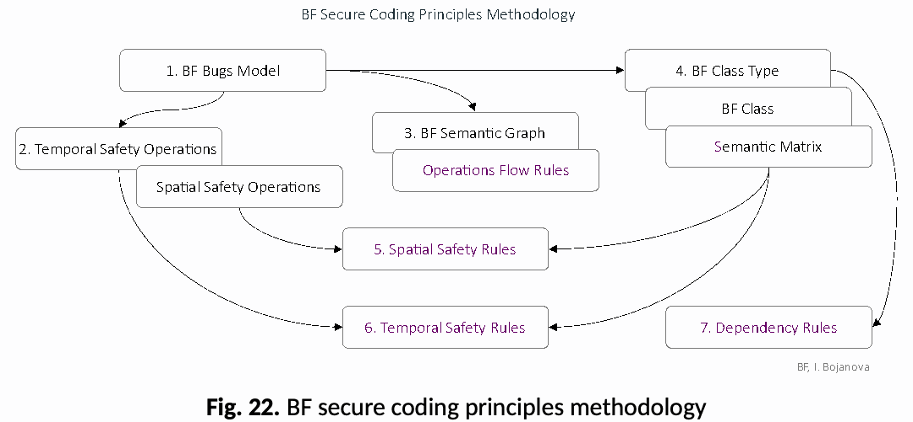
図22は、安全なコーディング原則を定義する7段階の方法を示す。BFモデル、操作フロー、クラス、空間・時間安全性の規則、依存関係を整理する。
While the BF formal language is descriptive, the secure coding principles are prescriptive against bugs and faults per operation that break specific kinds of code safety.
BF形式言語が記述的であるのに対し、セキュアコーディング原則は、特定の種類のコード安全性を損なう操作ごとのバグやフォールトに対して規範的である。
For more secure coding principles and details, refer to the forthcoming SP 800-231F, Bugs Framework: Secure Coding Principles.
さらなるセキュアコーディング原則および詳細については、今後刊行予定の SP 800-231F, Bugs Framework: Secure Coding Principles を参照されたい。
10. BF Tools
10. BFツール
The BF features generation tools that reflect the BF taxonomy, models, and formal language syntax and semantics. The BFCWE tool and the BFCVE tool facilitate the generation of formal weakness and vulnerability specifications. The BF tool guides the creation of complete BF vulnerability specifications. The related BF APIs at [1] provide BF data retrieval and specific tool functionalities.
BF は、BF の分類体系、モデル、および形式言語の構文と意味論を反映した生成ツールを備えている。BFCWE ツールと BFCVE ツールは、弱点と脆弱性の形式的な仕様の生成を支援する。BF ツールは、完全な BF 脆弱性仕様の作成を導く。[1] にある関連する BF API は、BF データの取得と特定のツール機能を提供する。
The BFDB database hosts the BF data. The BF taxonomy structure and semantics rules are organized via a relational database with graph features and via XML and JSON data interchange formats (query them via the BF API at [1]). The BFDB contains the types, names, and definitions of the BF taxons, their relationships within the taxonomy, and the BF weakness and vulnerability semantic relation and propagation matrices and operation flow graphs. The BF mashup database organizes additional data for querying BF toward the CWE, CVE, NVD, GitHub [37], KEV [6], and Exploit Prediction Scoring System (EPSS) [38].
BFDB データベースは BF のデータを格納する。BF の分類体系の構造と意味規則は、グラフ機能を備えたリレーショナルデータベース、および XML と JSON のデータ交換形式によって編成されている（[1] の BF API を介してクエリを実行できる）。BFDB には、BF タクソンの型、名前、定義、分類体系内でのタクソン間の関係、BF の弱点と脆弱性の意味関係行列と伝播行列、および操作フローグラフが含まれる。BF マッシュアップデータベースは、CWE、CVE、NVD、GitHub [37]、KEV [6]、および Exploit Prediction Scoring System (EPSS) [38] に対して BF をクエリするための追加データを編成する。
10.1. BFCWE Tool
10.1. BFCWEツール
The BFCWE tool facilitates the creation of CWE-to-BF (CWE2BF) mappings by weakness operation, error, final error, and possibly entire \(\langle \mathit{cause}, \mathit{operation} \rangle \rightarrow \mathit{consequence}\)) weakness triples [39]. It also generates BFCWE formal specifications as entries of the BFCWE security weakness types dataset and graphical representations of the CWE2BF mappings and the BFCWE specifications to enhance understanding (e.g., see [16–18, 22]).
BFCWEツールは、弱点の操作、エラー、最終エラー、および場合によっては\(\langle \mathit{cause}, \mathit{operation} \rangle \rightarrow \mathit{consequence}\))という弱点トリプル全体による、CWEからBFへのマッピング（CWE2BF）の作成を容易にする [39]。また、BFCWEセキュリティ弱点タイプデータセットのエントリとしてのBFCWE形式仕様や、理解を深めるためのCWE2BFマッピングおよびBFCWE仕様のグラフィカルな表現を生成する（例えば [16–18, 22] を参照）。
Meticulous analysis of the natural language descriptions of CWEs, relevant code examples, and descriptions of related CVEs is conducted to create CWE2BF mappings by weakness operation, error, and final error and then by detailed \(\langle \mathit{bug}, \mathit{operation} \rangle \rightarrow \mathit{error}\), \(\langle \mathit{fault}, \mathit{operation} \rangle \rightarrow \mathit{error}\), \(\langle \mathit{bug}, \mathit{operation} \rangle \rightarrow \mathit{final\ error}\), and \(\langle \mathit{fault}, \mathit{operation} \rangle \rightarrow \mathit{final\ error}\) weakness triples [40].
弱点の操作、エラー、および最終エラー別、次いで詳細な\(\langle \mathit{bug}, \mathit{operation} \rangle \rightarrow \mathit{error}\)、\(\langle \mathit{fault}, \mathit{operation} \rangle \rightarrow \mathit{error}\)、\(\langle \mathit{bug}, \mathit{operation} \rangle \rightarrow \mathit{final\ error}\)、および\(\langle \mathit{fault}, \mathit{operation} \rangle \rightarrow \mathit{final\ error}\)の弱点トリプル[40]別のCWE2BFマッピングを作成するために、CWEの自然言語記述、関連するコード例、および関連するCVEの記述の綿密な分析が行われる。
The BFCWE tool is utilized to generate the graphical representations of the CWE2BF mappings for enhanced understanding as directed graphs with parent-child CWE relationships. Examples include _INP CWE2BF [16], _MEM CWE2BF [17], and _DAT CWE2BF [18].
BFCWE ツールは、CWE2BF マッピングのグラフィカル表現を、理解を助けるために CWE の親子関係を持つ有向グラフとして生成するのに用いられる。例として、_INP CWE2BF [16]、_MEM CWE2BF [17]、_DAT CWE2BF [18] がある。
Since a specific CWE should be about a single weakness, any parts of its description that reveal possible causing weaknesses are not considered for the BFCWE specification. However, they are considered for the partial BFCVE specifications (see Sec. 11.3 and BFCVE Partial). All identified weakness triples are checked against the BF matrix of valid \(\langle \mathit{cause}, \mathit{operation} \rangle \rightarrow \mathit{consequence}\) within weakness relations, which defines part of the BF formal language semantics. The same methodology helps reveal overlaps among the CWEs, as many of them have the same BF specification — that is, the same BF weakness triple.
特定のCWEは単一の弱点に関するものであるべきであるため、原因となり得る弱点を明らかにしている記述部分は、BFCWE仕様では考慮されない。しかしながら、それらは部分的なBFCVE仕様では考慮される（Sec. 11.3およびBFCVE Partialを参照）。特定されたすべての弱点トリプルは、弱点内関係における有効な\(\langle \mathit{cause}, \mathit{operation} \rangle \rightarrow \mathit{consequence}\)のBFマトリクスと照合され、これはBF形式言語の意味論の一部を定義している。多くのCWEが同じBF仕様 — すなわち、同じBF弱点トリプル — を持つため、同じ方法論はCWE間の重複を明らかにするのにも役立つ。
The BFCWE tool is utilized to generate the formal BF specification of each weakness as an entry of the BFCWE security weakness dataset and its graphical representation. However, there could be a set of corresponding BF specifications for some CWEs. For example, the natural language descriptions, demonstrative examples, and potential mitigations for CWE-125 reveal the ⟨Overbound Pointer, Read⟩→Buffer Over-Read and ⟨Underbound Pointer, Read⟩→Buffer Over-Read possible weakness triples. Subsequently, these are the possible BF specifications for the main weakness of a CVE mapped to CWE-125. Figure 23 shows their generated graphical representation.
翻訳準備中
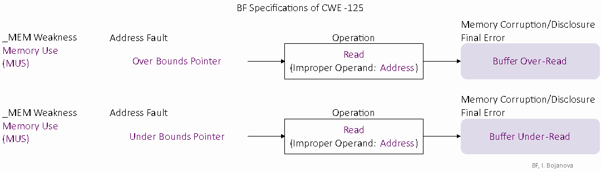
図23は、CWE-125のBF仕様を示す。メモリ使用（MUS）弱点のアドレスフォールト（範囲上限超過ポインタ、範囲下限未満ポインタ）が、Read操作を経て、バッファ過大読取り、バッファ過小読取りという最終エラーに至る。
| Class Type | Definition |
| Memory Corruption/Disclosure (_MEM) | Weaknesses that lead to memory related errors or introduce memory corruption/disclosure exploit vectors. |
| Class | Definition |
| Memory Use (MUS) | An object is initialized, read, writien, or cleared improperly. |
| Operation | Definition |
| Read | Retrieve the data value of an object from memory. |
| Cause | Definition |
| Address Fault | Theobject address inuse is wrong. |
| OverboundPointer | Holds an addressthat isabovethe upper boundary of itsobject. |
| UnderboundPointer | Holds an addressthat isbelowthelowerboundary of its object. |
| Consequence | Definition |
| Memory Corruption/Disclosure Final Error | An exploitable or undefined system behavior caused by memory addressing, allocation, use, or deallocation bugs. |
| Buffer Over-Read | Read data above the upper bound of an object. |
| BufferUnder-Read | Read data below the lower bound of an object. |
原本PDFの抜粋画像
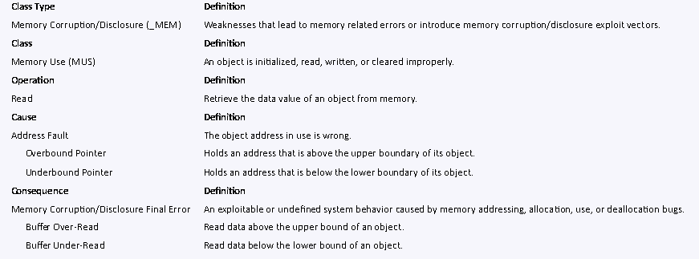
| クラスタイプ | 定義 |
| メモリ破損/情報漏洩 (_MEM) | メモリ関連のエラーを引き起こすか、メモリ破損/情報漏洩のエクスプロイトベクターをもたらす弱点。 |
| クラス | 定義 |
| メモリ使用 (MUS) | オブジェクトが不適切に初期化、読み取り、書き込み、またはクリアされる。 |
| 操作 | 定義 |
| 読み取り | メモリからオブジェクトのデータ値を取得する。 |
| 原因 | 定義 |
| アドレスフォールト | 使用中のオブジェクトアドレスが誤っている。 |
| オーバーバウンドポインタ | そのオブジェクトの上限境界より上にあるアドレスを保持している。 |
| アンダーバウンドポインタ | そのオブジェクトの下限境界より下にあるアドレスを保持している。 |
| 結果 | 定義 |
| メモリ破損/情報漏洩の最終エラー | メモリのアドレッシング、割り当て、使用、または解放のバグに起因する、悪用可能または未定義のシステム動作。 |
| バッファオーバーリード | オブジェクトの上限を超えてデータを読み取る。 |
| バッファアンダーリード | オブジェクトの下限を下回ってデータを読み取る。 |
The BFCWE tool is also useful for the generation and analysis of CWE directed graphs by other criteria. For example, see the directed graphs of hardware CWEs and their analysis in NIST IR 8517 [41].
BFCWEツールは、他の基準によるCWE有向グラフの生成および分析にも有用である。例えば、NIST IR 8517 [41]におけるハードウェアCWEの有向グラフとその分析を参照されたい。
For more details, refer to the forthcoming SP 800-231G, Bugs Framework: Tools and APIs.
詳細については、近日刊行予定のSP 800-231G、Bugs Framework: Tools and APIsを参照されたい。
10.2. BFCVE Tool
10.2. BFCVEツール
The BFCVETool facilitates the creation of CVE-to-BF (CVE2BF) mappings by final error and possibly entire \(\langle \mathit{bug/fault}, \mathit{operation} \rangle \rightarrow \mathit{final\ error}\) weakness triple. It also generates possible chains of weaknesses for a vulnerability (e.g., a CVE) by an identified failure, final error, or entire final weakness; generates possible BFCVE formal specifications and their graphical representations; and identifies CWEs for NVD assignment [42]. Code analysis and the BF graphical user interface (GUI) functionality can be used to identify and complete the unique unambiguous BF vulnerability specification.
BFCVEToolは、最終エラー、および場合によっては完全な\(\langle \mathit{bug/fault}, \mathit{operation} \rangle \rightarrow \mathit{final\ error}\)の弱点トリプルによるCVE-to-BF (CVE2BF) マッピングの作成を支援する。また、特定された障害、最終エラー、または完全な最終弱点に基づいて、脆弱性（例：CVE）に対する可能性のある弱点の連鎖を生成し、可能性のあるBFCVE形式仕様とそのグラフィカル表現を生成し、NVDへの割り当てのためのCWEを特定する [42]。コード分析およびBFのグラフィカルユーザーインターフェース（GUI）機能を使用して、一意で曖昧さのないBF脆弱性仕様を特定し、完成させることができる。
The BF relational database, the NVD Representational State Transfer Application Programming Interface (REST API), and the GitHub REST API are utilized to extract CVEs with assigned CWEs for which Code with Fix is available. For example, as of June 20, 2024, there are 5 162 CVEs that map to BF _INP [1, 16] weakness triples by CWE, 4 484 CVEs that map to BF -MEM [1, 17], and 629 CVEs that map to BF _DAT [1, 18] for which GitHub diffs are available via the NVD. Other repositories may also provide fix commits and even the code of vulnerable functions (e.g., DiverseVul [43]).
BFリレーショナルデータベース、NVDのRepresentational State Transfer API（REST API）、GitHub REST APIを利用して、修正コード（Code with Fix）が入手可能な、CWEが割り当てられたCVEを抽出する。例えば2024年6月20日時点で、NVD経由でGitHubの差分を入手できるCVEのうち、CWEによってBF _INP [1, 16]の弱点トリプルに対応付けられたものは5,162件、BF -MEM [1, 17]に対応するものは4,484件、BF _DAT [1, 18]に対応するものは629件ある。他のリポジトリから修正コミットや脆弱な関数のコードを取得できる場合もある（例：DiverseVul [43]）。
Information on the failure and the final weakness is gained from CVE reports, CVE descriptions, and CWE2BF weakness triple mappings if a CWE is assigned by the NVD. The BFCVE tool utilizes the BFDB relational database and the NVD REST API to extract the CWE2BF triples for that CVE. It then generates CVE2BF mappings by possible final error or final weakness and failure. For a specific CVE, the BFCVE tool applies the BF causation and propagation rules (i.e., the BF formal language syntax and semantics) to go backward from the failure through the final weakness to generate all possible BF chains of weaknesses for that specific CVE independently of whether the CVE Code with Fix is available. Going backward from the failure, the BFCVE tool builds a connected acyclic undirected graph (i.e., a tree whose root is the failure) of all possible weakness chains with type-based backward \(\mathit{fault\ type} \curvearrowleft \mathit{error\ type}\) match and \(\mathit{fault\ value} \curvearrowleft \mathit{error\ value}\) propagation or — for weaknesses of the same BF class type — direct match. The chains undergo scrutiny to ensure further alignment with the BF formal language semantics, the causation matrices of meaningful \(\langle \mathit{cause}, \mathit{operation} \rangle \rightarrow \mathit{consequence}\) within weakness relations, the graphs of meaningful \((\mathit{operation}_1, \ldots, \mathit{operation}_n)\) bug or fault state paths, and the matrices of meaningful \(\mathit{consequence} \curvearrowright \mathit{cause}\) between weaknesses propagations. The identified failure and final weakness triple dramatically reduce the number of generated possible paths in the acyclic graph. This is also a good starting point for specifying vulnerabilities that are not recorded in the CVE.
障害（failure）および最終弱点に関する情報は、NVDによってCWEが割り当てられている場合、CVEレポート、CVEの記述、およびCWE2BF弱点トリプルマッピングから得られる。BFCVEツールは、BFDBリレーショナルデータベースおよびNVD REST APIを利用して、そのCVEに対応するCWE2BFトリプルを抽出する。その後、考えられる最終エラーまたは最終弱点と障害によってCVE2BFマッピングを生成する。特定のCVEについて、BFCVEツールはBF因果関係および伝播規則（すなわちBF形式言語の構文と意味論）を適用し、CVEのCode with Fixが利用可能であるかどうかにかかわらず、障害から最終弱点を経て後方に遡ることで、その特定のCVEについて考えられるすべてのBF弱点チェーンを生成する。障害から後方に遡ることで、BFCVEツールは、型に基づく後方の\(\mathit{fault\ type} \curvearrowleft \mathit{error\ type}\)一致および\(\mathit{fault\ value} \curvearrowleft \mathit{error\ value}\)伝播、あるいは — 同じBFクラス型の弱点については — 直接一致を伴う、考えられるすべての弱点チェーンの連結非巡回無向グラフ（すなわち、根が障害である木）を構築する。これらのチェーンは、BF形式言語の意味論、弱点内関係の有意な\(\langle \mathit{cause}, \mathit{operation} \rangle \rightarrow \mathit{consequence}\)の因果関係行列、有意な\((\mathit{operation}_1, \ldots, \mathit{operation}_n)\)バグまたはフォールト状態パスのグラフ、および弱点間伝播の有意な\(\mathit{consequence} \curvearrowright \mathit{cause}\)の行列とのさらなる整合性を確保するために精査を受ける。特定された障害と最終弱点トリプルは、非巡回グラフ内で生成される可能なパスの数を劇的に削減する。これは、CVEに記録されていない脆弱性を仕様化するための良い出発点でもある。
The CVE Code with Fix can then be examined by security researchers or utilizing AI and compared with the generated chains of weakness triples to pinpoint the unique unambiguous BF vulnerability specification. For that, the BF tool functionality and automated code analysis — including via large language models (LLMs) — can be used.
その後、セキュリティ研究者によって、またはAIを利用してCVEのCode with Fixを調査し、生成された弱点トリプルのチェーンと比較することで、一意で曖昧さのないBF脆弱性仕様を特定することができる。そのためには、BFツールの機能や、——大規模言語モデル（LLM）経由を含む——自動コード解析を使用することができる。
For example, the main vulnerability for CVE-2014-0160 Heartbleed (see Sec. 7.1) is mapped to CWE-125 in the NVD, and the CWE2BF mappings for CWE-125 restrict the final weakness options for Heartbleed to \(\langle \mathit{Overbound\ Pointer}, \mathit{Read} \rangle \rightarrow \mathit{Buffer\ Over\text{-}Read}\) and \(\langle \mathit{Underbound\ Pointer}, \mathit{Read} \rangle \rightarrow \mathit{Buffer\ Under\text{-}Read}\) (see Sec. 10.1). However, the CVE-2014-0160 description reveals the word over, which indicates that CWE-125 is too abstract for it and eliminates the second final weakness option. In addition, as Heartbleed leads to information exposure, the last part of the BF weaknesses chain is \(\langle \mathit{Overbound\ Pointer}, \mathit{Read} \rangle \rightarrow \mathit{Buffer\ Over\text{-}Read} \curvearrowright \mathit{IEX}\). The Read operation uniquely identifies the weakness as an instance of the BF MUS class, as BF classes do not overlap by operation.
例えば、CVE-2014-0160 Heartbleed（Sec. 7.1参照）の主な脆弱性はNVDにおいてCWE-125にマッピングされており、CWE-125に対するCWE2BFマッピングは、Heartbleedの最終弱点の選択肢を\(\langle \mathit{Overbound\ Pointer}, \mathit{Read} \rangle \rightarrow \mathit{Buffer\ Over\text{-}Read}\)および\(\langle \mathit{Underbound\ Pointer}, \mathit{Read} \rangle \rightarrow \mathit{Buffer\ Under\text{-}Read}\)（Sec. 10.1参照）に限定する。しかし、CVE-2014-0160の記述にはoverという単語が含まれており、これはCWE-125がそれにとって抽象的すぎることを示し、2番目の最終弱点の選択肢を排除する。さらに、Heartbleedは情報漏えいにつながるため、BF弱点チェーンの最後の部分は\(\langle \mathit{Overbound\ Pointer}, \mathit{Read} \rangle \rightarrow \mathit{Buffer\ Over\text{-}Read} \curvearrowright \mathit{IEX}\)となる。BFクラスは操作によって重複しないため、Read操作はこの弱点をBF MUSクラスのインスタンスとして一意に特定する。
Going backward from Overbound Pointer via the BF causation and propagation rules, the BFCVE tool generates a tree of suggested weakness chains for Heartbleed (see Fig. 24). The failure is the root, the final weakness is the first node, and a bug weakness is the last node of each path. The only options for the weakness causing the final weakness are \(\langle \mathit{Wrong\ Index}, \mathit{Reposition} \rangle \rightarrow \mathit{Overbound\ Pointer}\) and \(\langle \mathit{Wrong\ Size}, \mathit{Reposition} \rangle \rightarrow \mathit{Overbound\ Pointer}\). Both have the same options for causing chains, only two of which do not start with a bug, though the preceding weakness options start with a bug. Exhausting these few options via deep code analysis or the use of LLMs would confirm that the unique unambiguous chain for Heartbleed is \(\langle \mathit{Missing\ Code}, \mathit{Verify} \rangle \rightarrow \mathit{Inconsistent\ Value} \curvearrowright \langle \mathit{Wrong\ Size}, \mathit{Reposition} \rangle \rightarrow \mathit{Overbound\ Pointer} \curvearrowright \langle \mathit{Overbound\ Pointer}, \mathit{Read} \rangle \rightarrow \mathit{Buffer\ Over\text{-}Read} \curvearrowright \mathit{IEX}\).
BF因果関係および伝播規則を介してOverbound Pointerから後方に遡ることで、BFCVEツールはHeartbleedに対する提案弱点チェーンの木を生成する（Fig. 24参照）。障害が根であり、最終弱点が最初のノード、そしてバグ弱点が各パスの最後のノードとなる。最終弱点の原因となる弱点の選択肢は、\(\langle \mathit{Wrong\ Index}, \mathit{Reposition} \rangle \rightarrow \mathit{Overbound\ Pointer}\)および\(\langle \mathit{Wrong\ Size}, \mathit{Reposition} \rangle \rightarrow \mathit{Overbound\ Pointer}\)のみである。両者は原因チェーンについて同じ選択肢を有しており、そのうちバグから始まらないものは2つのみであるが、先行する弱点の選択肢はバグから始まる。詳細なコード解析またはLLMの使用によってこれらわずかな選択肢を網羅的に調べることで、Heartbleedに対する一意で曖昧さのないチェーンが\(\langle \mathit{Missing\ Code}, \mathit{Verify} \rangle \rightarrow \mathit{Inconsistent\ Value} \curvearrowright \langle \mathit{Wrong\ Size}, \mathit{Reposition} \rangle \rightarrow \mathit{Overbound\ Pointer} \curvearrowright \langle \mathit{Overbound\ Pointer}, \mathit{Read} \rangle \rightarrow \mathit{Buffer\ Over\text{-}Read} \curvearrowright \mathit{IEX}\)であることが確認される。
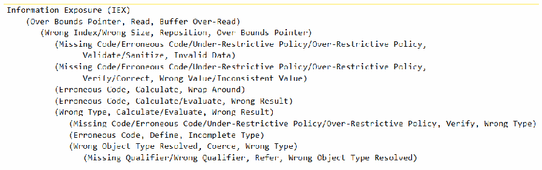
Heartbleedの情報漏えい（IEX）に至る、ポインタ境界やバッファ読み取りなどの弱点連鎖を階層的に示した図
Fig. 24. Generated BF weakness chains for Heartbleed
図 24. Heartbleed用に生成されたBF弱点連鎖
The BFCVE tool generates graphical representations of the BFCVE formal specifications to enhance understanding (see Fig. 21). Related BF tools functionality is the generation of the webpages for the BF class taxonomies (e.g., BF MUS) and the BFCVE specifications (e.g., BF CVE-2014-0160) of the BF website [1].
BFCVEツールは、理解を深めるためBFCVE形式仕様を図式化する（図21参照）。関連するBFツールの機能として、BFウェブサイト[1]上のBFクラス分類体系（例：BF MUS）およびBFCVE仕様（例：BF CVE-2014-0160）のウェブページ生成がある。
For more details, refer to the forthcoming SP 800-231G, Bugs Framework: Tools and APIs.
詳細については、近日刊行予定のSP 800-231G『Bugs Framework: Tools and APIs』を参照されたい。
10.3. BF GUI Tool
10.3. BF GUIツール
The BF tool is a GUI application that works with both the BF relational database and the BF in XML or JSON format; the latter is useful when the database is unavailable [44]. It allows users to create a new BF CVE specification, save it as a machine-readable .bfcve file, and open and browse previously created .bfcve specifications [22].
BFツールは、BFリレーショナルデータベースとXMLまたはJSON形式のBFの両方を扱えるGUIアプリケーションである。後者はデータベースを利用できない場合に便利である[44]。ユーザーは新しいBF CVE仕様を作成し、機械可読な.bfcveファイルとして保存し、以前に作成した.bfcve仕様を開いて閲覧できる[22]。
The BF tool (see Fig. 25) guides the specification of a security vulnerability as a chain of underlying weaknesses. A security bug causes the first weakness, which leads to an error. This error becomes the cause (i.e., the fault) of the next weakness and propagates through subsequent weaknesses until a final error is reached, enabling a security failure. The causation within a weakness is by a meaningful \(\langle \mathit{cause}, \mathit{operation} \rangle \rightarrow \mathit{consequence}\) relation. The causation between weaknesses is by error type to fault type match and operation flow or \(\mathit{error} \curvearrowright \mathit{fault}\) by value propagation.
BFツール（図 25 を参照）は、セキュリティ脆弱性を根底にある弱点の連鎖として仕様化することをガイドする。セキュリティバグが最初の弱点を引き起こし、それがエラーへとつながる。このエラーが次の弱点の原因（すなわちフォールト）となり、最終エラーに達するまで後続の弱点を通じて伝播して、セキュリティ障害を可能にする。弱点内の因果関係は、意味のある\(\langle \mathit{cause}, \mathit{operation} \rangle \rightarrow \mathit{consequence}\)関係によるものである。弱点間の因果関係は、error typeからfault typeへの一致および操作フロー、またはvalueの伝播による\(\mathit{error} \curvearrowright \mathit{fault}\)によるものである。
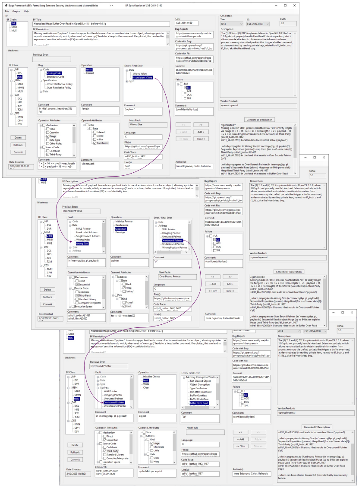
BF GUIツールの画面。弱点分類、名称、説明、原因、操作などの属性を編集するフォーム
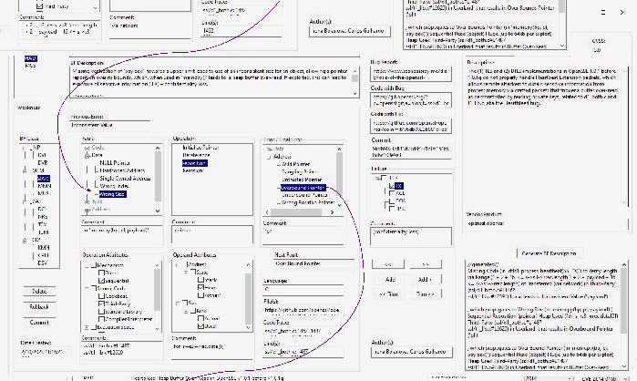
BF GUIツールの画面。弱点クラスと操作・属性の分類ツリーを編集するフォーム
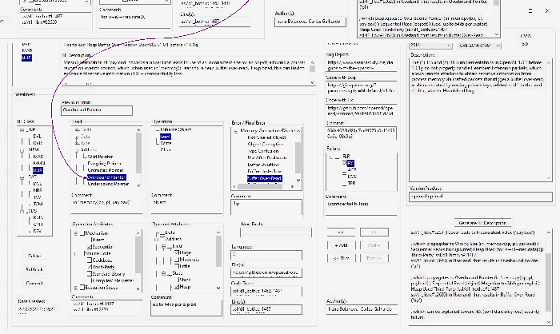
BF GUIツールの画面。弱点クラスの最終エラー、原因、説明などを編集するフォーム
Fig. 25. BF GUI tool
図 25. BF GUIツール
If a CVE is being specified, the user can select CVE Year and CVE ID in the CVE Details GroupBox to display its description, vendor, and product from the CVE repository and its CVSS [10, 11] severity score from the NVD. To create a BFCVE specification of that CVE, the user is guided to define an initial weakness, possible propagation weaknesses, and a final weakness leading to a failure. If a vulnerability has only one underlying weakness, it would be both the initial and final weakness.
CVEを仕様化する場合、ユーザーはCVE Details GroupBoxでCVE YearとCVE IDを選択し、CVEリポジトリから説明、ベンダー、製品を、NVDからCVSS [10, 11]の深刻度スコアを表示できる。そのCVEのBFCVE仕様を作成するには、初期弱点、伝播し得る弱点、および障害につながる最終弱点を定義するよう案内される。脆弱性の根底にある弱点が1つだけの場合、それが初期弱点と最終弱点の両方になる。
To start defining a weakness, the user has to select a BF weakness class from the BF Class TreeView in the Weakness GroupBox container, where the classes are grouped by BF class types as parent nodes. The selection of a class populates the five TreeView controls in the Weakness GroupBox container: Bug/Fault, Operand, Error/Final Error, Operation Attributes, and Operand Attributes. To specify the weakness, the user has to select child nodes from the five TreeView controls and enter comments in the text boxes beneath them.
弱点の定義を始めるには、ユーザーはWeakness GroupBoxコンテナ内のBF Class TreeViewからBF弱点クラスを選択する必要がある。このTreeViewでは、クラスがBFクラスタイプごとに親ノードとしてグループ化されている。クラスを選択すると、Weakness GroupBoxコンテナ内の5つのTreeViewコントロール（Bug/Fault、Operand、Error/Final Error、Operation Attributes、Operand Attributes）に内容が設定される。弱点を指定するには、ユーザーは5つのTreeViewコントロールから子ノードを選択し、その下のテキストボックスにコメントを入力する必要がある。
The BF tool can enforce that the initial weakness starts with a bug and the rest of the weaknesses start with a fault. However, this is not necessary for partial specifications or if a vulnerability starts with a hardware defect-induced fault. The Bug/Fault label changes to Bug when the initial weakness is viewed and to Fault when a propagation or final weakness is viewed. In the case of a bug, the child nodes are only allowed under the Code and Specification nodes. In the case of a fault, the child nodes are only allowed under the Data, Type, and Address nodes. Tooltips with term definitions are displayed over all TreeView nodes. The BF tool also enforces that the weakness with the final error consequence is the final weakness leading to a failure.
BFツールは、初期弱点がバグで始まり、残りの弱点がフォールトで始まるように強制できる。ただし、部分仕様の場合や、脆弱性がハードウェアの欠陥に起因するフォールトで始まる場合には、これは必要ない。初期弱点を表示するとBug/FaultラベルはBugに変わり、伝播弱点または最終弱点を表示するとFaultに変わる。バグの場合、子ノードはCodeノードとSpecificationノードの下にのみ許可される。フォールトの場合、子ノードはData、Type、Addressノードの下にのみ許可される。すべてのTreeViewノード上に、用語定義のツールチップが表示される。BFツールはまた、最終エラーを結果とする弱点が、障害につながる最終弱点であることも強制する。
Once a weakness is specified, the user can proceed via the >> button and create the next weakness of the vulnerability chain. Weakness chaining is restricted by the error-to-fault by-type match rule, which — to a large extent — also restricts meaningful operation flow, as the BF classes are developed to adhere to the BF bugs models that are specific to their BF class types. The Generate BF Description button displays a draft BF description based on the selected values from the five TreeView controls and Comment text boxes.
弱点を指定すると、ユーザーは>>ボタンで次に進み、脆弱性チェーンの次の弱点を作成できる。弱点の連鎖は、エラーからフォールトへの型による対応規則によって制約される。この規則は、BFクラスが各BFクラスタイプに固有のBFバグモデルに従うよう開発されていることから、意味のある操作フローも大幅に制約する。Generate BF Descriptionボタンは、5つのTreeViewコントロールで選択した値とCommentテキストボックスに基づいて、BF記述のドラフトを表示する。
Figure 26 presents the BF specification of the main vulnerability chain of Heartbleed in XML format generated by the BF tool. In addition to the XML attributes that relate to the BF Taxonomy, the CVE-2014-0160.bfcve also contains generated natural language descriptions, programming language, links to reports, code with bugs, code with fixes, commit IDs, authors, and code locations (i.e., lines) per weakness. For more details, see BF CVE-2014-0160 at [1].
図26は、BFツールが生成したHeartbleedの主要な脆弱性チェーンのBF仕様をXML形式で示す。BF分類体系に関するXML属性に加え、CVE-2014-0160.bfcveには、弱点ごとに、生成された自然言語の説明、プログラミング言語、報告書へのリンク、バグを含むコード、修正を含むコード、コミットID、作成者、コード位置（行）も含まれる。詳細は[1]のBF CVE-2014-0160を参照されたい。
The BF tool demonstrates how the BF taxonomy and causation and propagation rules tie together into the strict BF formal language. It uses the BFCVE tool functionality to generate graphical representations of the BF formal specifications to enhance understanding. For example, refer to the BFCVE-2014-0160 and related BF taxon definitions at [1].
BFツールは、BF分類体系、因果関係規則、伝播規則が厳密なBF形式言語としてどのように結び付くかを示す。また、理解を深めるため、BFCVEツールの機能を使ってBF形式仕様の図式表現を生成する。例えば、[1]のBFCVE-2014-0160と関連するBFタキソンの定義を参照されたい。
For more details, refer to the forthcoming SP 800-231G, Bugs Framework: Tools and APIs.
詳細は、刊行予定のSP 800-231G『Bugs Framework: Tools and APIs』を参照されたい。
If a CVE is being specified, the user can select CVE Year and CVE ID in the CVE Details GroupBox to display its description, vendor, and product from the CVE repository and its CVSS [10, 11] severity score from the NVD. To create a BFCVE specification of that CVE, the user is guided to define an initial weakness, possible propagation weaknesses, and a final weakness leading to a failure. If a vulnerability has only one underlying weakness, it would be both the initial and final weakness.
原文のみ
To start defining a weakness, the user has to select a BF weakness class from the BF Class TreeView in the Weakness GroupBox container, where the classes are grouped by BF class types as parent nodes. The selection of a class populates the five TreeView controls in the Weakness GroupBox container: Bug/Fault, Operand, Error/Final Error, Operation Attributes, and Operand Attributes. To specify the weakness, the user has to select child nodes from the five TreeView controls and enter comments in the text boxes beneath them.
原文のみ
The BF tool can enforce that the initial weakness starts with a bug and the rest of the weaknesses start with a fault. However, this is not necessary for partial specifications or if a vulnerability starts with a hardware defect-induced fault. The Bug/Fault label changes to Bug when the initial weakness is viewed and to Fault when the propagation or final weakness is viewed. In the case of a bug, the child nodes are only allowed under the Code and Specification nodes. In the case of a fault, the child nodes are only allowed under the Data, Type, and Address nodes. Tooltips with term definitions are displayed over all TreeView nodes. The BF tool also enforces that the weakness with the final error consequence is the final weakness leading to a failure.
原文のみ
Once a weakness is specified, the user can proceed via the >> button and create the next weakness of the vulnerability chain. Weakness chaining is restricted by the error-to-fault by type match rule, which — to a large extent — also restricts to meaningful operation flow, as the BF classes are developed to adhere to the BF bugs models that are specific to their BF class types. The Generate BF Description button displays a draft BF description based on the selected values from the five TreeView controls and Comment text boxes.
原文のみ
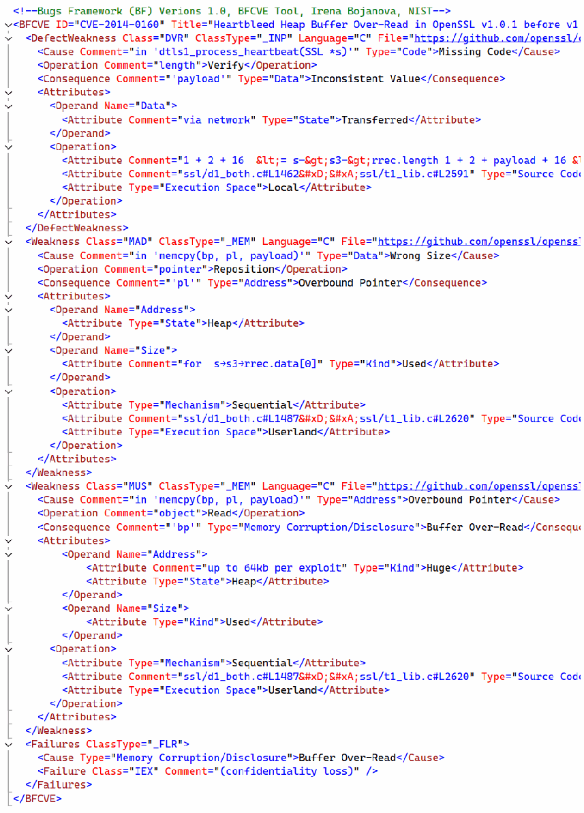
CVE-2014-0160（Heartbleed）を、原因、検証操作、影響および関連するメモリ弱点とともに記述したBFのXML例
Fig. 26. BF Heartbleed in XML
図26. XML形式のBF Heartbleed
11. BF Datasets and Systems
11. BFデータセットおよびシステム
The BF formalism enables systematic comprehensive labeling of common weakness types (including CWEs) and publicly disclosed vulnerabilities (including CVEs). The BF tools and APIs enable the generation of weakness and vulnerability specifications.
BF形式体系により、共通弱点タイプ（CWEを含む）および公開された脆弱性（CVEを含む）の体系的かつ包括的なラベル付けが可能になる。BFのツールおよびAPIは、弱点および脆弱性の仕様の生成を可能にする。
As of June 20, 2024, 31 % of the CWEs and 64 % of the CVEs labeled by the NVD with CWEs map to BF INP, MEM, and DAT classes. These provide a solid base for the creation of comprehensively labeled BFCWE weakness and BFCVE vulnerability datasets.
2024年6月20日現在、CWEの31 %およびNVDによってCWEがラベル付けされたCVEの64 %が、BFのINP、MEM、およびDATクラスにマッピングされている。これらは、包括的にラベル付けされたBFCWE弱点データセットおよびBFCVE脆弱性データセットを作成するための確固たる基盤を提供する。
The BF and the continuous development of BFCWE and BFCVE datasets would allow for multidimensional representations of vulnerabilities in contrast to the one-dimensional representation provided by the CVE enumeration [8].
BF、ならびにBFCWEおよびBFCVEデータセットの継続的な開発により、CVE列挙[8]によって提供される一次元的な表現とは対照的に、脆弱性の多次元的な表現が可能になるであろう。
11.1. BFCWE Dataset
11.1. BFCWEデータセット
There are 938 CWEs [3] as of June 20, 2024. Of those, 157 map to the BF _INP [1, 16] class type; 60 map to BF _MEM [1, 17]; and 72 map to BF _DAT [1, 18]. These 289 unique CWEs form 31 % (see Fig. 27) of the CWE repository and provide the basis for the systematic creation of a comprehensively labeled BFCWE weakness dataset. Most of them represent the most dangerous weakness types by BF final error: Injection and Memory Corruption/Disclosure [45].
2024年6月20日現在、938件のCWE[3]が存在する。そのうち157件がBF _INP [1, 16]クラスタイプに、60件がBF _MEM [1, 17]に、72件がBF _DAT [1, 18]にマッピングされている。これら289件の一意なCWEはCWEリポジトリの31 %（Fig. 27を参照）を占め、包括的にラベル付けされたBFCWE弱点データセットの体系的な作成の基礎を提供する。それらの大半は、BFの最終エラーによる最も危険な弱点タイプであるインジェクションおよびメモリ破損／開示[45]を表している。
CWEs by BF Class Type
BFクラスタイプ別のCWE
157(17%)
157(17%)
60(6%)
60 (6%)
72(8%)
72 (8%)
649(69%)
649(69%)
BF _INP BF _MEM BF _DAT Others Fig. 27. CWEs by BF class types
BF _INP BF _MEM BF _DAT その他 図 27. BFクラスタイプ別のCWE
The NVD uses the 130 “most commonly seen weaknesses” from CWE View-1003 [46] to label CVEs but may also list other CWEs assigned by third-party contributors. The BFCWE dataset may cover software, firmware, or hardware weakness types that are not listed in the CWE.
NVDは、CVEのラベル付けにCWE View-1003 [46] の130の“最も一般的に見られる弱点”を使用しているが、サードパーティの貢献者によって割り当てられた他のCWEを記載することもある。BFCWEデータセットは、CWEに記載されていないソフトウェア、ファームウェア、またはハードウェアの弱点タイプをカバーすることがある。
The methodology for the creation of a BFCWE dataset that utilizes the BF formal language involves the following four steps:
BF形式言語を利用してBFCWEデータセットを作成する方法論は、次の4つの手順から成る。
1.CWEs: Identify CWEs and other weakness types that correspond to a specific software, firmware, or hardware execution phase.
1.CWE：特定のソフトウェア、ファームウェア、またはハードウェアの実行フェーズに対応するCWEおよびその他の弱点タイプを特定する。
2. CWE2BF Mappings: Create CWE2BF mappings by BF operation, error, final error, and detailed \(\langle \mathit{bug/fault}, \mathit{operation} \rangle \rightarrow \mathit{error/final\ error}\) weakness triples [16–18, 22].
2. CWE2BFマッピング：BF操作、エラー、最終エラー、および詳細な\(\langle \mathit{bug/fault}, \mathit{operation} \rangle \rightarrow \mathit{error/final\ error}\)弱点トリプル [16–18, 22] によるCWE2BFマッピングを作成する。
3.BF Specifications: Generate BFCWE formal specifications as entries of the BFCWE security weakness types dataset.
3.BF仕様：BFCWE弱点タイプデータセットのエントリとして、BFCWE形式仕様を生成する。
4.4. Graphical Representations: Generate BFCWE graphical representations to enhance understanding of the CWE2BF mappings by operation, error, final error, and complete weakness triples with parent-child CWE relations.
4.4. 図式表現：操作、エラー、最終エラー、および親子関係にあるCWEを伴う完全な弱点トリプルによるCWE2BF対応付けについて理解を深めるため、BFCWEの図式表現を生成する。
As the BFCWE specifications are essentially partial BFCVE specifications, the matrix and dataset are also continuously enriched by newly developed BF specifications of CVEs and other reported security vulnerabilities. All developed BFCWE specifications are added to the comprehensively labeled BFCWE dataset (query it via the BFCWE API at [1]).
BFCWE仕様は本質的に部分的なBFCVE仕様であるため、マトリクスおよびデータセットは、CVEや報告されたその他のセキュリティ脆弱性について新たに開発されたBF仕様によっても継続的に拡充されている。開発されたすべてのBFCWE仕様は、包括的にラベル付けされたBFCWEデータセットに追加される（[1]のBFCWE API経由で照会可能）。
The BFCWE dataset augments the NVD (see [47]) and the CWE via formal BF specifications of common weaknesses as BF weakness triples and severity-related attributes. However, the BF has the expressive power to clearly describe any security weakness, not only the types listed in the CWE.
BFCWEデータセットは、BF弱点トリプルおよび深刻度関連属性としての共通の弱点の形式的なBF仕様を通じて、NVD（[47]を参照）およびCWEを拡充する。しかしながら、BFにはCWEにリストされているタイプだけでなく、あらゆるセキュリティ弱点を明確に記述する表現力がある。
11.2. BFCVE Dataset
11.2. BFCVEデータセット
There are over 180 472 CVEs labeled with CWEs by the NVD [5] as of June 20, 2024. Of those, 68 513 map to the BF _INP [1, 16] class type by final error, 46 231 map to MEM [1, 17], and 3 631 map to _DAT [1, 18] (see Fig. 28). These 118 375 unique CVEs represent 64 % of the CVEs labeled with CWEs and provide the basis for the systematic creation of a comprehensively labeled BFCVE vulnerability dataset. Most of them relate to the most dangerous weakness types by BF final error: Injection and Memory Corruption/Disclosure [45].
2024年6月20日時点で、NVD [5]にはCWEが付与されたCVEが180,472件以上ある。そのうち、最終エラーに基づいてBF _INP [1, 16]クラスに対応するものは68,513件、MEM [1, 17]は46,231件、_DAT [1, 18]は3,631件である（図28参照）。この一意なCVE 118,375件は、CWEが付与されたCVEの64%を占め、包括的にラベル付けされたBFCVE脆弱性データセットを体系的に作成する基礎となる。その大半は、BFの最終エラーで最も危険な弱点タイプであるInjectionおよびMemory Corruption/Disclosureに関係する[45]。
The methodology for the creation of a BFCVE dataset that utilizes the BF formal language involves the following nine steps:
BF形式言語を利用してBFCVEデータセットを作成する方法論は、次の9つの手順から成る。
1.1. CVEs with Code: Query the NVD and other vulnerability repositories for CVEs and other vulnerabilities with available GitHub commits — that is, CVEs for which Code with Fix is available.
1.1. コード付きCVE：NVDやその他の脆弱性リポジトリに問い合わせ、GitHubコミットを取得できるCVEおよびその他の脆弱性、すなわちCode with Fixが利用可能なCVEを検索する。
2.Failure Mapping: Analyze each CVE to determine the reported failures, and map them to BF Failure classes.
2.障害マッピング: 各CVEを分析して報告された障害を特定し、それらをBF Failureクラスにマッピングする。
Fig. 28. CVEs by BF class types
図 28. BF クラス型別の CVE
•3. Final Error Mapping: Analyze each CVE to determine the reported sink — in some cases, it is also the root cause or wrongly reported as such — and map it to a BF Final Error consequence.
•3. 最終エラーのマッピング：各 CVE を分析して報告されたシンクを特定し（場合によっては、シンクが根本原因でもあるか、誤って根本原因として報告されている）、それを BF の Final Error の結果に対応付ける。
•4. CVE2BF Mappings: Utilize steps from the methodology for the creation of BFCWE, and create CVE2BF mappings by final weakness and failure for CVEs with assigned CWEs for which Code with Fix is available.
•4. CVE2BF マッピング：BFCWE 作成の方法論の手順を利用し、Code with Fix が入手可能で CWE が割り当てられている CVE について、最終の弱点と障害ごとに CVE2BF マッピングを作成する。
5. Backward State Tree: Generate possible backward chains of weaknesses for a vulnerability by its identified failure and some or all of the elements of the final \(\langle \mathit{fault}, \mathit{operation} \rangle \rightarrow \mathit{final\ error}\) weakness or — in the case of a one-weakness vulnerability — \(\langle \mathit{bug}, \mathit{operation} \rangle \rightarrow \mathit{final\ error}\) weakness (see Sec. 3.4).
5. 後方状態ツリー: 特定された障害と、最終的な\(\langle \mathit{fault}, \mathit{operation} \rangle \rightarrow \mathit{final\ error}\)弱点の要素の一部またはすべて、あるいは — 単一弱点の脆弱性の場合 — \(\langle \mathit{bug}, \mathit{operation} \rangle \rightarrow \mathit{final\ error}\)弱点の要素の一部またはすべてに基づいて、脆弱性に対して考えられる弱点の後方連鎖を生成する（Sec. 3.4を参照）。
•5. Backward State Tree: Generate possible backward chains of weaknesses for a vulnerability by its identified failure and some or all of the elements of the final ⟨fault, operation⟩→final error weakness or — in the case of a one-weakness vulnerability — ⟨bug, operation⟩→final error weakness (see Sec. 3.4).
•5. 後方状態ツリー：脆弱性について、特定された障害と、最終の ⟨fault, operation⟩→final error 弱点、または一つの弱点からなる脆弱性の場合は ⟨bug, operation⟩→final error 弱点の要素の一部またはすべてに基づいて、考えられる弱点の後方チェーンを生成する（3.4 節を参照）。
•6. Bug or Fault Location: Identify where in the code (i.e., file and lines) the resolved bug or a mitigated fault happened. Comparison of available Code with Bug and Code with Fix commits would help identify these locations. Improper operation flow by BF bugs models would reveal missing operations (i.e., Missing Code bugs).
•6. バグまたはフォールトの位置：解決されたバグまたは緩和されたフォールトがコード内のどこ（すなわちファイルと行）で発生したかを特定する。入手可能な Code with Bug と Code with Fix のコミットを比較することは、これらの位置の特定に役立つ。BF のバグモデルに照らして不適切な操作フローを調べれば、欠落している操作（すなわち Missing Code バグ）が明らかになる。
•7. BF Specifications: Conduct deep code analysis — including via LLMs — to filter the generated chains, and use the BF formal language to complete the unambiguous BF vulnerability specifications.
•7. BF仕様：LLMの利用を含む詳細なコード解析を行って生成されたチェーンを絞り込み、BF形式言語を用いて曖昧さのないBF脆弱性仕様を完成させる。
•8. Graphical Representations: Generate BFCVE graphical representations to enhance understanding of the BF vulnerability specifications as entries for the BFCVE security vulnerability dataset.
•8. グラフ表現：BFCVEセキュリティ脆弱性データセットのエントリとして、BF脆弱性仕様の理解を助けるBFCVEグラフ表現を生成する。
•9. CWE Assignments: Identify, refine, and recommend CWEs for NVD assignment. Although this step may seem illogical since a BF specification already provides comprehensive information, it may be useful when comparing CWE-based testing tool reports or if a more appropriate CWE is identified.
•9. CWEの割り当て：NVDへの割り当てに向けてCWEを特定し、精緻化し、推奨する。BF仕様がすでに包括的な情報を提供している以上、このステップは不合理に見えるかもしれないが、CWEに基づくテストツールの報告を比較する場合や、より適切なCWEが特定された場合に有用となりうる。
A key part of the BFCVE dataset generation is the use of preliminary sets of partial BF specifications of CVEs for which Code with Fix is available. These CVE sets are generated by querying the NVD and specific GitHub repositories toward the BFDB. For example, Fig. 29 shows a SQL query for vulnerabilities related to the BF _MEM class type [1, 17] toward a repository with fix commits that are extracted via the GitHub REST API. The query also identifies the possible BF chains of weaknesses for each vulnerability. Security experts and LLMs can then conduct deep code analysis to create the complete BF vulnerability specifications.
BFCVEデータセットの生成では、Code with Fixを利用できるCVEについて、部分的なBF仕様の暫定セットを用いることが重要である。これらのCVEセットは、BFDBに対してNVDおよび特定のGitHubリポジトリを照会することで生成される。例えば図29は、GitHub REST APIで取得した修正コミットを含むリポジトリに対して、BF _MEMクラス[1, 17]に関連する脆弱性を検索するSQLクエリを示している。このクエリは、各脆弱性について可能性のあるBF弱点チェーンも特定する。その後、セキュリティ専門家やLLMが詳細なコード分析を行い、完全なBF脆弱性仕様を作成できる。
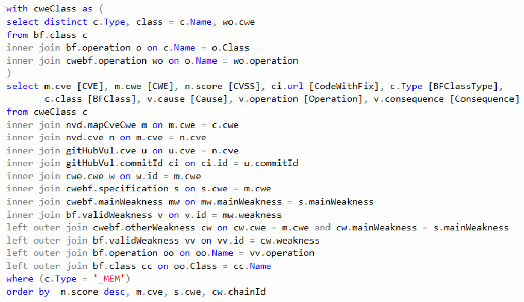
CWE、CVE、CVSS、GitHubの修正情報およびBF弱点分類を結合し、メモリ関連CVEを抽出するSQLクエリ
Fig. 29. NVD-GitHub-BF query for MEM CVEs
Fig. 29. MEM CVE向けのNVD-GitHub-BFクエリ
A similar NVD-GitHub-BF query is used to generate the BFCVE Partial dataset of CVEs for which GitHub Code with Fix is available. As of June 20, 2024, there are 5 162 BF INP CVEs with GitHub commits in NVD, 4 484 MEM CVEs, and 629 DAT CVEs.
同様のNVD-GitHub-BFクエリを使用して、GitHub Code with Fixが入手可能なCVEのBFCVE部分データセットが生成される。2024年6月20日現在、NVDにはGitHubコミットを持つBF INP CVEが5 162件、MEM CVEが4 484件、DAT CVEが629件存在する。
This methodology would also guide the creation of BF specifications of vulnerabilities for which code is not available, and insights from existing BF specifications would contribute to their analyses. Going backward from a final weakness would reveal options for previous weaknesses until a weakness with a bug as a cause is reached. For example, going backward from ⟨Wrong Size, Reposition⟩→Overbound Pointer reveals that the previous causing weakness is a BF Data Validation (DVL) initial weakness among ⟨Missing Code / Erroneous Code / Under-Restrictive Policy / Over-Restrictive Policy, Verify / Correct⟩→Wrong Value / Inconsistent Value.
この方法論は、コードが入手できない脆弱性のBF仕様の作成にも指針を与え、既存のBF仕様から得られた知見がその分析に役立つ。最終的な弱点から逆向きにたどると、原因としてバグをもつ弱点に到達するまで、先行する弱点の候補が明らかになる。たとえば、⟨Wrong Size, Reposition⟩→Overbound Pointer から逆向きにたどると、先行する原因の弱点は、⟨Missing Code / Erroneous Code / Under-Restrictive Policy / Over-Restrictive Policy, Verify / Correct⟩→Wrong Value / Inconsistent Value のうちのBF Data Validation (DVL) 初期弱点であることがわかる。
Developed BFCVE specifications are added to the comprehensively labeled BFCVE dataset (query it via the BFCVE API at [1]). The BF semantic matrices, graphs, and datasets are also continuously enriched by the newly developed formal BF specifications of CVEs and other reported security vulnerabilities.
作成されたBFCVE仕様は、包括的にラベル付けされたBFCVEデータセットに追加される（[1]のBFCVE APIで照会できる）。BFの意味行列、グラフ、データセットも、CVEやその他の報告されたセキュリティ脆弱性について新たに作成される形式的なBF仕様によって継続的に拡充される。
The BFCVE dataset augments the NVD (see [47]) and CVE via formal BF specifications of thepubliclydisclosedvulnerabilitiesaschainsofweaknesses. However,theBFhastheex-pressivepowertoclearlydescribeanysecurityweaknessandvulnerability,notonlythose listedintheCWEandCVE.Ithasitsowndatabaseswithcausalweaknesstaxonomiesand formalvulnerabilityspecificationscomposedofunderlyingweaknessesspecifications.
BFCVEデータセットは、公表された脆弱性を弱点の連鎖とした形式的BF仕様を通じて、NVD（[47]を参照）およびCVEを補強する。しかし、BFはCWEやCVEに記載されているものだけでなく、あらゆるセキュリティ上の弱点や脆弱性を明確に記述する表現力を備えている。BFは、原因となる弱点の分類体系や、基盤となる弱点仕様で構成された形式的脆弱性仕様を備えた独自のデータベースを有している。
For more details, refer to the forthcoming SP 800-231H, Bugs Framework: Datasets and Classifications.
詳細については、近日刊行予定のSP 800-231H『Bugs Framework: Datasets and Classifications』を参照されたい。
11.3. BF Vulnerability Classifications
11.3. BF脆弱性分類
The BF Vulnerability Classification Model (see Fig. 30) defines how the BF taxonomy and tools are utilized to generate BFCWE and BFCVE datasets (see Sec. 11) and query them and possibly other vulnerability-related repositories to create the BFVul dataset of diverse multidimensional vulnerability classifications based on common properties and similarities.
BF脆弱性分類モデル（Fig. 30参照）は、BFタクソノミおよびツールを利用してBFCWEおよびBFCVEデータセット（Sec. 11参照）を生成し、それらや場合によっては他の脆弱性関連リポジトリにクエリを実行して、共通の特性および類似性に基づく多様な多次元脆弱性分類のBFVulデータセットを作成する方法を定義している。
The methodology for the creation of BF-based vulnerability classifications involves the following steps:
BFに基づく脆弱性分類を作成するための方法論には、以下のステップが含まれる:
1.BFCWE Dataset: Create a comprehensively labeled weakness dataset.
1.BFCWEデータセット: 包括的にラベル付けされた弱点データセットを作成する。
2.BFCVE Dataset: Create a comprehensively labeled vulnerability dataset.
2.BFCVEデータセット: 包括的にラベル付けされた脆弱性データセットを作成する。
3.Severity: Query the CVE for CVSS scores, or use other automated approaches to determine the vulnerability severity score.
3.深刻度: CVEにクエリを実行してCVSSスコアを取得するか、または他の自動化されたアプローチを使用して脆弱性の深刻度スコアを決定する。
4.Platform: Query the CVE for associated CPEs.
4.プラットフォーム: CVEにクエリを実行して関連するCPEを取得する。
5.Exploitation: Query the NVD and EPSS for the probability of a CVE being exploited in the next 30 days.
5.悪用: 今後30日以内にCVEが悪用される確率についてNVDおよびEPSSを照会する。
6.Priority: Query the NVD and KEV or use other automated approaches to determine prioritization for remediation.
6.優先度: 修復の優先順位付けを決定するために、NVDおよびKEVを照会するか、あるいは他の自動化されたアプローチを使用する。
7.Vulnerability Classifications: Generate multidimensional vulnerability classifications based on common properties and similarities.
7.脆弱性分類: 共通の特性や類似性に基づいて、多次元の脆弱性分類を生成する。
Security vulnerabilities could be classified by common root causes (i.e., software or firmware bugs or hardware defect-induced bugs or faults), such as declaring a variable of a wrong data type. They could also be classified by any other BF taxons, such as propagating faults, common final errors, operation and operand attributes, identical BF specifications (i.e., chains of weaknesses), and even the number of underlying weaknesses.
セキュリティ脆弱性は、誤ったデータ型で変数を宣言することなど、共通する根本原因（ソフトウェアまたはファームウェアのバグ、ハードウェアの欠陥に起因するバグやフォールト）に基づいて分類できる。また、伝播するフォールト、共通の最終エラー、操作属性やオペランド属性、同一のBF仕様（すなわち弱点チェーン）、さらには根底にある弱点の数など、他のBF分類群に基づく分類も可能である。
The BF operation and operand attributes provide insight into the severity of the weaknesses and how they relate to commonly used scores, such as CVSS [11] and EPSS [38].
BFの操作属性とオペランド属性から、弱点の深刻度や、CVSS [11]、EPSS [38]など広く使われているスコアとの関係を把握できる。
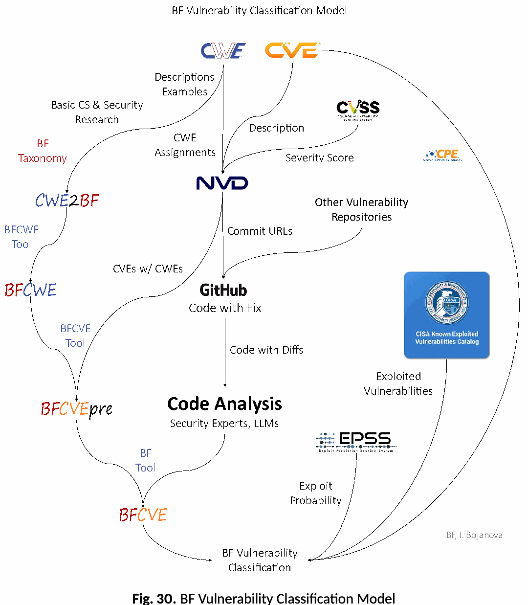
図30は、CWE／NVDの弱点・脆弱性情報、BF分類、CVE、修正コード、コード解析および悪用可能性の評価を結び付け、BF脆弱性分類を構成する情報と分析の流れを示す。
Their analysis would allow for deeper research on the most significant [45] and most ex-ploited [48] weaknesses and vulnerabilities. Intriguing classifications by BF classes and CPE [49] data may reveal systematic input/output check safety, memory safety, data type safety, and other secure coding problems by particular vendors and products.
それらの分析は、最も重大な [45] および最も悪用されている [48] 弱点や脆弱性に関するより深い研究を可能にするだろう。BFクラスとCPE [49] データによる興味深い分類は、特定のベンダーや製品における体系的な入出力チェックの安全性、メモリ安全性、データ型安全性、およびその他のセキュアコーディングの問題を明らかにする可能性がある。
These multidimensional BF vulnerability classifications (query some of them via the BFVul API at [1]) would contribute to a deeper analysis and refined understanding of security weaknesses, vulnerabilities, exploits, and failures. They would enable more focused cybersecurity research and the highly informed development of effective countermeasures against potential security threats and specific exploits.
これらの多次元BF脆弱性分類（[1]のBFVul APIから一部を検索できる）は、セキュリティ弱点、脆弱性、悪用、障害をさらに詳しく分析し、理解を深めるのに役立つ。これにより、焦点を絞ったサイバーセキュリティ研究と、潜在的なセキュリティ脅威や特定のエクスプロイトに対する効果的な対策の、十分な情報に基づく開発が可能になる。
For more details, refer to the forthcoming SP 800-231H, Bugs Framework: Datasets and Classifications.
詳細については、今後刊行予定の SP 800-231H, Bugs Framework: Datasets and Classifications を参照されたい。
11.4. BF Systems
11.4. BFシステム
The BF supports the development of diverse systems related to bug identification and triaging, vulnerability detection, analysis, prioritization, reporting, and resolution or mitigation. The methodology for the development of a BF-based system involves the following steps:
BFは、バグの特定とトリアージ、脆弱性の検出・分析・優先順位付け・報告・解決または緩和に関わる多様なシステムの開発を支援する。BFベースのシステムを開発する方法論は、次の手順から成る。
1.1. Bug Identification: Utilize steps from the methodology for the creation of BFCVE and BFVul datasets, and identify and label the root cause of the vulnerability.
1.1. バグの特定：BFCVEおよびBFVulデータセットの作成方法論の手順を利用し、脆弱性の根本原因を特定してラベル付けする。
2.2. Vulnerability Detection: Utilize steps from the methodology for the creation of BFCVE and BFVul datasets, and identify and label the weaknesses underlying the vulnerability. This may include automated analysis via static and dynamic code analysis tools, and simulation or emulation algorithms that reflect the BF methodologies. Given the formal specification of code and the BF definitions of weakness, vulnerability, and failure, formal methods may also be applied to detect vulnerabilities.
2.2. 脆弱性の検出：BFCVEおよびBFVulデータセットの作成方法論の手順を利用し、脆弱性の根底にある弱点を特定してラベル付けする。BF方法論を反映した静的・動的コード解析ツールやシミュレーション／エミュレーションアルゴリズムによる自動分析が含まれる場合もある。コードの形式仕様と、弱点、脆弱性、障害に関するBFの定義があれば、形式手法を適用して脆弱性を検出することもできる。
3.3. Report Generation: Utilize steps from the methodology for the creation of BFCVE and BFVul datasets, and generate a BF formal specification, natural language description, and machine-readable and graphical representations of the vulnerability.
3.3. 報告書の生成：BFCVEおよびBFVulデータセットの作成方法論の手順を利用し、脆弱性のBF形式仕様、自然言語による説明、機械可読表現、図式表現を生成する。
An LLM may also be prompted to generate the report for that CVE given a CVE description, examples, reports, other references, the code with bug, the code with fix, BF security concept definitions, machine-readable representations of BF taxonomies (including definitions for the taxons and taxon types), and exemplary BF specifications (i.e., entries from the BFCVE dataset).
CVEの説明、例、報告書、その他の参照資料、バグを含むコード、修正後のコード、BFセキュリティ概念の定義、分類群と分類群タイプの定義を含むBF分類体系の機械可読表現、およびBF仕様の例（すなわちBFCVEデータセットのエントリ）を与えて、LLMにそのCVEの報告書を生成させることもできる。
4.4. Severity and Prioritization: Determine the vulnerability severity score, and assess whether it needs to be resolved or mitigated urgently. This would be based on the BF-labeled weaknesses and operation and operand attributes per weakness and may include analysis of data from services and repositories, such as the EPSS [38], CVSS [11], and KEV [6].
4.4. 深刻度と優先順位付け：脆弱性の深刻度スコアを決定し、緊急に解決または緩和する必要があるか評価する。判断には、BFラベル付き弱点と各弱点の操作・オペランド属性を使う。EPSS [38]、CVSS [11]、KEV [6]などのサービスやリポジトリのデータ分析を含めることもできる。
5.5. Resolution: Determine how the vulnerability should be resolved based on fixing the identified and BF-labeled bug of the vulnerability chain or more than one bug in the cases of converging vulnerabilities.
5.5. 解決：脆弱性チェーンで特定されBFラベルが付いたバグを修正する方法を決定する。脆弱性が収束する場合は、複数のバグを修正することがある。
6.Mitigations: Determine the possible ways to mitigate the detected vulnerability based on fixing one of the BF-labeled faults through the vulnerability chain.
6.緩和策: 脆弱性チェーンを通じてBFラベル付けされたフォールトの1つを修正することに基づいて、検出された脆弱性を緩和するための可能な方法を決定する。
For more details, refer to the forthcoming SP 800-231I, Bugs Framework: Systems.
詳細については、今後刊行予定のSP 800-231I, Bugs Framework: Systemsを参照されたい。
12. Conclusion
12. 結論
This Special Publication presents an overview of the Bugs Framework (BF) [1] systematic approach and methodologies for the classification of bugs and faults per orthogonal by operation execution phases, formal specification of weaknesses and vulnerabilities, definition of secure coding principles, generation of comprehensively labeled weakness and vulnerability datasets and vulnerability classifications, and development of BF-based algorithms and systems.
本特別刊行物は、Bugs Framework（BF）[1]の体系的なアプローチと方法論を概説する。内容には、操作実行フェーズごとの直交したバグ・フォールト分類、弱点・脆弱性の形式仕様、セキュアコーディング原則の定義、包括的にラベル付けされた弱点・脆弱性データセットと脆弱性分類の生成、BFベースのアルゴリズムおよびシステムの開発が含まれる。
The BF weakness and failure taxonomies and bugs and vulnerability models form the basis for the BF ACFG that generates the BF formal language. The BF also helps formally define secure coding principles, such as input/output check safety, memory safety, and data type safety. The BF formal language is descriptive in that it is used to formally specify encountered or predicted weaknesses and vulnerabilities. The BF secure coding principles are prescriptive in that they prevent the bugs and faults per operation that break specific related kinds of code safety.
BF弱点・障害分類体系とバグ・脆弱性モデルは、BF形式言語を生成するBF ACFGの基礎である。BFは、入出力チェックの安全性、メモリ安全性、データ型安全性などのセキュアコーディング原則を形式的に定義する助けにもなる。BF形式言語は、実際に確認された、または予測された弱点と脆弱性を形式的に仕様化する記述的なものである。一方、BFセキュアコーディング原則は、特定のコード安全性を損なう操作ごとのバグやフォールトを防ぐ規範的なものである。
The BF formalism supports a deeper understanding of vulnerabilities as chains of weaknesses and allows for backward bug identification from a failure. It enables the development of new static and dynamic analysis, simulation, and emulation algorithms (e.g., see [2]). AI or formal methods-enabled capabilities could be used to identify bugs and detect, analyze, prioritize, and resolve or mitigate vulnerabilities (i.e., fix the bug or a fault of each vulnerability, respectively) to secure critical infrastructure and supply chains.
BFの形式体系は、弱点の連鎖としての脆弱性に対するより深い理解を支え、障害から遡ったバグの特定を可能にする。これにより、新たな静的および動的解析、シミュレーション、ならびにエミュレーションのアルゴリズムの開発が可能になる（例：[2] を参照）。AIや形式手法を活用した機能を利用して、バグを特定し、脆弱性を検出、分析、優先順位付けし、解決または緩和（すなわち、各脆弱性のバグまたはフォールトをそれぞれ修正）することで、重要インフラおよびサプライチェーンを保護することができる。
The weakness and vulnerability BF specification datasets augment the CWE, CVE, and NVD. However, the BF has the expressive power to clearly describe any other security weaknesses and vulnerabilities. It also allows for the prediction and identification of as yet unencountered security weakness types, which allows for the prediction and detection of new kinds of vulnerabilities.
弱点および脆弱性に関するBF仕様データセットは、CWE、CVE、NVDを補完する。ただし、BFにはこれら以外のあらゆるセキュリティ弱点や脆弱性を明確に記述できる表現力がある。また、まだ確認されていないセキュリティ弱点の種類を予測・特定できるため、新たな種類の脆弱性の予測と検出も可能になる。
The BF aims to become the new standard for the specification and labeling of security weaknesses and vulnerabilities. It enables the clear and precise expression of security bugs, weaknesses, vulnerabilities, and failures. Government institutions could improve the descriptions in public vulnerability repositories and create advanced policies and guidelines for software, firmware, and hardware testing. Security companies could improve their testing tools and bug and vulnerability reports. Academics could teach better about security bugs, weaknesses, and vulnerabilities and conduct deeper security vulnerability and failure research. All of these would lead to unambiguous communication about cybersecurity, the increased precision of code review tools, and a decrease in security bugs, weaknesses, and vulnerabilities.
BFは、セキュリティ弱点および脆弱性の仕様記述とラベリングに関する新たな標準となることを目指している。BFは、セキュリティ上のバグ、弱点、脆弱性、および障害の明確かつ精密な表現を可能にする。政府機関は、公開脆弱性リポジトリにおける記述を改善し、ソフトウェア、ファームウェア、およびハードウェアのテストに向けた高度なポリシーやガイドラインを策定することができる。セキュリティ企業は、自社のテストツールやバグおよび脆弱性レポートを改善することができる。学術機関は、セキュリティ上のバグ、弱点、および脆弱性についてより適切な教育を行い、セキュリティ脆弱性と障害に関するより深い研究を実施することができる。これらはすべて、サイバーセキュリティに関する曖昧さのないコミュニケーション、コードレビューツールの精度の向上、ならびにセキュリティ上のバグ、弱点、および脆弱性の減少につながる。
References
参考文献
[1] Irena Bojanova (2014-2024) NIST Bugs Framework (BF) Website. Available at https: //usnistgov.github.io/BF. [2] Kedrian James, K Valakuzhy, K Snow, F Monrose (June 2024) CrashTalk: Automated Generation of Precise, Human Readable, Descriptions of Software Security Bugs. CO-DASPY ’24: Proceedings of the Fourteenth ACM Conference on Data and Application Security and Privacy, pp 337 – 347. htps://doi.org/10.1145/3626232.3653256 [3] MITRE (2006-2024) Common Weakness Enumeration (CWE). Available at https://cw e.mitre.org. [4] MITRE (1999-2024) Common Vulnerabilities and Exposures (CVE). Available at https: //cve.mitre.org. [5] NIST (1999-2024) National Vulnerability Database (NVD). Available at https://nvd.ni st.gov. [6] CISA (2021-2024) Known Exploited Vulnerabilities Catalog (KEV). Available at https: //www.cisa.gov/known-exploited-vulnerabilities-catalog. [7] MITRE CWE History. Available at https://cwe.mitre.org/about/history.html. [8] David E Mann, S M Christey (Jan. 8, 1999) Towards a Common Enumeration of Vulner-abilites. Available at https://www.cve.org/Resources/General/Towards-a-Commo n-Enumeration-of-Vulnerabilities.pdf. [9] MITRE CVE History. Available at https://www.cve.org/About/History. [10] Peter Mell, K Kent, S Romanosky (2006) Common vulnerability scoring system. Avail-able at https://tsapps.nist.gov/publication/get pdf.cfm?pub id=50899. [11] FIRST (2015-2024) Common vulnerability scoring system special interest group. Avail-able at https://www.first.org/cvss. [12] Irena Bojanova (Dec. 9, 2014) Formalizing Software Bugs. NIST, ITL, SSD. Available at https://www.nist.gov/publications/formalizing-software-bugs. [13] Irena Bojanova (Apr. 8, 2015) Towards a ’Periodic Table’ of Bugs. NIST, ITL, SSD. Avail-able at https://www.nist.gov/publications/towards-periodic-table-bugs. [14] Yan Wu, I Bojanova, Y Yesha (2015) They Know Your Weaknesses -Do You?: Reintro-ducing Common Weakness Enumeration. CrossTalk (The Journal of Defense Software Engineering), pp 44–50. Available at https://web.archive.org/web/20180425211828 id /http://static1.1.sqspcdn.com/static/f/702523/26523304/1441780301827/20150 9-Wu.pdf?token=WJEmDLgmpr3rIZHriubA20L%2F1%2F4%3D. [15] Irena Bojanova, P E Black, Y Yesha, Y Wu (October 2016) The NIST Bugs Framework (BF): A Structured Approach to Express Bugs. 2016 IEEE International Conference on Software Quality, Reliability and Security (QRS), pp 175–182. htps://doi.org/10.1109/
[1] Irena Bojanova（2014-2024）NISTバグフレームワーク（BF）ウェブサイト。 https://usnistgov.github.io/BF から入手可能。 [2] Kedrian James, K Valakuzhy, K Snow, F Monrose（2024年6月）CrashTalk: ソフトウェアセキュリティバグの正確で人間が読める説明の自動生成。CO-DASPY ’24: 第14回データおよびアプリケーションセキュリティとプライバシーに関するACMカンファレンスプロシーディングス、pp 337 – 347。 https://doi.org/10.1145/3626232.3653256 [3] MITRE（2006-2024）共通脆弱性タイプ一覧（CWE）。 https://cwe.mitre.org から入手可能。 [4] MITRE（1999-2024）共通脆弱性識別子（CVE）。 https://cve.mitre.org から入手可能。 [5] NIST（1999-2024）米国国家脆弱性データベース（NVD）。 https://nvd.nist.gov から入手可能。 [6] CISA（2021-2024）既知の悪用された脆弱性カタログ（KEV）。 https://www.cisa.gov/known-exploited-vulnerabilities-catalog から入手可能。 [7] MITRE CWEの歴史。 https://cwe.mitre.org/about/history.html から入手可能。 [8] David E Mann, S M Christey（1999年1月8日）脆弱性の共通列挙に向けて。 https://www.cve.org/Resources/General/Towards-a-Common-Enumeration-of-Vulnerabilities.pdf から入手可能。 [9] MITRE CVEの歴史。 https://www.cve.org/About/History から入手可能。 [10] Peter Mell, K Kent, S Romanosky（2006）共通脆弱性評価システム。 https://tsapps.nist.gov/publication/get_pdf.cfm?pub_id=50899 から入手可能。 [11] FIRST（2015-2024）共通脆弱性評価システム特別関心グループ。 https://www.first.org/cvss から入手可能。 [12] Irena Bojanova（2014年12月9日）ソフトウェアバグの形式化。NIST, ITL, SSD。 https://www.nist.gov/publications/formalizing-software-bugs から入手可能。 [13] Irena Bojanova（2015年4月8日）バグの「周期表」に向けて。NIST, ITL, SSD。 https://www.nist.gov/publications/towards-periodic-table-bugs から入手可能。 [14] Yan Wu, I Bojanova, Y Yesha（2015）彼らはあなたの弱点を知っている - あなたは知っていますか？：共通脆弱性タイプ一覧の再導入。CrossTalk（The Journal of Defense Software Engineering）、pp 44–50。 https://web.archive.org/web/20180425211828id_/http://static1.1.sqspcdn.com/static/f/702523/26523304/1441780301827/201509-Wu.pdf?token=WJEmDLgmpr3rIZHriubA20L%2F1%2F4%3D から入手可能。 [15] Irena Bojanova, P E Black, Y Yesha, Y Wu（2016年10月）NISTバグフレームワーク（BF）：バグを表現するための構造化アプローチ。2016 IEEE ソフトウェア品質、信頼性およびセキュリティに関する国際会議（QRS）、pp 175–182。 https://doi.org/10.1109/
[16] Irena Bojanova, C E Galhardo (October 2021) Input/Output Check Bugs Taxonomy: In-jecton Errors in Spotlight. 2021 IEEE International Symposium on Software Reliability Engineering Workshops (ISSREW), pp 111–120. htps://doi.org/10.1109/ISSREW5361 1.2021.00052
[16] Irena Bojanova, C E Galhardo（2021年10月）入出力チェックバグの分類法：インジェクションエラーに焦点を当てて。2021 IEEE ソフトウェア信頼性工学に関する国際シンポジウムワークショップ（ISSREW）、pp 111–120。 https://doi.org/10.1109/ISSREW53611.2021.00052
[17] Irena Bojanova, C E Galhardo (July 2021) Classifying Memory Bugs Using Bugs Frame-work Approach. 2021 IEEE 45th Annual Computers, Software, and Applications Con-ference (COMPSAC), pp 1157–1164. htps://doi.org/10.1109/COMPSAC51774.2021. 00159 [18] Irena Bojanova, C E Galhardo, S Moshtari (October 2022) Data Type Bugs Taxon-omy: Integer Overflow, Juggling, and Pointer Arithmetics in Spotlight. 2022 IEEE 29th Annual Software Technology Conference (STC)), pp 192–205. htps://doi.org/
[17] Irena Bojanova, C E Galhardo（2021年7月）バグフレームワークアプローチを用いたメモリバグの分類。2021 IEEE 第45回年次コンピュータ、ソフトウェア、およびアプリケーション会議（COMPSAC）、pp 1157–1164。 https://doi.org/10.1109/COMPSAC51774.2021.00159 [18] Irena Bojanova, C E Galhardo, S Moshtari（2022年10月）データ型バグの分類法：整数オーバーフロー、ジャグリング、およびポインタ演算に焦点を当てて。2022 IEEE 第29回年次ソフトウェア技術カンファレンス（STC））、pp 192–205。 https://doi.org/
[19] Constable S (Febryary 29, 2024) Chips & Salsa: Industry Collaboraton for new Hard-ware CWEs. Available at https://community.intel.com/t5/Blogs/Products-and-Solut ions/Security/Chips-Salsa-Industry-Collaboraton-for-new-Hardware-CWEs/post/1 575521. [20] Kedrian James, Y Du, S Das, F Monrose (December 2022) Separatng the Wheat from the Chaff: Using Indexing and Sub-Sequence Mining Techniques to Identify Related Crashes During Bug Triage. 2022 IEEE 22nd International Conference on Software Quality, Reliability and Security (QRS), pp 31–42. htps://doi.org/10.1109/QRS575 17.2022.00014 [21] Drew Malzahn, Z Birnbaum, C Wright-Hamor (2020) Automated Vulnerability Testing via Executable Atack Graphs. 2020 International Conference on Cyber Security and Protecton of Digital Services (Cyber Security) (IEEE), p 1–10. htps://doi.org/10.1109/ CyberSecurity49315.2020.9138852 [22] Irena Bojanova (Jan.-Feb. 2024) Comprehensively Labeled Weakness and Vulnerabil-ity Datasets via Unambiguous Formal NIST Bugs Framework (BF) Specifications. IEEE IT Professional, Vol. 26, 1, pp 60–68. htps://doi.org/10.1109/MITP.2024.3358970 [23] Wikipedia (2023) Heartbleed. Available at https://en.wikipedia.org/wiki/Heartbleed. [24] IEEE Computer Society (September, 1990) IEEE Standard 610.12-1990, Glossary of Sof-ware Engineering Terminology. Available at https://ieeexplore.ieee.org/stamp/stam p.jsp?arnumber=159342. [25] CISA (2022) ICS Advisory (ICSA-21-119-04). Available at https://www.cisa.gov/uscert/ ics/advisories/icsa-21-119-04. [26] Omri Ben-Bassat TA (2021) ERROR: BadAlloc! - Broken Memory Allocators Led to Millions of Vulnerable IoT and Embedded Devices. Blackhat USA 2021 Available at https://www.youtube.com/watch?v=lSvygMc8uc0. [27] Assane Gueye, C E Galhardo, I Bojanova (Jul.-Aug. 2023) Critical Software Security Weaknesses. IEEE IT Professional, Vol. 25, 4, pp 11–16. htps://doi.org/10.1109/MITP .2023.3297387 [28] OpenSSL (2005) Openssl/ssl/d1 both.c. Available at https://git.openssl.org/?p=ope nssl.git;a=blob;f=ssl/d1 both.c;h=0a84f957118afa9804451add380eca4719a9765e;h b=4817504d069b4c5082161b02a22116ad75f822b1. [29] Sean Cassidy (April, 2014) Diagnosis of the OpenSSL Heartbleed Bug. Available at ht tps://www.seancassidy.me/diagnosis-of-the-openssl-heartbleed-bug.html.
[19] Constable S (2024年2月29日) Chips & Salsa: 新しいハードウェアCWEに向けた業界のコラボレーション。以下で入手可能: https://community.intel.com/t5/Blogs/Products-and-Solutions/Security/Chips-Salsa-Industry-Collaboration-for-new-Hardware-CWEs/post/1575521。 [20] Kedrian James, Y Du, S Das, F Monrose (2022年12月) 小麦ともみ殻の選別：バグトリアージ中に関連するクラッシュを特定するためのインデックス付けおよび部分列マイニング技術の使用。2022 IEEE 第22回ソフトウェア品質・信頼性・セキュリティ国際会議 (QRS), pp 31–42. https://doi.org/10.1109/QRS57517.2022.00014 [21] Drew Malzahn, Z Birnbaum, C Wright-Hamor (2020) 実行可能攻撃グラフによる自動脆弱性テスト。2020年デジタルサービスのサイバーセキュリティと保護に関する国際会議 (Cyber Security) (IEEE), p 1–10. https://doi.org/10.1109/CyberSecurity49315.2020.9138852 [22] Irena Bojanova (2024年1月-2月) 曖昧さのない形式的NISTバグフレームワーク (BF) 仕様による包括的にラベル付けされた弱点および脆弱性データセット。IEEE IT Professional, Vol. 26, 1, pp 60–68. https://doi.org/10.1109/MITP.2024.3358970 [23] Wikipedia (2023) Heartbleed。以下で入手可能: https://en.wikipedia.org/wiki/Heartbleed。 [24] IEEE Computer Society (1990年9月) IEEE Standard 610.12-1990, ソフトウェア工学用語集。以下で入手可能: https://ieeexplore.ieee.org/stamp/stamp.jsp?arnumber=159342。 [25] CISA (2022) ICSアドバイザリ (ICSA-21-119-04)。以下で入手可能: https://www.cisa.gov/uscert/ics/advisories/icsa-21-119-04。 [26] Omri Ben-Bassat TA (2021) ERROR: BadAlloc! - 壊れたメモリアロケータが数百万もの脆弱なIoTおよび組み込み機器をもたらした。Blackhat USA 2021 以下で入手可能: https://www.youtube.com/watch?v=lSvygMc8uc0。 [27] Assane Gueye, C E Galhardo, I Bojanova (2023年7月-8月) 重大なソフトウェアセキュリティの弱点。IEEE IT Professional, Vol. 25, 4, pp 11–16. https://doi.org/10.1109/MITP.2023.3297387 [28] OpenSSL (2005) Openssl/ssl/d1 both.c。以下で入手可能: https://git.openssl.org/?p=openssl.git;a=blob;f=ssl/d1_both.c;h=0a84f957118afa9804451add380eca4719a9765e;hb=4817504d069b4c5082161b02a22116ad75f822b1。 [29] Sean Cassidy (2014年4月) OpenSSL Heartbleedバグの診断。以下で入手可能: https://www.seancassidy.me/diagnosis-of-the-openssl-heartbleed-bug.html。
[30] OpenSSL (2014) openssl/openssl, openssl 1 0 1-stable. Available at https://github.c om/openssl/openssl/commit/96db9023b881d7cd9f379b0c154650d6c108e9a3. [31] ISO/IEC 14977 (1996) International Standard: Information technology — Syntactic metalanguage — Extended BNF. Available at https://www.iso.org/standard/261 53.html. [32] Alfred Aho, M Lam, R Sethi, J Ullman (2006) Compilers: Principles, Techniques, and Tools (Addison-Wesley). [33] Donald Knuth (1968) Semantics of context-free languages. Math. Systems Theory 2,p 127–145. htps://doi.org/10.1007/BF01692511 [34] Software Engineering Institute (2016) SEI CERT C Coding Standard: Rules for Develop-ing Safe, Reliable, and Secure Systems. Available at https://resources.sei.cmu.edu/ downloads/secure-coding/assets/sei-cert-c-coding-standard-2016-v01.pdf. [35] Software Engineering Institute (2016) SEI CERT C++ Coding Standard: Rules for Devel-oping Safe, Reliable, and Secure Systems. Available at https://resources.sei.cmu.ed u/downloads/secure-coding/assets/sei-cert-cpp-coding-standard-2016-v01.pdf. [36] Open Web Application Security Project (2010) OWASP Secure Coding Practces-Quick Reference Guide. Available at https://owasp.org/www-project-secure-coding-pract ices-quick-reference-guide. [37] GitHub (2008) GitHub. Available at https://github.com. [38] FIRST (2021-2024) Exploit Prediction Scoring System (EPSS). Available at https://ww w.first.org/epss. [39] Irena Bojanova (2020-2024) NIST Bugs Framework (BF), BFCWE Tool. Available at ht tps://usnistgov.github.io/BF/info/tools/bfcwe-tool. [40] Irena Bojanova, J J Guerrerio (Sept.-Oct. 2023) Labeling Software Security Vulnerabil-ites. IEEE IT Professional, Vol. 25, 5, pp 64–70. htps://doi.org/10.1109/MITP.2023. 3314368 [41] Peter Mell, Irena Bojanova (2024) NIST IR 8517, Hardware Security Failure Scenarios: Potental Weaknesses in Hardware Design. Available at https://doi.org/10.6028/NI
[30] OpenSSL (2014) openssl/openssl, openssl 1 0 1-stable。以下で入手可能: https://github.com/openssl/openssl/commit/96db9023b881d7cd9f379b0c154650d6c108e9a3。 [31] ISO/IEC 14977 (1996) 国際規格：情報技術 — 構文メタ言語 — 拡張BNF。以下で入手可能: https://www.iso.org/standard/26153.html。 [32] Alfred Aho, M Lam, R Sethi, J Ullman (2006) コンパイラ：原理・技法・ツール (Addison-Wesley)。 [33] Donald Knuth (1968) 文脈自由言語の意味論。Math. Systems Theory 2, p 127–145. https://doi.org/10.1007/BF01692511 [34] Software Engineering Institute (2016) SEI CERT C コーディングスタンダード：安全で信頼性がありセキュアなシステムを開発するためのルール。以下で入手可能: https://resources.sei.cmu.edu/downloads/secure-coding/assets/sei-cert-c-coding-standard-2016-v01.pdf。 [35] Software Engineering Institute (2016) SEI CERT C++ コーディングスタンダード：安全で信頼性がありセキュアなシステムを開発するためのルール。以下で入手可能: https://resources.sei.cmu.edu/downloads/secure-coding/assets/sei-cert-cpp-coding-standard-2016-v01.pdf。 [36] Open Web Application Security Project (2010) OWASP セキュアコーディング実践クイックリファレンスガイド。以下で入手可能: https://owasp.org/www-project-secure-coding-practices-quick-reference-guide。 [37] GitHub (2008) GitHub。以下で入手可能: https://github.com。 [38] FIRST (2021-2024) 悪用予測スコアリングシステム (EPSS)。以下で入手可能: https://www.first.org/epss。 [39] Irena Bojanova (2020-2024) NIST Bugs Framework (BF), BFCWE Tool。以下で入手可能: https://usnistgov.github.io/BF/info/tools/bfcwe-tool。 [40] Irena Bojanova, J J Guerrerio (2023年9月-10月) ソフトウェアセキュリティ脆弱性のラベリング。IEEE IT Professional, Vol. 25, 5, pp 64–70. https://doi.org/10.1109/MITP.2023.3314368 [41] Peter Mell, Irena Bojanova (2024) NIST IR 8517, ハードウェアセキュリティ障害シナリオ：ハードウェア設計における潜在的弱点。以下で入手可能: https://doi.org/10.6028/NI
[42] Irena Bojanova (2020-2024) NIST Bugs Framework (BF), BFCVE Tool. Available at https://usnistgov.github.io/BF/info/tools/bfcve-tool.
[42] Irena Bojanova (2020-2024) NIST Bugs Framework (BF), BFCVE Tool. 入手先：https://usnistgov.github.io/BF/info/tools/bfcve-tool.
[43] Chen Y, at all (2023) DiverseVul: A New Vulnerable Source Code Dataset for Deep Learning Based Vulnerability Detection. Available at https://github.com/wagner-group/diversevul.
[43] Chen Y, at all (2023) DiverseVul: A New Vulnerable Source Code Dataset for Deep Learning Based Vulnerability Detection. 入手先：https://github.com/wagner-group/diversevul.
[44] Irena Bojanova (2020-2024) NIST Bugs Framework (BF), BF Tool. Available at https://usnistgov.github.io/BF/info/tools/bf-tool.
[44] Irena Bojanova (2020-2024) NIST Bugs Framework (BF), BF Tool. 入手先：https://usnistgov.github.io/BF/info/tools/bf-tool.
[45] Carlos EC Galhardo, P Mell, I Bojanova, A Gueye (December 2020) Measurements of the Most Significant Software Security Weaknesses. 2020 Annual Computer Security Applications Conference (ACSAC), p 154–164. https://doi.org/10.1145/3427228.3427257
[45] Carlos EC Galhardo, P Mell, I Bojanova, A Gueye (December 2020) Measurements of the Most Significant Software Security Weaknesses. 2020 Annual Computer Security Applications Conference (ACSAC), p 154–164. https://doi.org/10.1145/3427228.3427257
[46] MITRE (2023) Weaknesses for Simplified Mapping of Published Vulnerabilities. Available at https://cwe.mitre.org/data/definitions/1003.html.
[46] MITRE (2023) Weaknesses for Simplified Mapping of Published Vulnerabilities. 入手先：https://cwe.mitre.org/data/definitions/1003.html.
[46] MITRE (2023) Weaknesses for Simplified Mapping of Published Vulnerabilities. Avail-able at https://cwe.mitre.org/data/definitions/1003.html. [47] Kevin Poireault (Mar. 28, 2024) NIST Unveils New Consortum to Operate National Vulnerability Database. Available at https://www.infosecurity-magazine.com/news /nist-unveils-new-nvd-consortium/#: ∼:text=NVD’s%20One%2Dto%2DFive%20Year, years%2C%20especially%20around%20software%20identfication. [48] Peter Mell, I Bojanova, Carlos EC Galhardo (May-Jun. 2024) Measuring the Ex-ploitaton of Weaknesses in the Wild. IEEE IT Professional, Vol. 26, 2, pp 14–21. htps://doi.org/10.1109/MITP.2024.3399485 [49] NIST Common Platform Enumeration (CPE). Available at https://csrc.nist.gov/projec ts/security-content-automation-protocol/specifications/cpe.
[46] MITRE (2023) 公開された脆弱性の簡略化されたマッピングのための弱点。 https://cwe.mitre.org/data/definitions/1003.html から入手可能。 [47] Kevin Poireault (2024年3月28日) NIST、国家脆弱性データベースを運用するための新コンソーシアムを発表。 https://www.infosecurity-magazine.com/news/nist-unveils-new-nvd-consortium/#:~:text=NVD’s%20One%2Dto%2DFive%20Year,years%2C%20especially%20around%20software%20identfication から入手可能。 [48] Peter Mell, I Bojanova, Carlos EC Galhardo (2024年5月-6月) 実環境における弱点の悪用の測定。IEEE IT Professional, Vol. 26, 2, pp 14–21. https://doi.org/10.1109/MITP.2024.3399485 [49] NIST 共通プラットフォーム識別子 (CPE)。 https://csrc.nist.gov/projects/security-content-automation-protocol/specifications/cpe から入手可能。